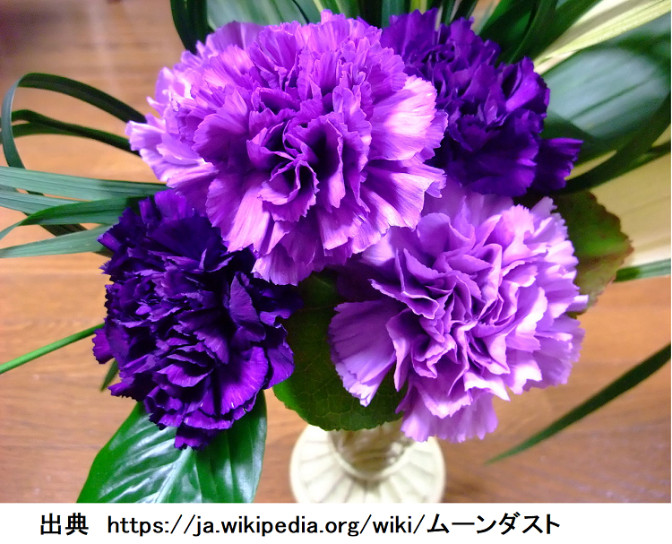
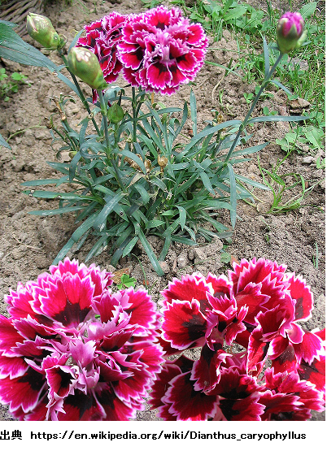
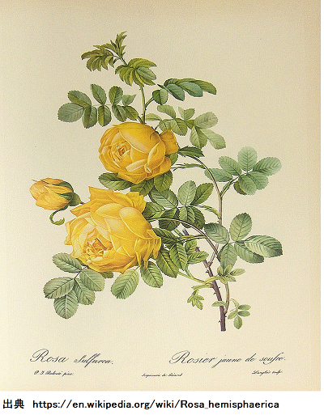
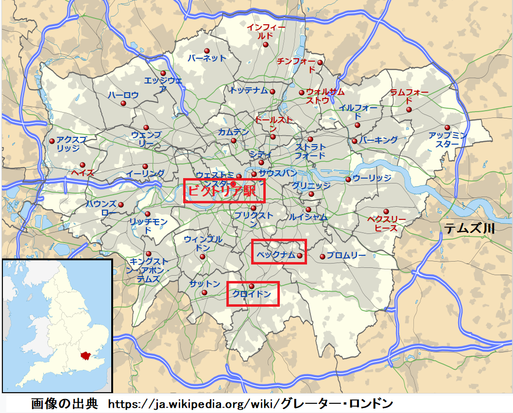
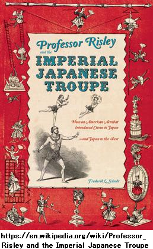
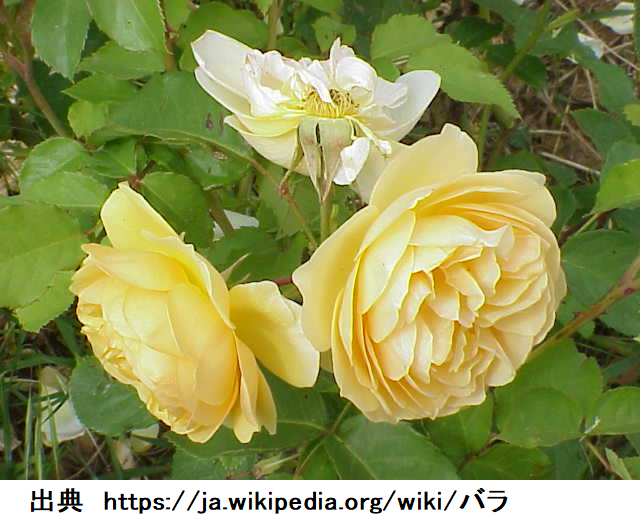
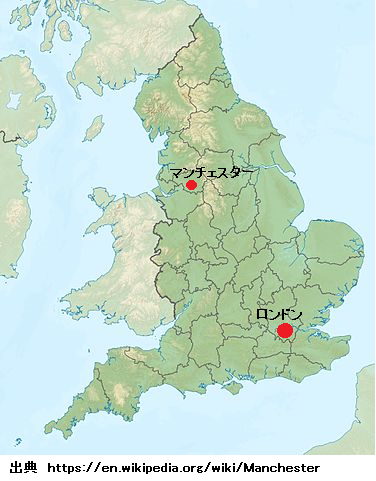
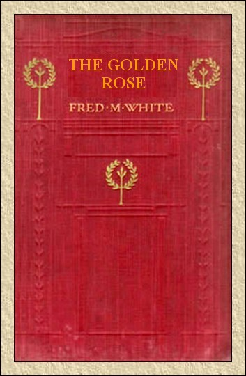

第一章 育種家
ジョン・レスブリッジの眼の前には、様々な色が点々と踊っていた。中はとても暑かったので汗が
温度計を見れば、ほぼ
小温室の明かり数灯を
どの棚の花々も華麗、蒸し暑い環境で咲き誇り、生き生きしているのは、ガラス温室ならではだ。でも、レスブリッジの関心はこれらの花じゃなく、足元の
種類ごとに区分けされ、芽生え直後のものから、
「どんな花が咲くかなあ。人生の盛りをこんなばくちに三年も費やすなんて。競馬とか株じゃなく、花に賭けているんだから。またしても失敗か、はたまた何千ポンドの花を開発寸前か。来週わかる。とにかく今夜は終業だ。ああ神様、この小さな花には、どんな希望やら恐怖やら、歓喜やら悲嘆が待っていることか」
ニヤリ笑って立ち上がり、無意識に片手をポケットに突っ込み、タバコを
まさにそんな状況だった。かつて学生時代には、高収入、円満家庭を夢見たこともあった。
スポーツや政治、恋愛すら無関心じゃなかった。平凡な英国人そのものであり、伝統に
たった一人の親戚である叔父も似た者で、この人と暮らし、順調にいけば、資産を相続するはずだった。
叔父のジャスパーペインも凝り性だった。大好きな花々の名前や性質を教えてくれて、幼い子供
当時、叔父が何をしていたのか分からないし、尋ねようもなかったし、いずれ自分のものになるはずだった。
ところが、叔父はとんでもない山師で、何千ポンドもの大金をひどい実験に使い、盗難に見舞われたとき、金持ちどころか、破産の瀬戸際だった。叔父が花の品種改良で日々の生計を立てていることなど、全く思ってもいなかった。
その盗難は三年前、予期せぬ驚くべき事態になった。高価な苗が盗まれて、自分が疑われてしまった。ある程度、不利な状況だったので、あえて弁解しなかった。深く傷つき、嫌気が差し、何もする気が起こらなかった。こうして二十五歳の時、職もなく世の中に放り出されてしまった。
だが
二年後また無職になり、わずか数ポンドに困る有様だった。そこで腹をくくり、小さな農場を借りて、生活の
当地では、ため息をつくこともあった。得てして狂信者は無茶で、高価な植物に金をつぎ込んで趣味にのめり込むものだ。豊富な読書によって、新式の電気促成栽培方法を知り、やってみようと決心した。二年目の終わりには進歩もなく、資金もほとんど尽きてしまった。二、三小さな成功があり、たいした儲けじゃなかったが、将来の糧になった。
一方、致命的な失敗がたびたびあり、主因は実験場の気象条件のせいだと思われた。もう絶望的だった。マンチェスターが最適な場所だと聞きつけ、数週間前に、

そして今、見よ、まさに開こうとしている。数日で運命が分かるはずだ。他の品種も開花に近づいているが、これは考えなくても良い。少なくとも二週間見なくても、とにかく一つぐらいは豪華な花が咲くだろう。
今まで自分にいいことはなかったが、ジャスパー叔父はすばらしい成果を得ていた。まあ、そのうち分かる。一方のレスブリッジはカーネーションに熱中し、最後の望みをつないだ。
第二章 足跡
とても蒸し暑くなってきたので耐えられなくなった。不安もあった。なぜならここ数日、見張られている気がぬぐえなかったからだ。一層不可解なのは近所に一人も知り合いがいないのにだ。でもマンチェスターは園芸家や
今まで秘密保持には神経を使っていなかったが、ついに事件が起こり、警戒が必要になった。当然、事業には商機に絡み、貴重な花なら相当なお金になることも承知済みだ。
たとえば偶然の一致で、レスブリッジの開発品と同じ
ここ数晩、妙な物音が聞こえ、誰か小屋をうろついている気がする。足跡を見つけた場所が、あり得ない所だった。更に妙なのは男の足型じゃない。小ぶりで、形が良く、かかとは明らかに女だ。そんなことを考えながら、電球に覆いをかぶせ、用心して温室の扉に鍵をかけた。
庭に出ると気分は良くなったが、夜は
庭に突っ立っていると、人の気配がする。妙に不安になり、近くに誰かいるような気がする。ツツジの植え込みで、がさごそ音がした。いつも花の香りに囲まれているせいか、あるいは実際かすかに匂うせいか、奇妙な香水は外套を着た女のものか。
誰だろう、お近づきの印に誰がこんなご挨拶をするか。そんなことを考えていると、頭上の黒雲に突然、
ツツジの小枝や葉が丸見えになり、何か女のスカートが見えたような。暗雲が発する光によって、靴がきらっと光った。そのあと耳をつんざく
「誰だ、ここで何をしている」
レスブリッジの声は厳しかった。顔の表情も
レスブリッジはすっかり心を奪われて、二の句が継げなかった。美しい。お気に入りの花みたいだ。小柄だがとても上品で、肌色は薄い乳白色と、淡い紅色との、中間と言ったところ。顔は美形、まじめ。小説に出てくる
「ごめんなさい」
今度はレスブリッジがぶつぶつおわびした。早まったことを後悔した。でも、こんな夜に女が一人、雨具も持たず外出するなんてあり得ない。相変わらず女は魅惑的な声で続けた。
「知らなかったのです。暑かったので外出して、道路から農場へ近道して、迷いました。すぐ説明すれば良かったのですが、急に扉が開いてびっくりしました。道を教えてくださればすぐ行きます」
「無理だよ。
「いいえ、そこの丘の
レスブリッジが不機嫌にうなずいた。また疑惑が沸いた。もし、乳白ピンクの肌色、
「何かお気に障ることを言いましたか」
レスブリッジが困って笑った。
「さあね。僕が疑い深いからかな。新参者だし、ここなら安全なはずだけど。生活というか、目標は花の新種開発だ。むかし貴重な植物を盗まれて、二年無駄にした。それ以来とても用心している」
女は気にしていないようだ。レスブリッジが無口になり始めた。犯人扱いして、宝の花に目をつけて、うろついていたと思った。幸い気づいていないようだ。女が続けた。
「奇妙ですね。私の叔父も同じ事をしています。いつも温室にいます。新品種の花を出荷して儲けようとしています。それ以外何も考えず、何百ポンドも費やし、とても趣味には出せない金額です。そうなったのも、当初立派な家に住み、欲しいものが何でも買えたからでしょう。今は一ポンド無心しても怒る有様です。仲間と組んだらと言っても、聞き入れません。昔、信頼していた人に苗を盗まれ裏切られてから、ことごとく男性を避けています」
「妙な一致だなあ。叔父さんの名前は？」
「ジャスパーペインです。昔はベッカムホールに住んでいました。わたくしはメアリ・グローバと申します。前に叔父と言いましたが、遠い血縁です」
レスブリッジが上の空でうなずいた。驚くべき話を聞いても、予想の半分も驚かなかった。まさに長年つきまとってきたつらい運命そのものだった。
おそらくこの女は俺のことを聞いている。きっと叔父は全部
ペインとの血縁関係をすぐ言うのが俺の義務だろうが、
もし本当の名前を言ったら、女は困惑するだろうし、勝手に決めつけるだろう。間違いなく恩知らずの泥棒と教えられただろう。名前を言ったら、あのかわいい顔が
「きみの叔父さんと僕は、同じ不運な境遇だなあ。不実な友人に苦しめられているし、同じ珍しい職業だし。花の交配に興味がありますか」
「とてもあります、許されたらですけど。花は大好きですが、仕組みは何も知りません。叔父は女には理解する能力が無いとか。私の知っていることは、ある季節だけ蜂を温室に入れないことぐらいです。なぜかしら」
「ハハハ、簡単だよ。人間から見れば、蜂は役立ち、花から花へ花粉を運び、新しい雑種を作ってくれる。だが園芸家にとっては単なる運まかせになる。温室で貴重な品種が花咲こうとしているとき、蜂がいたら、どんな種が出来るか想像してごらん。ごめん、小難しいことを言って」
「たぶん、わたしの勉強不足ですね。よかったらお花を見せて頂けませんか。叔父と一緒でないと、温室にはいれないものですから」
またしても
だが、思ったより俺は弱いようだ。だって、直後に案内したのが息苦しいガラス温室の中、白熱電球の光が鉢苗を明るく照らしていた。
「誰にも見せないはずだった。他人のあなたを信用して、大切な秘密を見せよう。隅のカーネーションを見てごらん、つぼみが二個咲き始めている。数日で開く。完璧な青い花じゃなかったら落胆するだろう。青いカーネーションを想像してごらん。小さな花を完成させるために何年、世話し苦労し希望を持ったことか、想像できないだろう。
「ええ。英国では三人だけ栽培していると思います。あなたも育てているのですか」
第三章 運命の花
「僕が開発した。初めて成功して、自信がついた花だ。四年程前に考えついて、一年かけてうまく行った。当時、僕の研究に多少興味を持った男と知り合いになり、融資してくれる予定だったが、心変わりして米国へ帰ってしまった。悪人かどうかは確かめようがないから分からない。だが、僕を負かし、
「そうだと思います」
「ああ、その通りだ。聞きたいだろう、新品種の開発者が成果を奪われた話だよ。時間はかからない。少なくとも四本、縞模様カーネーション新品種を発見した喜びは、言う必要も無いだろう。分かるだろう、色が交互に帯になり、紋章のようだった。これをあの男に見せたところ、興味津々だった。だが色やせしそうだから価値はないと言った。意味が分かったから、とても傷ついたよ。花は一株に三輪以上咲かせず、最高の発色を期待した。翌朝、僕の落胆ぶりと言ったら、三輪とも黄色い帯がすっかり消えて、色あせた赤い花になっていた。例の男は町におり、戻って来たとき、それを見せた。そのうちこの欠点を確実に除けると言ったのだが、奴は納得していないようだった。とにかくあれこれ言い訳をして、約束の融資を断った。僕はほとほと嫌気が差したので、カーネーションを引っこ抜いてゴミ捨て場に捨てた。そのあと関心をほかに向けたが、驚いたのなんの、数ヶ月後、僕の開発したあの花が米国から英国へ逆輸入された。ああ、入手方法を尋ねないでくれ。

レスブリッジが話を止めて、深呼吸した。女が同情の目を向けて、
「お友達はあなたが植物を捨てたことを知っていたのですか。見たのですか。カーネーションは丈夫で、何回も移植できるっていうじゃないですか」
「しまった。考えもしなかった。謎が気になり、呪われる程だった。それを、きみが一発で解いてくれた。でも残念ながら、状況は前と同じだ」
「ほかの点も見逃していませんか。もちろんお友達があなたを騙して、あなたの捨てた植物を利用した可能性もありますが、花の色が変わった理由にならないのでは」
「それも考えなかった。一時間前は全然知らなかったきみと話をするなんて、何て奇妙なんだろう」
メアリが陽気に笑った。会話を楽しんだ理由は、ジャスパー叔父との生活が退屈で単調だったからだ。この数年で初めて、同年代、同階級の男と話した。だって、叔父はかたくなに殻に閉じこもり、ともかく面会者と言えば田舎の警部だけだもの。
警部は熱心な素人園芸家で、叔父が親交を求めたのは何より保護が目的だった。というのも、つきまとう恐怖を捨てきれず、盗難に絶えずおののき暮らすのは、むかし窃盗に遭い、レスブリッジと口論になったからだ。
あれこれメアリはとりとめなく話した。レスブリッジも興味津々、メアリも
レスブリッジとしては、やがて打ち明けざるを得ないが、そうすればこの
「すっかり晴れたようだな」
女が半ば残念そうに言った。
「そうですか。では家に帰らなくては。どこへ行ったか叔父が心配します。ところで、あれは？」
指差す温室
「そこは駄目だ。もう十分見せたろ。言えないこともある。いつかは……。申し訳ない、嫌がらせをして」
メアリが赤面し、唇が震えた。たぶんレスブリッジは
「詮索する気はありません」
「当たり前だ、分かっとる。話せないこともある」
とレスブリッジが厳しく言った。
気まずくなって、メアリが出口へ行った。雨がやみ、しずくが木々から垂れ、みずみずしい花の香りが
「きみの庭まで遅らせてくれ。一人で行かせたくない。さっき道に迷ったから、又迷うかも知れない」
拒絶されなかったので、いつもよりおとなしく静かに並んで歩いた。わだかまりがあったからだ。本名を名乗らねばならないが、自尊心ゆえに、誤解されたままではつきあえない。
きっと叔父と同じ見方をするだろう。誇りや誠実のない男と見なしかねない。おそらく再会したら口を利いてくれない。何とかして選択肢を見つけねば。
まだ急ぐ必要は無い。真実は最後に取っておこう。メアリは気ままにしゃべっている。温室での事はすっかり忘れている。やがて、ジャスパーペイン宅の門が近づいてきた。メアリが立ち止まり、ほがらかに言った。
「どうもありがとう。ぜひ中にお招きしたいのですが、叔父が嫌がります。よそ者にはとても疑い深いのです」
渡りに船だ。乗ろう、打ちのめされるといけないから。苦し紛れに言った。
「たぶんそうだ。おそらく僕を見たら、喜ばな……」
不意に口をつぐんだのは突然びっくりするような大声が響いたからだ。ガラスの割れる音がして、近くの藪でガサガサ。何だか分からない、外は真っ暗だし、葉っぱも茂っている。決断しないうちに、再び大声がした。メアリが驚いた。
「叔父です。事故か、もっと悪いことが起こっています。一緒に来てくださいませんか。一人では行けません」
レスブリッジがひるんだ。あの極端な叔父には二度と会いたくない。ほぼ決めていた。メアリに本名を告げて去り、つきあいを続けるかどうかはメアリに任せよう。だがもう選択肢がない。恐ろしい危険に女性だけを晒すのは臆病者のやることだし、俺の欠点が何であれ、勇気が無いなんて事は無い。
メアリがいらついて催促した。
「どうしたの？ なぜ突っ立っているの？ 叔父が……」
「それ以上言うな。後で理由が分かる。案内してくれ。これが家への道か」
第四章 ジャスパーペイン
メアリが狭い道を駆け、レスブリッジがぴたり続いた。家に着くと扉が開いていた。安物のランプが玄関で燃えている。家具は少なく、貧乏暮らしのようだが、きちんと整理整頓され、大量の花が飾ってある。戸口の左側に食堂があり、その向こうに大きな温室があり、家と不釣り合いなほどだ。
そこから声がして、男が突っ立ち、激怒して、両手をあげ、温室の片側をにらんでいる先に、大きなガラス窓が数枚割れている。床には
男は
「あっちへ逃げた。どうやって、はいりやがったのか、わしが見回っているとき、向こうの花に隠れとった」
メアリが落ち着かせようと訊いた。
「どんな男ですか」
「わからん。顔は見えんかった。だが確実に同じ、奴の靴だ。ちっこい女のような足に、エナメル革靴を履いとった。ガラスを割って逃げたとき見えた。同じ男だ、間違いなく同じ男だ。夜盗のように来やがって、秘密を盗み、成果を全部奪うためだ。悪党、悪党め。わしのような貧しい老人は、監視や盗難に遭わず、平和に快適に働けないのか。必ず見つけてやる、ロンドン警視庁を総動員させる。すぐウィルキンソンを呼びに行け。奴はいつも妄想だと言って笑うが、そうじゃない。メアリ、そうじゃない。わしの美しい新種の花を盗もうとする陰謀だ。何年か前、人でなしの甥っ子が盗んだのと同じだ」
喋りながら目がギラギラ
一方のレスブリッジは、まずい立場、運命のいたずらにはまったにもかかわらず、興味を持たざるを得なかった。というのも、ここに来た狡猾な泥棒も、ジャスパー叔父の成果を盗みに来たと分かったからだ。
確かに、二人の男が不法侵入し、
「ウィルキンソンて？」
「前に話した田舎の警部です。熱心な園芸家で、叔父が呼んだ時だけ、ただ楽しむ為に、ここへ来ます。よっぽどのことがあって、おつきあいをしているのだと思います」
一言か二言、ジャスパー叔父の耳に入ったらしい。初めてよそ者がいることに気づいたようだ。疑惑の
「お前か。こんな時に来るなんて妙だな。メアリ、この男はどうやって家に入った？」
「わ、わたしと来ました。雷雨にあって、この方に助けて戴きました。親切に家まで送ってくれました。さよならを言ったときに大声が聞こえたので……」
老人が鼻白んで言った。
「そうか。信じろというのか。わしがよぼよぼだから、ぼけたと思ったのか。ぜんぶ仕組んだな。卑劣な陰謀だ」
レスブリッジが叫んだ。
「やめて。それ以上はやめて。僕をどう思うと自由ですし、泥棒、詐欺師と呼んでも構いません。初めての事じゃないし。でもこの女性には関係ありません。さっきここへ来たとき、あなたがベッカムホールを去ったことは全然知りませんでした。同じ場所へ来たのは、気候が実験に適していると言われたからです。
ジャスパー老人は答えなかった。若い甥っ子を
「ど、どういうこと。二人は前に会ったことがありますね。もしや……」
レスブリッジがぶすっと言った。
「ああ、僕は光栄にもジャスパーペインの
メアリの顔色が赤くなったり青くなったり。明らかに
ジャスパー叔父が時折、甥っ子をひどくののしるのには慣れっこだった。レスブリッジが恩知らずな悪人だと心底信じたし、生活全てを叔父に依存していたし。何度も聞かされたので、有罪を固く信じていた。
しかるにこの若者は、正直づら、四角あご、澄んだ眼をもち、まったく泥棒のように見えない。メアリの心に疑問が浮かび始めたが、余りに混乱したので、筋立てて理解できなかった。レスブリッジが笑みを浮かべて、残念そうに言った。
「凝り固まった考えを取り除くのは難しい。結局、どうでもいい。お休みなさい、グローバさん。僕のこともできるだけ考え直してください」
叔父がよろよろ前に進み出て、ささやいた。
「まだ行くな。一人にするな。泥棒が戻ってくるかも知れん。わしは老人だし、間違ったかもしれん」
第五章 黄金薔薇
思わずレスブリッジがたじろいだ。叔父の心配事や暴言はどうって事ないが、メアリからは名誉を回復したい。さらに自分が出来ることは昨今の不法行為を防止することだ。
「誰か呼びましょうか。助太刀を呼びに行きましょうか。グローバさんの話ではウィルキンソン警部が友人とか。事件を知らせましょうか」
「いや、まだだ。落ち着かせてくれ。一ヶ月前は何事もなかったが、数週間前から英国中の泥棒がやってきやがる。まだだ、待て、待て」
話しながら叔父が顔を向けた温室の端は、薄い布で仕切られていた。何か隠したいものがある。叔父がすばやく姪に向き直り、夕食の準備を命じた。
メアリが退出すると、こう言った。
「想定外だ。お前には二度と会いたくなかった」
「お互い様ですよ。もし時間をかける価値があれば、無実を簡単に証明できましたが、自尊心が許さなかったのです。見損なったと言われたとき自尊心の余り同居できませんでした。今なら中傷の理由が分かります。でも、叔父さんに遺産相続停止の権利はないし、勘当する権利もありません。僕はガキみたいに能なしでしたが、体だけは丈夫でした。以来ずっと貧乏です。叔父さんも僕と同じ貧乏人ですから、金持ちのように振る舞うのは感心しません」
「昔は金持ちだった。お前が去ったときは金があったが、今はすっからかんだ。何年も雲をつかむようなものを追いかけ、何千ポンドもつぎ込んだ。だが歳を取って取り返した。姪っ子に分けてやれる。お前にこんなことを言うとは。誰も信用しないつもりだったのに」
「お好きなように。僕から望んだ会見じゃありません。そのうち叔父さんの居場所は分かったでしょうが、決して近づかなかったでしょう。でも運命には逆らえず、自分の意志に反して来てしまった。ウィルキンソン警部を連れてきます」
叔父が弱々しく片手で制止して不安げに言った。
「まだだ。そんなに急ぐな。事情も聞かずお前を責めやしない。わしはいつも敵に囲まれておる。みんな結託して奪いよる。なぜほっとかない。金はないのに。だがわしが新品種を開発すると、成果を全部だまし取る。奴らは邪悪、迷惑だ。あそこを見ろ。なんだか分かるか。きのうも四匹殺した。人手がなければ進入できんぞ」
気が狂ったか。温室の白
「僕が
侵入した蜂を殺すと、叔父がほっと安心してつぶやいた。
「蜂が自分で来たんじゃない、悪党が入れたんだ。蜂は疫病神だ。布仕切の後ろに入り込んだら、三年の成果が無駄になる。中を見たくないか」
「いや、見たくありません。秘密を共有する気分じゃありません。胸に納めておいてください」
叔父は怒らず、含み笑いした。狡猾な気配を目に浮かべ、しわがれ声で言った。
「知らんからだ。覚えているか、昔いつも喫煙室で煙草を吸いながら夜遅く話し合った件だ。占星術師の時代には夢想家が永久機関や賢者の石を夢みた。後者は全てを金に変える。なんと、ここにも賢者の石があるぞ。ただし華麗に輝き、世界を美と香りで驚かすしろものだ。これで一儲けできる。お前、夢は忘れておらんだろう」
レスブリッジが素っ気なく言った。
「覚えています。
叔父の目がぎらつき、全身ぶるって、隅の覆いをじっと見つめている。急に震え声になった。
「そうだ、よく言ってくれた。お前が去ってから、わしは一人になって、来る日も来る日もあの花のことを思って、それ以外考えられなくなった。かび臭い本を繰り返し読んで、昼夜実験した。金をかけてペルシャやヒマラヤから新種を輸入した。どれくらい金を使ったが知らないが、ついに
レスブリッジの口元が奇妙に震えた。
「いえ、思いません。一年前なら思ったでしょうが。すみません、余計なことを言って」
「どこまで言ったかな。おっ、思い出した。黄金薔薇の実験のことだった。わしは姪に借りがある。姪はわしの世話にやって来た。年寄りの奇想や奇行に耐えた。わしのために大きな犠牲を払った。何もしてやれないと分かった上で、来てくれた。インチキにつられて来た。とても気にしておる。わしが黄金薔薇を開発しない限り、姪は何もないし、何もしてやれない」
「賢者の石ですね」
「賢者の石だ。当然だ。現代科学なら何でも可能だ。今の園芸家は大抵のことが出来る。数ヶ月前、やり方が間違っているとふと気づいた。辛かったが、大切な植物をほとんど引っこ抜いて、出直した。ジョン、あのついたての後ろに何があると思うか。なぜ敵が蜂を放したと思うか」
ジョン・レスブリッジは叔父が妄想して、あらぬ事を口走っていると思った。
「まさか、叔父さんは……」
叔父の声が金切り声になり、震えた。
「そうだ。見つけた。仕切の後ろに、完璧な黄金薔薇が咲いとるぞ」
第六章 誘惑
レスブリッジがびっくりして立ち上がり、数歩あるいた。妙な気になり、興奮するのも、単なる驚き以上の何かがあるからだ。いずれにしろ、動揺し、興味を惹かれた。あの素晴らしい花を再現しようと話し合ったことは忘れていない。でもあれは仮説であり、二人のほんの空想に過ぎなかった。
おそらくあのバラは今まで存在していない。昔の物書きが記した単なる伝説で、現実と言うより空想だろう。かつて叔父は膨大な園芸本を持っていたし、
こんな事実から、ジョン・レスブリッジはけったいな話をすっかり信じた。ひょっとしたらそんな花を作れるかも知れないと思って、幾度も挑戦した。よく分かっていたのは、もし発見して、多大な労力を費やし、完成させ、黄金薔薇が実用の範囲内で、現代庭園に移植できたら、巨万の富が得られることだ。
たぶんレスブリッジも、思った以上にのめり込んでいる。花を眺める姿は、哀れな大酒呑み同然だ。自分の弱さを残念がり嫌ったが、逆らえなかった。実験を続けながら、時間を無駄にしているなあ、惜しむべき金を浪費したなあと感じていた。
でも、そんなことはどうでもいい。ある程度、目標に達し、黄金薔薇をものにした幸運な男はこの俺だ。しかるに、びっくり仰天、
「見、見せて頂けませんか」
「駄目だ、誰にも、お前にも見せない。なぜ話したか分からん。おそらく昔のことを思い出したせいだろう。一緒に働き、夜遅くまで、可能性を語り合った。だが、成功した、断言する。あのついたての後ろにある」
「ほんとですか。間違いでは？」
「間違いだと。満開だ、三輪も咲いとる。偶然だった。全部わしの手柄にしたいが、できん」
どうも叔父は自分に言い聞かせている。連れを忘れている。温室を行ったり来たりして、ぶつぶつ言い、理解できないけど、後ろめたそうだ。
「見せないのですね」
叔父が首を振った。だんだん確信が強くなったのは、叔父が真実を言ってないこと。嘘か、妄想か、どっちかだ。たぶんレスブリッジの心を見透かしたのか、叔父が不意に怒った。
「信じとらんな」
「そうは言ってません。無礼なことは言いたくありませんが、もし誰かが全く
「売るつもりだ。お宝と別れるのは辛いが、大勢の人々に喜びを与えると思えば慰めになる。わしは史上最高の園芸家として後世に記録されるはずだ。それにもう一つある。メアリの将来に役立てられる。長い間の懸案だった。賠償する義務がある」
レスブリッジも同意してうなずき、おずおずと聞いてみた。
「本当に財産はないのですか」
「ない。メアリはわしの話し相手に来て、家をみてきた。青春や友人や娯楽を全部捨てて、老人の世迷い言にかかりきりだ。当然約束したものは、やるつもりだが、実際は
「ええ。お嬢さんのためにも嬉しいです。さて、失礼して、おいとまします。ここにいても何の役に立ちませんから」
叔父が手を広げて引き留めた。
「まだ行かんでくれ。一人じゃ怖い。悪党が成果を奪い取りに戻りやせんか。お前がいると知れば、来ないだろう」
「でも長居は出来ません。いずれ行かねばなりません。ウィルキンソン警部の住所を教えて頂けば、呼んできます。事情を話せば、きっと警護巡査を就けてくれます」
叔父は納得しなかった。レスブリッジをなんとか引き留めようとした。態度ががらりと変わり、なれなれしくなり、猫なで声で言った。
「怒っているのか。昔をまだ根に持っているな。わしが悪かった。ジョン、二度も言った。行かないでくれ、また、いさかいで別れたくない。もう半とき、いてくれ。そうすればあのバラを見せてやる。これ以上は言わん」
泣きつかんばかりだったので、レスブリッジが態度を軟化して、それならと口ごもると叔父が温室を横切り、布覆いの後ろへ消えた。戻ってきたとき、ひょろ長い植物の植わった鉢を、とても大事に抱え、テーブルに置いた。
植物は薔薇、三本に枝分かれした中ほどのそれぞれに、見事な花が咲いている。レスブリッジが深呼吸して、じっくり検証した。三輪とも満開だ。
ランプの明かりで黄色の

すぐ、辺りにうっとり酔わせる香りが満ちた。こんなの、いままで
「どうだ。どう思う？ これ以上完璧なものを見たことがあるか。世の中にこんな花はないぞ。丈夫な植物だから、土壌が適せば、どこでも育つ。こんな花に囲まれた家を想像してみろ。英国の花愛好家が熱くなって、黄金薔薇をこぞって買いに来るぞ。当然、こちらの言い値だ」
「申し分ないですね」
「ああ、申し分ない。わしが開発した。どうなるか想像できんだろ。一ヶ月で二百、三百輪の花が咲く。大商談会に出品すれば、大もうけだ。これまでわしをあざ笑っていた連中に敬意を払わせてやる。わしを哀れんでいた奴も、やっかんで見に来る」
喋るごとに興奮した。かがんで、華麗な黄金薔薇を一輪折った。それをレスブリッジに渡したので、エレスブリッジが上着に入れようした途端、叔父がひったくり、温室暖房のかまどに放り込んだ。余りにも予想外だったので、レスブリッジが文句を言った。真意を測りかねた。叔父がつぶやいた。
「これでいい。そのうち、うんと買える。誘惑心をうずうず引き起こさせたくない。夜中に戻って来て、宝を盗みかねない。お前は山っ気のある若者だし、ほかに誰も知らないからな」
「お好きなように。ともかく信用して頂いて感謝します」
「やむを得ん。わしが真実を話して、危険だと言っても、ウィルキンソン警部は信じなかった。狂人、妄想だと思っとる。だが、見せれば価値が分かる」
レスブリッジが立ち上がった。
「そういうことなら、出かけます。僕がここにいても嬉しくないでしょう。途中で警部宅へ寄って、警護を頼みます。ほかに用はありませんか。昔のよしみで……」
「おお、そうか、そうか。分かった。ジョン、また来てくれないか。昼間来てくれ。昼なら安全だ」
レスブリッジが苦笑いして言った。
「了解です。暇を見つけて来ます。それではお休みなさい。グローバさんによろしくお伝えください」
第七章 運命のいたずら
叔父は聞いていない。最愛の薔薇の木を抱え、再び覆いの後ろに戻した。お宝を隠す間もなく、温室の扉が開いてメアリが入ってきた。レスブリッジがやや躊躇して手を伸ばし、おいとました。
「ちょうど帰るところです。お休みなさい」
メアリは差し出した手指に触れようとしなかった。顔が深刻にこわばっている。困っているようだ。こうつぶやいた。
「ご案内しましょう。門まで送ります」
メアリに先導させて横を歩いた。何か言いたそうだ。レスブリッジは立ち止まり、叔父の命令を告げて、ウィルキンソン警部の住所を聞いて、庭園道の門へ向かった。メアリの言葉を待った。自己弁護するつもりはない。メアリの好きに考えればいい。メアリが尋ねた。
「何かおっしゃりたいことはありませんか」
「無いね。きみはたぶん僕より僕のことを知っている。でも一つだけ言わせてくれ。本名を名乗ろうとしたちょうどその時、助けを呼ぶ叔父の声がした。どうしても前に言えなかった。嵐に家から出せないだろ。もし僕がジョン・レスブリッジだと分かったら脱出しかねないからだ。微妙だった」
「そうですか。いずれにしろ、お心遣いありがとう。ところで、率直に申し上げていいですか」
「どうぞ」
「なぜ非難させているのですか。なぜ自己弁護せず家出したのですか。悪者だとみな信じています。盗っ人のように逃げたと叔父がいつも言っていたので私も信じました。今日まで詐欺師、恩知らずの怪物だと思っていました。でも会ってから迷っています。正す方法はありませんか」
レスブリッジがいらついて言った。
「どうして？ 僕の人生はほとんど崩壊した。つましい生活を望むのみだ。これしか言えない。なぜあなたに、僕が泥棒じゃないと言わなきゃならん。なぜ卑下しなきゃいけない？」
「無実を信じて欲しくないのですか」
「僕が？ まあそうだけど。率直に言うと、悪評を信じて欲しくない。一時間前なら人がどう思おうと気にしなかった。だが、あなたに会ってから変わった。長いこと一人ぼっちで、友人もいなかったから……。あちゃ、馬鹿なことを言って。何が気になるのですか。どうして気にするのですか」
「とても気になるからです。あなたの相続すべき場所を横取りして、将来を楽しもうとしているからです。叔父は貧乏かも知れませんが、ひょっとして最近妙な幸運が転がり込んで、金持ちで死ぬかも知れません。あなたに会わなければ、問題なく相続できたでしょう。いま、違います。あなたは詐欺師に見えませんし、絶対にそうじゃないと思います。どこかで誤解されています。もう一度叔父に会って、話し合ってください。そうすれば、疑いを晴らす方法が見つかります。私の干渉することではありませんが、こんなことを言って、出しゃばりのお節介だと思うかも知れませんね」
レスブリッジが思わず前にかがんで、メアリの手を取り、優しく持ち上げて、唇に当て、指にキスした。ごく自然で、全然厚かましくなかったので、メアリがどきっとした。頬が紅潮し、目がかすんだ。レスブリッジが謙虚に言った。
「失礼しました。するべきじゃなかった。でも五年ぶりに言われたし、思ったほど自分が意固地で無鉄砲じゃないことも分かった。また来ます。僕が正しくて、叔父が間違っていることを納得させる。別れるとき、そうすべきだったが、
メアリが衝動的に手を差し出したので、レスブリッジがしばらく押し戴いた。それから
夢見心地で歩いた。やっと警部の家に着いて、伝言した。半時間後に自宅に着いた。どうやってたどり着いたか、さっぱり思い出せない。ずっと歩いたのか。警部を訪ねて、本当に話をしたのか。あるいは夢遊病者のようにふらついていたのか。
さて、とにかく残酷な仕事がある。温室へ入って、明かりをつけた。一時間か二時間前、メアリと立っていた隅へ行った。そこでメアリは不安な目をして、怖がって聞いていた。
メアリを入れさせなかった後部屋には、すらりと伸びた植物があり、上品な緑の葉をつけ、
全く同じものだった。背丈が若干違うものの、両者を見分けることは出来ない。
つぶやきには苦々しさがないこともない。
「偶然の一致だなあ。数ヶ月前、黄金薔薇を甦らせる方法をふと見つけた。この二年、実験を断続していたところ、偶然秘密がついに分かった。驚くべき発見をして二週間以内に、俺の人生を壊した男が、まさに同じ発見にたどり着いたとは。まったく叔父から黄金薔薇のことを聞くとは思いもしないし、ましては考えもしかった。でも事実は変わらない。もし叔父が見たら、きっと俺が盗んだと非難するだろう。証明は難しいだろうけど。今夜叔父がバラを見せたとき、なぜ言わなかったか。叔父と同じものを見つけたと、なぜ伝えなかったか。まるで知らない振りをした。言わなかった理由は、俺が感傷的な間抜けで、利殖の分からぬアホで、直情的なとんまで、初めて出会ったかわいい女に惚れてしまったからだ。ことによると逆に、メアリはつまらない浅はかな見かけだおしの女で、最強の浮気者かも知れない。作り笑いをする愚か者で、顔以外に取り柄がないのかもしれない。しかるにこの俺ときたら、六ペンスも稼げないのに、故意に自分の財産を壊そうと腹を決め、その理由と言えば、わがまま老人が若い女をこき使い、大事な人生をあきらめさせ、晩年を
レスブリッジが大声を出し、独り言を忘れた。行動を決め、好きなだけ我が身をあざけり、我身に責め苦を与えた。でも心の中に、迷いはなかった。おそらく、今までの生き
いざ、実行する段になると、驚いたことに予想したほどこたえなかった。見事な花を眺めているけど、実際は全く見ていない。花は魔法のようにメアリの顔に変身し、濃い黄色の
どれくらい突っ立っていたか分からない、時計が深夜一時を打ったのも気づかなかった。やがて幻想から冷めて、かがんで
「取っておこう。乾燥して、押し花にしよう。いつか俺のやったことが分かるだろう。証拠品だ。とにかくこの黄金薔薇は俺のだし、叔父のと同じだ」
レスブリッジはかがんで、植物を鉢から乱暴に引き抜いた。暖房炉の蓋へ投げつけ、コークス火の中へくべた。しばし棒立ちして、葉っぱや小枝が燃え、豪華な花がただの灰になるまで見ていた。
なんだか外で足音がして、遠くで人の声がする。それから扉をノックして、たたく音がして、何か良くないことが起こったようだ。
扉を開けると、暗闇に男の姿がぼーっと現れた。ひげを剃った
「なにかあったのですか」
「ありましたよ。再びペイン氏の自宅に誰かが押し入りました。例の泥棒ですな。ペイン氏宅へ向かう途中に、大声が聞こえました。ペイン氏はまだ死んでおりませんが、本官が戻る頃にも、生きていて欲しいです。部下を一人警備に就けています。グローバお嬢さんがあなたに会ってくれとのお頼みでした。でも、なぜ……」
警部が不意に止めた。目が点、びっくりまなこ、じっと見つめたのが、上着に差した黄色い花。
「是非知りたいのですが、その花はどこから……」
第八章 瀬戸際
当初、質問の意味が分からなかった。警部の話に気が動転し、何も考えられなかった。ひどい仕打ちをした叔父だったが、まだ尊敬と愛情は残っていた。
こんなときこそ、幼い頃の記憶が
しかるに、全てが最悪に見えた時、懸命に求めた幸運を、運命の女神が叔父にもたらされた。レスブリッジは幼い頃、叔父が愛情深くて優しかったことを、
そのとき、分かり始めた。最初あからさまにお門違いの質問だと腹が立ったが、やがて重大性にぎくりとした。いきなりの
「ど、どういうことですか」
「質問はよくおわかりだと思います。どこでその花を手に入れられたのですか」
「そういうことですか。でも、なぜですか」
警部が肩をすくめた。少しいらいらしている。
「本官の義務ですからな。ペイン氏の話では誰かが特定の花を盗もうとしている
「で、見られたのですか」
警部がうまく質問をかわした。
「おいおい話します。同氏のお宅へ
レスブリッジが熱く語った。
「それは本当ですよ。請け合います。たまたまですが、グローバお嬢さんが嵐を避けにここへ来て、そのあと送って行きました。ペイン氏宅の門でお休みを言ったとき、助けてという声で、現場へ駆けつけました。明らかに強奪目的の夜盗がそこにいて、僕が行かなかったら、大変なことになっていたかもしれません。争った跡がありましたが、ペイン氏は暴漢の顔を全く覚えていませんでした。暴漢は腕と度胸があるに違いありません。近づいたら温室の脇をすっと駆け抜けて、闇に消えましたから。犯人は大けがを負ったかも知れません。この情報は後で役立つでしょう」
「でしょうな。ところで、よろしければ、その花の入手先を知りたいですな」
レスブリッジは半ば上の空だった。温室の現場、争いの跡を見た時を思い出していた。
「この花は僕のものです。僕が育てました。あとで全てお話しします」
警部の表情がにわかにこわばった。明らかにレスブリッジの話は一言も信じていない。
「堅苦しくしたくないですが、本官の義務ですので。殺人未遂が起こって、手がかりを見逃したら、職務怠慢になります。確認しますが、その黄色い花はあなたの温室のものですか」
「なんで僕が嘘をつかなければならない？」
「ごもっとも。それなら、その植物を見せてください」
レスブリッジは妙な胸騒ぎがした。警部の見立てが
さはさりながら、どうして全部言えようか。どうして過去を全部
世間はこう結論づける。レスブリッジが激怒と嫉妬の余り、叔父から盗んで、半殺しにして、自分のものにした。その後、怖くなり警戒して、花を始末して、証拠を消した。
以上、自分でもはっきり分かった。叔父との過去も
昔の召使いを探し出して証言させるかも知れない、
驚くほどはっきり明確に、自分の罪が一つ一つ甦った。全てが逆風だ。大発見を叔父が秘密にしていたという事実すら、不利な証拠になる。田舎紳士から構成される
「植物は提出できません。というのも、運悪く、少し前に燃やしたからです」
「なるほど。でも、なぜですか。あなたはプロの
「単なる言い訳に聞こえるでしょう、納得されてないようですから。でも僕は真実しか言ってません。確かに黄金薔薇を開発し、確かに焼き捨てました。数時間前、ほほえみすら浮かべて、そんな事をしました。理由を言っても、警部は理解できないでしょう。さて、ここで交代して、一つお聞きしましょう。黄金薔薇の何をご存じですか」
「まあ、言わない方がいいでしょうな。今晩あなたが拙宅に来るまで聞いたことがありませんでした。ペイン氏が本官に見せるまで、そんな花があるとは夢にも思っていませんでした。結局見せてくれましたが、その理由は本官が単なる幻覚と思っていると察したのですな。守るお宝を持っていると納得させるために、黄金薔薇を見せました。興味津々で、詳細に調べました。少し前には三輪咲いていましたが、うち一輪は最近切られていました。切り花がどうなったか聞けませんでしたが、怒っちゃいやですよ、今どこにあるかは十分言えます」
「これがそうだとお思いで？」
警部がうなずいた。丁重な質問時間は終了だ。
「立場が危ないことが分かってないようですな。本官の立場になってください。あなたが警官ならどう思いますか。今晩、ペイン氏宅へ行かれた。おそらく素晴らしい薔薇を見た。専門家として実際の価値が分かる。しかも状況から判断して、ペイン氏はこの発見を極秘にしている。もしペイン氏に何か起こっても、そいつを持って逃げれば、誰にも知られない。ほかに説明できないとは言っていません。本官は警察が長いので、たとえ真っ黒だろうと、うわべでは判断しません。ペイン氏襲撃の悪党を、もう心の中で見つけましたな」
レスブリッジは驚いたが、顔色を変えず、冷静に返した。
「その答えはこういうことでしょう。ペイン氏から聞かれたと思いますが、当然の結論として、残念な
「犯行はこれが初めてじゃないですな」
「いいえ、無実の人間が告訴されるのは良くあることです。時間の無駄です。実を言いますと、僕はジョン・レスブリッジで、ジャスパーペインは僕の叔父です。叔父が金持ちで裕福なとき、同居していました。そのうち財産を相続するものと思っていましたが、ご存じのように何もありません。くだらない実験に使い果たしました。ある高価な新種を盗んだと非難されたときは、とても傷ついて、嫌になり、言い訳しませんでした。一言もいわず家を出て、その日から今晩まで会っていません。ここに住んでいると思ってもいませんでした。全ては偶然の一致です。お願いがあります、僕が黄金薔薇を開発したことを、言わないでください。発見が二人だと知られたくありません」
第九章 試練
ウィルキンソン警部が笑って、疑い深く言った。
「フフフ、私なら気にしませんな。何しろ誰も信じませんから。そんな話を信じろというのが無理です。今まで非公式でしたが、警告無しでは本官が免職されます。あなたのいかなる発言も証拠に使われます。さて、本官はペイン氏の自宅へ戻らねばなりません。医者を残してここへ来ました。一緒に来てもらえませんか」
レスブリッジが苦々しく訊いた。
「容疑者として、ですか」
「違いますな。まだです。そう聞こえたらお詫びします。実を言うと、ボタン穴の花を見たときには一瞬気が動転しました。本当に言い張るつもりですか、あんな素晴らしい花を、二人の園芸家が同時に開発したと」
「そう言いました。出来ないわけ無いでしょう。可能性の範囲内です。いいですか、成人するまで叔父と同居して、叔父と同じように花に興味を持ち、花の宣伝や栽培を教えられたのです。叔父の蔵書には世界中の園芸本がありました。ほとんど暗記したと言っても過言じゃありません。ひげ文字本や変な言語がありました。妙なことに、多くの本が十五世紀と古いのに、黄金薔薇に触れています。三百年いろいろな作品に伝説が書かれ、我々は魅了され、夜のほとんどをその話に費やしました。黄金薔薇を追い求めた為に、叔父は財産を失ったと思います。別れた後ずっと、叔父は実験を続け、大金をつぎ込むも、進展はありませんでした。僕も馬鹿で、余暇を同じ事に費やしました。手柄が僕のものにならないのは発見が多少偶然だったからです。僕にもついに幸運が迷い込み、金儲けが見え始めました。叔父が近くに住んでいると今晩知ったときの驚きが想像できますか。でもそんなのは目じゃありません。叔父が黄金薔薇を見せたときの驚きといったら」
「なぜ見せたのですかな」
「その質問なら答は簡単です。二つ理由があります。一つは襲撃者が戻ってくるといけないので帰したくなかったのです。二つ目は昔二人で可能性を語り合ったので見せたのです。その後自宅へ戻った時、僕の花は廃棄しようと固く決心しました。あなたのような無神経な警官は、僕が感傷に動かされたなんて分からないと思います。もし僕が叔父に同じ花を開発したと言ったら、また盗んだと非難されるだけです。変な理屈を並べて、僕が温室へ侵入し、差し木を盗んだと言うでしょう。もめ事を繰り返したくありません。その外に別な理由がありますが、言えないし、言っても分からないし、理解できないでしょう。今になって衝動的に廃棄したのを後悔しています。立場が厳しくなったからです。もし、一時間前にここに来られたら、僕の黄金薔薇を見せられたでしょう。断言します」
「そうでしょうな。ペイン氏を襲った暴漢は、やみくもに襲いません。ここに来る前に温室をよく調べましたが、黄金薔薇はどこにもありませんでしたな」
「じゃ、僕が盗んだと？」
警部は肩をすくませた。意見を言わないつもりだ。でも心は見え透いている。無礼で、執念深い。レスブリッジは警部の肩に手をかけて、揺さぶりたい気分だった。だが腕力を考えちゃいかん。
「そのうち話してください。でもどうして事件を知られたのですか。叔父と一緒におられたのですか。通報があったのですか」
「グローバお嬢様からですよ。たしか家に戻って一時間後、お嬢さんが来られて、恐怖におののいておっしゃることに、叔父が温室の床で死んでおり、誰かに殺されたと。支離滅裂でしたが、本官の判断するところ、深夜過ぎ、お嬢さんは寝室へ上がり、叔父ひとりを温室に残されたようですな。寝ていたところ、争う音が聞こえ、次に助けを求める叔父の声がした。降りてみれば、暴漢は消え、哀れな老人が意識不明で床に倒れていた。さっき言ったように、到着時、まだ死んでいませんが、朝まで持たないでしょうな。おそらくあなたもペイン氏宅へ行って、自分の目で見たいでしょう」
レスブリッジも是非にと同意した。望むところだ。座して災難のことをくよくよ考え、暗闇に光明を見つけるよりずっといい。警部の横を黙って歩いているうちに、ジャスパーペインの家に着いた。
何も目新しい情報はなかった。重病人は自室へ運ばれ、今にも死にそうな状態だった。見るところ、看護婦が呼ばれて、メアリと二人で看護している。医者が階段を降りて、手袋を脱ぎ、帰宅しようとした。レスブリッジの問いに重々しく頭を振って答えた。
「深刻です、実に、こんなひどいのは見たことがありません。もしペイン氏が丈夫でなかったら、とっくに死んでいたでしょう。今は強靱な生命力だけで生きています。ひどい傷です」
「ナイフの傷ですか」
「違います。後頭部を
「意識不明ですか」
「その通り。倒れてから一言も
警部がうなずいた。やがて医者が退去した。容疑者として連れてこられた男と、警部の二人っきりになった。
無言で温室へ行った。ランプがともっている。混乱というか、争いの様子はなかった。ただし、窓ガラスが壊れているのは、同夜、最初の襲撃者が逃げたときのものだ。
「警部さん、同一犯人だと思いますか」
「そうとは言えません。間接的にはあなたに有利ですな。確かに誰かがここに来て、ペイン氏のものを盗もうとした。来襲時、あなたは門のところでグローバお嬢さんと話していた。この場合、アリバイ証明は難しくありません。少なくともある程度は可能ですな。全てじゃないですけど」
そう話しながら、ボタン穴に差した薔薇を指さした。これには恐ろしい意味がある。
レスブリッジが口をきく前に、警部の関心はほかに移っていった。ガラスの壊れたところへ行って、床の小さな物体を詳細に調べた。何も言わずポケットに入れ、庭に出た。一、二分もかからないと言った。
一人残されたレスブリッジは辺りを見回した。布の覆いが破られて、黄金薔薇が消えている。不可解な事件をあれこれ考えていると、温室の扉が開いて、部屋からメアリがはいってきた。真っ青だ。目の下にクマがあり、唇がゆがんでいる。レスブリッジを見てびっくり、笑顔が引きつった。
「ここだと知りませんでした。呼びましたけれども。誰も当てがないし、今晩とても親切、同情してもらいましたし。それに親戚ですから、知らせておこうと思って」
「ひどい事件だ。いきさつを知りませんか」
メアリ・グローバは首を振った。
「全然。警部がすべて話されたと思います。ますます怖いのは、こんな夜更けだからです。あなたが去ったあと、叔父があんなにやさしくお話したことはありません。子供の頃の話や、黄金薔薇再生の可能性を毎夜何時間も研究したことなどです。そのとき、なぜ叔父が秘密に熱中し、入室を禁止したかが、分かり始めました。叔父は自由に財産を浪費しました。叔父が我が身を責めた理由は、約束した財産を結局残せなかった為のようです。あたかも私が財産を気にしているかのようでした」
「もちろんそんなことはないよね」
「ええ、何度も言いました。叔父は話を終えると、黄金薔薇を持ってきて見せてくれました。あんなに喜んでいるのは見たことがありません。浪費した財産がこれに化けて、将来全て私のものになると話しました。花を所望したけど、拒否されました。叔父が秘密を話しているとき、泥棒が聞いていたらと思うと、恐ろしいです。考えるだけで震えます。狙っていたのですから。黄金薔薇のために忍び込み、手に入れるためなら手段を選びません。たぶんあの美しい花のことは誰も知らないと思います。消えてしまいました。あとかたもなく。さて……」
不意に言葉を止めた。色を失った。目が釘付けになったのは、レスブリッジの上着の薔薇だ。
第十章 絹の切れ端
ジョン・レスブリッジはボタン穴の花をすっかり忘れていた。見たことも聞いたこともない振りをしていた。にらまれて全身が
叔父の話では、この美しい花が財産の元になり、長年望んで得られなかった好機がやっと来たとか。特殊な花で、世界のどこにもないとも。それなのに、いけしゃあしゃあと黄色い花をつけている様子はあたかも道ばたで
やはり、かけられた疑惑には答えざるを得まい。話す必要がある。メアリが信じるか信じないかは別問題だ。警部と同じ見方をするかも知れない。全部、嘘の固まりだと思うかも知れない。
「ぼ、ぼくのものだよ」
メアリが笑った。
「そうでしょうが、どこで手に入れたのですか」
レスブリッジがむっとした。すでに厳しく追及された。またしても難儀な質疑を繰り返すのか。でも、ほかに方法はないし、メアリを満足させ、無実を訴える手段はない。
「盗んじゃいない、僕が育てた」
発した言葉は取り返しがつかない。メアリの目に以前の疑惑が忍び寄るのが分かった。顔がだんだん沈み、引きつってきた。長い思わせぶりな沈黙のあとで言った。
「冗談おっしゃい。そんなときじゃないでしょう。今晩叔父があなたに花を見せて、渡したのが上着のその花でしょう。なぜあなたが持っているか知りませんが、たぶん……」
この
レスブリッジが苦々しく言った。
「分かります。こう言いたかったのでしょう。盗んだと、言いたかったんでしょ。盗んだら堂々と上着なんかにつけないよ」
メアリが哀願するように手を伸ばした。目には痛々しいものがあった。
「許して。でも、ほかに考えられません。レスブリッジさん、まじめな話、あなたも黄金薔薇を持っているとおっしゃるのですか」
「それを伝えたかったんだ。当然、叔父のが唯一無二だと思っていただろ」
「当然です。叔父はそう言わなかったですか。なぜ温室へ入れなかったか、叔父が説明しました。そして美しい花を見せてくれました。ウィルキンソン警部にも見せました。そのときは二輪ありました。もう一輪は最近切られたようでした。その一輪があなたの上着の花だと信じざるを得ません。なぜ秘密にするのか理解できません。あなたがあの植物の所有者だなんて」
「信じてないな」
「いじめないで。なぜはっきり言わせるのですか。どうして信じられますか。世界に二つとない薔薇です。叔父と何度も議論したのでしょう。叔父が黄金薔薇に狂ったのも知っています。でも二人同時に花の秘密を解いたとは信じられません。偶然の一致を超えています。むかし叔父があなたの人格を見誤ったと信じていますが、でもこれを信じよとは。いいですか、叔父の花は消えたのですよ……。貧乏だと告白したし……。誘惑も分かりますし、花の愛好者でもあるし……。花を戻しても遅すぎます。でも、すべて許して忘れましょう。強要したけど、叔父が頑強に抵抗したことにしましょう。他人の心の弱さには寛容を心がけています。だって自分も弱いですから」
メアリの声は優しくて抱擁せんばかり。美しい目にも訴えるような表情があった。普通の場合なら、レスブリッジはあらがえない。どんな馬鹿なことをしでかすか分かったもんじゃない。
叔父の黄金薔薇が悪党に盗まれてしまった以上、もし自分の黄金薔薇を廃棄せず、堂々と売り出したら、詐欺師・泥棒以上の汚名にまみれかねない。花を廃棄して、妙に後悔した。いくらか慰めになるのは、失った財産がペイン家へ戻ることであり、メアリの意見は黙って耐えればいい。
状況はとてもばかばかしく、感傷的だった。ジョン・レスブリッジが深い恋に落ちた女は、上背があり、青白い顔をして、きれいな瞳と、訴えるような表情がある。だが、植物を燃やしたので、前記のようなことは出来ない。つぶやいた。
「あなたはいい人だ。たとえ僕が必然の不名誉な悪党だろうと名誉回復の機会を与えてくれて感謝しなければならない。偶然の一致は奇跡だけど、絶対に本当のことだ。二人同時に黄金薔薇の秘密を発見して、二人とも内密にした。今晩叔父の家に来て、何があるのか想像すらできなかった。僕の計画では出荷段取りが出来るまで、薔薇を秘密にするつもりだった。これで一儲けしようと思った。とっくに発表できたのだが、ちょうど都合が悪かった。その間に金儲け方法が分からなくなった。やみくもに突き進めば、温室の片隅の薔薇で、名声と財産を得られたかもしれないが、それはあなたが今晩僕の小屋に来なかった場合の話だ。またこれも妙なことだが、あなたを見つけたとき、てっきり泥棒だと思った。この数日、誰かが自宅をうろついていた。庭で見つけた足跡は、小さな足、浅いハイヒールのようだった。あなたを見つけたときは、容疑者を捜し出した気がした」
「私じゃありませんよ」
「分かっています。顔を見た瞬間、無罪だと思った。表情と、無垢な目を見て判断した。ところで、泥棒に心当たりはありませんか」
「いいえ。気持ちは分かります。思わず私を
「おっと、二度と女の勘を言わないで。どの本にも書いてある。でも僕は平常心を失ってはいけない。冷静かつ論理的でなければならない。我が身が危ない。あなたは僕の黄金薔薇を信じないし、警部も信じない。どんな冷めた第三者なら信じることやら。同じような状況なら、僕だって疑いかねない。しかし、叔父が今晩薔薇を見せなくても、全く同じ事になっていたかも知れない。僕が一言も黄金薔薇について触れなかったのは、あなただけ知っている。叔父が薔薇を僕に見せたのは、
「でも叔父には話したのでしょう。意識が回復したら認めるのじゃありませんか」
レスブリッジが悲しげに笑った。
「そんな慰めは期待しない。叔父には何も言わなかった。自分自身に打ち勝たねばならなかった。打ち勝てば全ては簡単だ。たとえ叔父に話しても信じまい」
「あなたなら市場に出せたでしょうに」
「ああ。でも出荷してどうなる。叔父は貧しい。狂信的だし。すぐこう言うさ、奇妙な方法でまた盗んだと。行動を監視したと責めるさ。花を切り取ったと非難するさ。そうしかねないのは分かるでしょ。僕に厳しいことも知ってるでしょ。でも神がお見通しのように、沈黙はそれだけの理由じゃない。希望や大志を全て失っても、口をつぐむつもりだ。一瞬でも再びあんな汚名は受けたくない」
「とても不可解な話ですこと」
「その通り。でも不可解は人生の常だ。かたくなだったら、ここへ来てない。あなたに会う前は全然気にしていなかった。でも知ってしまい、変わった。無茶でやり過ぎと思うかも知れないが、ジャスパーペイン叔父との関係を見れば……」
雄弁の最中に黙った。危うく本心を現わすところだった。でも言えないし、言わないだろう、なぜ黄金薔薇を燃やしたか。メアリのために故意にやったことは秘密にせねば。いつか分かるかもしれないが、今は駄目だ。全部話しても疑われかねない。どっちにしろ、苦々しい。
「どうぞ、お続けになって」
「これ以上言わない。言い過ぎた。ほかに廃棄した理由はあるが、もう十分話した」
「あなたのために、すべて聞きたいのです」
懇願するようなものがあったが、レスブリッジは聞き流した。話がぴりぴりしてきたので、何とか言い訳を探して終わらせた。
途端にウィルキンソン警部が、破れ窓から温室へ戻ってきた。手に何か小さい物を持っている。とても嬉しそうだ。もしメアリを見なかったら、しゃべっただろう。
第十一章 革装本
ウィルキンソン警部が言った。
「これは失礼。一人だと思っていました」
メアリが落ち着いた声で冷静に言った。
「戻るところです。二人で謎を話しておりました。私たちは親戚同士で、ペイン氏が叔父だと言うこともご存じでしょう。寝室へ戻ります。お休みなさい」
メアリが手を差し出そうとして引っ込め、温室から静かに出て行った。レスブリッジに後悔はない。つらい会話だった。これで惨めな気持ちが吹っ切れた。苦々しいのは一言も信じてくれなかったことだ。気持ちを入れ替えて、ウィルキンソン警部に会った。
レスブリッジがほかでもないことを聞いた。
「何か見つけましたか。犯人の手がかりは？ もちろん僕じゃないという前提ですけど」
警部がニヤリ。
「さあどうですかな。警察では完璧な見立てが、簡単な事実で、ひっくり返ることがあります。確実に分かっているのは、泥棒が略奪品を持ち去るとき、老紳士を半殺しにしたことです。とてもうれしい事にすべてを勘案すれば、あなたは有利になります。一点、これは重要ですが、明白な事実として、温室窃盗の第一報がともかくあなたの登場前だったことです。向こうの破れ窓が強力な証拠となり、あなたの味方になりますな」
「本当ですか。でもそうなりませんね。共犯者がいるとにらみ、完璧なアリバイを崩しますね。その上、僕の言葉を盾に取って、叔父が近くに住んでいたのを知らないことはないと。ことによると僕が何ヶ月も叔父につきまとっていたと。でも全て問題外です。ほかに何か見つけましたか。庭に出るとき床から何か拾って、ポケットに入れましたね。そしていま手に持っておられる。小説では有能な探偵がそうやって手がかりを見つけます」
「ご冗談をおっしゃって。本官が発見を見せない理由はありませんな。これが温室の床で拾った第一物件です。大したものじゃないし、物騒なものでもありませんが、こんな小物が犯罪の証拠になりますな。ご自分で見て、どう思われますか。温室で見つけたものです」
警部がポケットから小さな箱を取り出し、中から引き出したのは、少し黄色がかったほとんど透明の小さな細長い紙切れ。独特のしわがあり、紙幣のようにわずかに一辺が長かった。
レスブリッジがじっくり見たあと言った。
「よく分かりませんが、何だと問われれば、タバコの
「当たり。確かにタバコの巻紙ですな。トウモロコシの葉っぱから作られており、熟練のタバコ制作者だけがこの紙を使って粉を落とさず巻けます。英国にはこの紙を使うのは一人もいないと思います。本官は一、二年前、一箱作りましたが、それなりにいい経験でしたな。この種の紙はスペインだけでなくペルシャ、北インドの東洋でも使われています。もうお分かりのようにカシミールも含まれ、我が国の美しい薔薇の原産地です。おっと、薔薇のことはあなたの方が物知りだ。レスブリッジさん、黄金薔薇の歴史を簡単に教えてください。昔は神聖な花だったのですか。輸出禁止だったのですか。密輸出は犯罪だったのですか」
思わずレスブリッジが引き込まれた。警部が独創的な考えと捜査方法の持ち主だと分かり始めた。事件との関係はさておき、興味深い質問だ。
「いい勘をしておられますね。全くその通りです。むかし、カシミール
「どうですかな、フフフ。とにかくここへ来た人物は東洋のタバコ巻紙を使い慣れた者ですな。第一か第二の侵入者が今晩落としたのでしょう。ですから公平に考えれば、
ウィルキンソン警部が渡した物を手に取った。破れた絹の一片で、二〇センチ四方の大きさ、ターバンかハンカチの切れ端だと思われる。とても柔らかくて光沢があり、濃緑色で、細い
「非常に興味深いですね」
「そうですな。想像がいろいろ膨らみます。偶然、とげ林に引っ掛かっていました。本官の印象では外国人が犯人ですな。最初、船員か、その関係者かと思いました。でも船員はネクタイやハンカチにこんな高級品は使いません。豪華な生地は金持ちしか身につけません。レスブリッジさん、筋書きが決まりました。捜査すればするほど、面白くなりますな」
「その外に何かありませんか」
「いいえ、以上です。収穫の多い夜でした。何か分かったらお知らせします。もう遅いですから当分動きません。もう真夜中二時じゃないですか」
レスブリッジもそうだと分かり、びっくり。ほかに待つものはないし、大騒動の晩だったし、疲れた。のんびり我が家へ歩いた。考えれば考えるほど、こんがらかった。蒸し暑い夜だったのでゆっくり歩いた。
庭に着いたとき東が白み始めた。何かが芝生を横切るのが見え、当初幻想かと思った。そのとき枯れ小枝が折れて、拳銃発射音のようなパンという音がしたので、夢じゃないと分かった。
瞬時に前方へ駆け出し、右へ曲がり、進入者を捕まえようとした。
レスブリッジが
起き上がれないうちに、侵入者は庭の中程に去った。出足は早くなかったが、それでも十分、もう八、一〇メートル先に行っている。そのとき、驚いたことに、逃亡者が
奥歯をかんで追跡した。急な角を曲がった瞬間、道路を歩いていた男の腕にぶち当たった。激しい衝撃、出会い
上背のあるやせた男で、立派なフランネル製上下を着ていた。シャツは真っ白で
「どういたしまして。謝る必要はありません。追跡されていた奇人をさっき見ましたが、原始生活の
この外国人は完璧な英語を話すが、特定の発音に少し
外国人が見えなくなるまで突っ立ち、同時に
第十二章 希少本
ぱらぱら本をめくった。逃亡者と
でもレスブリッジの関心はそういうことじゃない。考えていたのは、花栽培に関する本を、自宅門の前で、全く知らない人が落とすとは、なんと妙なことか。ジャスパーペインの暴行事件に関係あるのか。だが最近、偶然の一致が多すぎるから、それはないだろうと退けた。
ゆっくり歩いて自宅へ戻った。ほとんど夜が明けかかっていたけど、急いで寝ることはない。ランプをつけて、本をめくり始めた。
ぼんやりページを見ていると、思い出が
読み進むにつれ、ますます興味が湧いた。赤茶けた本に魅了され全てを忘れた。そしてびっくりしたのは、革張り本の最後の方に、たまたま長文の記事があり、内容が歴史と伝承、当時の黄金薔薇関連だったからだ。
何か強く引っ掛かるものがあった。更に深まったのは、行の一部に太い下線が引かれ、余白に外国語の書き込みを見つけたときだ。レスブリッジは言語学者じゃないから、変な文字がどこの言葉か分からない。しいて言えば、アラビア語か、インドの
とにかく黄金薔薇に興味を持った外国人がじっくり読んでいる。本の所有者がペルシャ人なら、余白の文字は説明がつく。そして黄金薔薇が王家の花で、西洋人に
こんな驚くべき推測も、レスブリッジの家が監視されていることから説明がつく。考えれば考えるほど、こんがらかって分からなくなった。
このもつれを解くのは難しい。別な考えも浮かんだ。あの外国人は英語を完璧に理解している、さもなくばこの本は全く読めない。絶望的な気分になり、本を放り投げようとしたとき、はっと思い直した。
ページを慎重にめくり始めると、
「正真正銘のあの本だ。叔父が貸してくれたあの本だ。まざまざ思い出した。思いもしなかったなあ、まさか叔父が蔵書を売る羽目になったとは。実際に売ったのか、あるいは盗まれたのか。あしたまで突き止めてやる」
不安、戸惑いがあったが、かなりよく寝た。朝食を終える頃には日が昇り、お昼前ジャスパーペイン宅へ再びおじゃました。嬉しいことに雨戸が開いており、叔父がまだ生きている証拠だ。メアリ当てに言づてを頼むと、やがて庭に降りてきた。
顔色は昨夜ほど青白くなかったが、疲れた目をしており、寝ていない様子だ。よそよそしくて、沈んでいる。昨夜の会話を忘れていなかった。
「患者の具合はどうですか」
「重体です。実際は悪化していません。来てくださってありがとう」
「どうも。変に思うかも知れないが、僕にも
「言いたいことはわかります。叔父は正常な意識状態じゃありません。とりとめのないことを口走っているからです。昨夜のことを話そうとしているのだと思います。でも全く理解できません。謎の人物をほのめかしていますが、戸惑うばかりです」
「その人物ですが、外国人に関係していませんか、東洋人を怖がっていませんでしたか、成果を横取りしようとしていませんか」
メアリが驚いて見上げた。
「実はとても変なのです。叔父の使っている通称というか、洗礼名が明らかに東洋的なのです。誰かを怖がっている様子は、まるで罪を犯し、結果を恥じて恐れているかのようです。そのときは何も思いませんでしたが、たまたまお医者さんにお話したところ、驚いたことに、重要だとおっしゃるのです。ファラン先生は長いこと東洋航路汽船の船医をしており、問題の名前はイスラム教徒か、少なくとも極東の現地人由来だというのです。でもそんなの、分かりっこないでしょう。あなたは何か見つけましたか」
「昨夜、退去してからのことを話しましょう」
レスブリッジが話を終えて、こう尋ねた。
「異常なことだと思わない？ 僕の印象では、悪辣な外国人が叔父の発見を追って、奪いに来て、ひどいことをしている。あなたの話が裏付けている」
「とても奇妙ですね。でも、うれしいです。あなたのお役に立ち、とても嬉しいです。その本は？」
「あなたに見せるために持ってきた。この本は叔父の蔵書に間違いない。本をめくって思い出した。昔ある晩の夕食後、叔父と二人で煙草とお酒を飲んでいるとき、うっかり赤ワインをページにこぼしたことだ。叔父がひどく怒ったので、はっきり記憶に刻み込まれた。当然、この本を落とした男は裸足の男と結託している可能性があるし、一味の
「蔵書は売却しました。三年前です。
「競売はベッカムホールですか」
「いいえ、蔵書の価値がありすぎたので、お抱え弁護士のアーノルド氏が段取りをつけて、ロンドンで行いました。アーノルド氏に会う必要があれば、話すと思います」
「必要だって？ 僕には嫌疑がかかっているんだ、会う必要がある。当然だ。手元に金は少ししかないが、はたいて今日、ロンドンへ行く」
メアリ・グローバが賛成してこっくり。
「飲み込みが良いですね。お役に立ったらいいのですが。とにかく、将来は明るいですよ」
第十三章 追跡
「それを聞いて嬉しいよ。実は僕に有利なことがたくさんあるんだ。知っての通り、
レスブリッジが話を続け、嬉しかったのは、メアリの顔からよそよそしさが消えて、頬にうっすら精気が戻ってきたときだ。メアリがささやいた。
「話を聞いて、嬉しさはとても言い表せません。最善策を必死に考えました。疑惑を払おうとしましたが、無理でした。そんなに顔をしかめないで。もし立場が変わったら、どう思いますか」
「違うかもしれないね。でも全てを知れば、僕が有利に見える。残念だけど全部は話せないし、分かるとは思えない。一日か二日前は、全然気にしなかった。全く無関心だった。ふてくされた失意の男は、人が何と思おうと気にならない。なぜ心配せねばならない。友達は全然いないし、運命に
メアリが赤面した。でも、異常な質問に怒っていないようだ。レスブリッジは言葉を発した直後、自分が言った意味を知った。言葉を消したかったが、今となっては遅い。
「ごめん。言い過ぎた。でも真実しか言ってない。あなたに最初会ったときは、疑問や疑惑だらけだった。あなた同様、僕もまったく信用しなかった。でも顔をじっくり見て、かわいい表情や、女性らしい目を見て、我が身を恥じ、あるまじきことを考えた自分を責めた。何年かぶりに、他人に親切、同情してもらい、たちどころに心が動き、この世にあなたしか女性はいないと思った。こんな話をして狂ったと思うでしょう。厚かましい馬鹿話に怒ったでしょう。なぜそうなったか分からない。僕の持てる最高の褒め言葉を使っているのだよ」
メアリは目を伏せて聞いていた。拒否すべきだとは分かっていた。こんな馴れ馴れしさはつぼみの内に摘み取るべきだ。だが感情は違った。心の奥底では嬉しいやら、誇らしいやら、楽しいやら。率直さと男らしさがあったので、深く感動してしまった。こんなことを言う男が、果たして卑劣でやましいことをするはずがない。
メアリは叔父と暮らしていたが、レスブリッジ同様それなりに孤独だった。人並みに、時々バラ色の夢を持ち、自分の家で、愛する男性と暮らしたいと思った。レスブリッジの立場とメアリの立場は大いに似ていた。メアリが恥ずかしそうに見上げて、ささやいた。
「怒っているように見えますか」
レスブリッジが笑顔をこらえて言った。
「いいえ。もっと言っても良いですか」
「やめて、やめて。もう十分です。言い過ぎています。しかもふさわしくない環境です。感謝していないとは申しません。でも謎や悲しみ漂う状況で、これ以上言うのは残酷で軽率です。私たちは不幸な家族のようだし、わたしの姉も……」
メアリが突然止めて、唇をかんだ。危うく家族の秘密をばらしそうになり、心を覗かれた気がした。レスブリッジが急いで話題を変えたので、メアリが
「話を用件に絞ろう。アーノルド氏の住所を教えてくれないか。これ以上、引き留めない」
メアリがすみやかに退出して、やがて名刺を持って戻ってきて、レスブリッジに渡し、ここで引き上げる言った。患者が不安になり、うわごとを言い、看護婦の交代時間だとか。
でもレスブリッジは上の空だった。希望が湧いてきた。前途に光が見えた気がした。貧しさにあえいでいても、何てことない。金の卵を燃やしても、うんざりする古傷に直面しても、大したことは無い。
なぜなら、いま何か動いて、希望を持つものがあり、同じ境遇のかわいい女性と、喜びや困難を共有したいからだ。前途は全く予測つかないが、ちっとも心配しなかった。
こんな気持ちを、ロンドンへの道すがら持っていた。まだわだかまっていたとき、
アーノルド氏はこざっぱりした小男で、ひげをきれいに剃り、薄桃色の清潔な
「戻ってきたのか。英国をずっと離れていたと思っとった。英国にいると知っていたら、呼びつけて、怒鳴りつけるところだぞ」
「いつも寛大なことで、ハハハ。僕が何をしたって言うんですか」
「やってるぞ。逃げた。昔から馬鹿な顧客はいるが、ジャスパーペインときみぐらい馬鹿なのはいない。なぜ、あほみたいに家出したんだ」
「僕は何もしていません。もし恩人に泥棒呼ばわりされて、すぐ出て行けと言われたら、居座って友人なんかと会わないでしょう」
「ああ、わかった。私同様、叔父さんのことはよく知ってるだろ。君の愚かな自尊心がなければ、全て説明できただろ。私の所へ来て、そうすべきだったが、私なら一〇分で解決できたぞ。それに君がずっとあそこにいれば、ジャスパーペインが財産を浪費するのを二人して止められただろうし、賢者の石とか、永久運動とか何とか、馬鹿な物を求めなかっただろう。おっと、黄金薔薇だったかな。まあ、同じようなものだ。君を探したけど、ドンキホーテ並みの若者なんか探す余裕はなかった。全く稼ぎ方も知らないのだから。そしてジャスパーペインは人生をめちゃめちゃにしよった」
「そのあとのことは聞きましたか」
「何も聞いとらん。何かあったのか。叔父さんの所へ行ったのか」
レスブリッジが説明した。事件の話は弁護士にとって初めてだ。話を聞き、驚いて辛そうに言った。
「様子を見に行かなくちゃいかんな。実際こんな衝撃を聞くとは思わなかった。君は実に正しい。まさしく方向は正しい。蔵書を売りたいと言ったとき、怒ったんだ。あのわがままじいさんは言うことを聞かないから、どうしようもなかった。うまく宣伝すれば売り値は二倍になっただろう」
「ええ、分かります。でも本は売られて、一巻の終わりです。今やるべき事は、購入者の名前を知ることです。目の前にあるこの本の購入者です。あなたが段取りなさったので、蔵書を売った競売人は分かるでしょう」
アーノルド氏が光沢のある帽子に手を伸ばした。
「それ以上のことをしてやる。競売人の所へ連れて行ってやるぞ」
馬車に揺られて一〇分後、二人が着いた所は有名な事務所、叔父の蔵書を売った店だ。汚い倉庫が幾つかあって、放置されているが、鉄製金庫扉の中にはあらゆる種類のお宝が大量に保管され、時々競売にかけて、三大陸から入札者を引きつける。やや時間がかかり、年配の支配人が、ペイン蔵書の関係台帳を持ってきた。
第十四章 同一人物
競売会社の支配人が言った。
「こちらの方は紳士でございますね、はい。どの本ですか、調べたいのは」
レスブリッジが『園芸』を台に置いて、題名を指さした。支配人の目が
「これは覚えております。手前は四〇年勤めていますが、その間、この本は二冊しか扱っていません。一冊は何年か前、安値で購入され、現在、北英図書館にあります。二冊目のこの本はペイン氏の依頼品だと思います。一五九〇年チープサイドで出版され、見事なひげ文字で印刷されています。お客さん、もしかして遊び紙を破いちゃいませんか。ああ、残念、実に良くないです。信じられません、うっかり破るなんて……」
アーノルド弁護士がいらいらして言った。
「ジェナー支配人、日がな本のことを話して時間をつぶしたくありません。取引を調べてもらえませんか。この本の購入者を教えてください。出来るでしょう」
支配人が急いで台帳を調べて、やがてこう告げた。この本を二百ギニーで購入したのはジョージ・グレイ卿という本の収集家で、最近までヨークシャーに住んでいた。
アーノルド弁護士がこの情報に少し面食らった。
「役に立ちませんね。その高名な男爵が存命しているとは思えません。ジェナー支配人は何も知らない」
「ちょっとお待ちを、まだ先があります。ジョージ・グレイ卿は一、二ヶ月前に亡くなり、蔵書はヨークシャーで売却されました。私としたことがミスしまして。鑑定家向けの雑誌に、目録が載っており、商売用に保管しています。半時間お待ち頂けば、グレイ蔵書の購入者が分かると思います」
じっと待つしかない。少し経って、ジェナー支配人が大量の書類から誇らしげに顔を上げた。
「ありました。この『園芸』という本は一月二十六日、二百十ギニーでモンタギュ・ゴーシ卿に売却されています。同卿のことは知りませんが、大金持ちで、インドで成功されて、一年か二年前に東洋の業績により、爵位を
レスブリッジが息せき切って聞いた。
「今まで会ったことは？」
「いいえ、ありません。ここへはいらっしゃいません。住所なら分かります。まさかその本をあなたに売られましたかな、レスブリッジさん」
レスブリッジがあやうく入手のいきさつを話そうとした時、アーノルド弁護士が
「ひょんな話なので、ジェナー支配人にはまたの機会に言いましょう。ところで、この話は内密に願います。さあ行こう、レスブリッジ君。これ以上ジェナーさんを引き留めちゃいかん」
アーノルド弁護士があわててレスブリッジを通りに引っ張り出し、近くの郵便局へ行った。あけすけに訳を説明し、やがて勝ち誇ったように、住所人名録から顔を上げて言った。
「住所が分かったぞ、これだ。モンタギュ・ゴーシ卿当てにいろんな手紙が来ておる。住所は南クロイドン、パットリ・コートだ。これは、これは、レスブリッジ君、君は大物と渡り合うことになるぞ。思い出した、例の名前だ。ゴーシ卿はすごい億万長者で、世間の実力者にのし上がっている。どういう階級の男か分かるだろ。きのうは無名で、きょうは勝者になる奴だ。大金を持ち、人々を楽しませる限り、何の問題もない。そんな男を十数人知っており、現在ならどこでも歓迎されるけど、奴らの経歴は一〇分の審査にも耐えられまい。さて、これからどうする気だ？」
レスブリッジの顔にほのかに朱が差した。
「今日の午後、調査にクロイドンへ行きます。一つ問題があります。金がありません。今まで誰からも金を借りたことはありませんが、いまは恥を忍んで借りねばなりません。僕の名誉を傷つけますが、体面を気にする時じゃありません。もし一〇ポンドお貸し頂けたら、大変ありがたいのですが」

アーノルド弁護士が、必要ならと、貸した。レスブリッジは懐に金を入れて、午後ビクトリア駅からクロイドンへ向かい、六時過ぎに着いた。難なくモンタギュ・ゴーシ卿の館を突き止めて、ついに堂々たる門の所へ来て、立ち止まって考えた。
まだ次の行動を決めかねていた。当初簡単にこう思っていた。大人物に面会して、『園芸』本を差し出し、元の所有者に戻せば良い。たぶんモンタギュ卿は落としたいきさつを説明できるだろう。だが、門の外に突っ立って考えていると、根本的な疑問がいくつか湧いてきた。
そもそもこの東洋の大金持ちは何者なのか。誰も素性を知っていないようだし。インド財産が裏にあると言われているが、どんな方法で成金になったにしろ、誇らしいとか公明正大だとかは今まで何も報道されていない。
ひょっとして冒険家か。むかしも成り金の悪党はいたし、そういう男に、世間の大物はつき合いをいとわないし、そういう男は結局、のし上がった地位から落ちるものだ。あの男には謎がある。注意せねば。また、この茶色の小冊子があの男の蔵書から盗まれたと考えるのは、軽率だ。
でも、こんなことを考えていたら、最終目的地に行けない。どうしても進めたくて、門を通り、整備された私道を、邸宅へ向かった。
やがて着いたイチイ並木は、
こうなっては任務どころじゃない。
温室の青い
一人は庭師、もう一人は威厳のある男で、身なりが良くて、巻き煙草を吹かし、煙草の香りが湿気のある温室内に満ちていた。
レスブリッジが立ち止まり、半分帰りかけた。そっと戻りたかった。難しくない、葉っぱで隠れるからだ。外へ出るとき、煙草の男の声がはっきり聞こえた気がした。安全を確認し、道路へ急ぎ、踏み段に腰掛けて考えた。
まざまざ思い出した。巻き煙草の男は昨夜会ったあの男、『園芸』本を落とした男だった。
第十五章 待機戦術
間違いなく慎重さが必要だ。考えなくても、危険だと分かる。もちろん断定はできないが、あらゆる事実から、温室の男はモンタギュ・ゴーシ卿に違いない。とにかく、そう思った方が良い。
同時に、ゴーシ卿側から見れば、レスブリッジは一昨晩会った男だと悟るかもしれない。
当初、レスブリッジは行動を決めていなかった。おそらくパットリ・コートの自宅を訪問して、元の所有者に本を返すのは簡単だろう。だが、それはばかげているし、おそらく一番やりたくない。
また実感したのは、ゴーシ卿がジャスパーペイン襲撃に関与していることを、ことごとく示している。全てがそう結論づけているけど、考えれば考えるほど、こんがらかる。衝動的な行動は危ない。
近隣に留まるのは安全でも賢明でもないが、そうすることに決めた。急ぐことはない。金はたっぷりあるし、所在確認が必要なら、ウィルキンソン警部に電報を打って、居場所を伝えれば良い。
おそらく最善策はここに留まり、流れにまかすことだろう。夕食後の喫煙時間に、何か方法が見つかるかもしれない。レスブリッジは元々向こう見ずなたちで、さっきのことは後悔しなかった。
そうは言っても、泊まる快適な場所は必要だ。少し手間取ったが、好みの宿を見つけた。必要品と手提げを買って収納し、やっと豪華夕食にありついた。モンタギュ・ゴーシ卿の人となりや、評判を聞くのは悪い計画じゃない。
確かめようと、ビリヤード室へぶらりと入った。二人の男が競技して、六人以上ぼーっと見学して、暇をもてあましていた。そんな一人と話をするのは簡単だ。嬉しいことに、地域の噂を言いたくてたまらない男がいた。その男が言った。
「ここで家をお探しですか」
良いきっかけだ。レスブリッジが乗った。
「そうでもない。決めかねている。園芸が好きでね、ガラス温室付きのこぢんまりとした場所が欲しい。おすすめはありませんか」
「ありますとも、ハハハ。実は私、不動産屋で、リッチモンド・グリーンと申します。これが名刺です。あした事務所でおいでくだされば、喜んでお世話いたします。ここで生まれ育ち、宅地開発をずっと見てきました。むかしはただの農場でした」
「ここには良い場所があるね。例えばパットリ・コート。さっき間違って土地に進入した。あんな素晴らしい庭園や、多数の温室は見たことがない。金持ちしかあんな贅沢な趣味は出来ないね」
グリーン氏は感心しないようだ。
「ええ、モンタギュ卿は金持ちだと思います。長くお住まいじゃありません。嫌われるかもしれませんが、私は外国人が大勢入居しても構いません。前の住人は全く違う人でした」
「じゃあ、モンタギュ卿は人気がない？」
「ええ、そうです。何か不気味なのです。誰も金儲け方法を知らないし、妙な噂もあります。ここへよく遊びに来る友人が、モンタギュ卿のことを知っていますけど、多くは喋らないでしょう。ペルシャ湾定期航路汽船の事務長でした。勤め上げたから、面白い話の一つや二つ、話すでしょうが」
「モンタギュ卿のことも、ですか」
「ええ、そうだと思います。ポーソンは口が堅いし、モンタギュ卿のしっぽを握っていなければ、あんなに同卿がぺこぺこしないでしょう。ポーソンならもうすぐ来ますよ。聞いてみられたら」
レスブリッジは用心して、とりとめのない話題に変えた。おしゃべりなグリーン氏に疑惑を持たれたくなかったので、邪険にしなかった。
半時間後、ポーソンが姿を現わし、グリーン氏の隣に座った。グリーン氏の言葉で察した。レスブリッジに言った。
「こちらをご存じですか」
「いや、全く知らない。僕もここじゃよそ者だし、興味はない。もちろん、ここの億万長者の話は聞いたし、僕は園芸家だから庭園に興味がある。きみ、庭園に行っても構わないかね」
ポーソンが首を左右に振った。小太りの小男で、褐色の顔、陽気な態度から、海の男だと分かる。
「忠告しときますが、ほっときなせえ。近頃世間を騒がせよるが、船乗りの間じゃ、モンタギュ・ゴーシ卿は大悪党だ。こんなばかげたことを言えば、危ないかもしれねえ。だがそういうことだ。無駄にペルシャ湾で何十年も青春を過ごしちゃいねえ。当時あそこは無法地帯だった。そのときゴーシと知り合った。ほかにもぱっとしない奴が一杯いた。だが今じゃ大物だし、上流社会に入りよった。だから俺の知ったこっちゃない。もしモンタギュ卿が自称、紳士であれば、あんなラム・マーシなんか
「誰ですか、マーシって」
ポーソンが肩をすくめて返事した。
「言わねえ。だが俺はマーシも知っとる。だから俺には格別礼儀正しいのさ。モンタギュ・ゴーシ卿の私設秘書だと称してるが、
とても面白いことになったが、無関心を装うのは苦労する。見破られないかと心配だ。事の重大性が分かり始めた。話題はゴーシ卿関連から次第に離れていった。
ビリヤード室には大勢おり、だんだん夜も更けてきた。もう寝ようかと思い始めたとき、小男が部屋に入ってきて、暖炉のそばに立った。ポーソンがささやいた。
「あれがマーシだ。あんなうぬぼれ小悪魔を見たことがあるか。奴はいつもああやって暖炉に背中を向けて、さも支配者のようにしやがる。あの態度を見るたびに、クルミをあげたい気分だぜ」
その言葉にレスブリッジが笑った。実際、猿に似ているからだ。丸顔、団子鼻、大きな口、長い上唇、まるで両肩に乗ったコブだ。あと、体格は横幅で頑丈、左腕はだらんと垂れている。でも一番の注目は脚だ。異常に細い造りで、フランス製の粋な靴を履いている。
ほか、上等な服を着て、ボンド通りの洋服屋で仕立てたようだ。ぴしっと決めたズボンの折り目が、ぴかぴかの靴の真ん中に合い、驚いたのは、奴が手を伸ばし炉棚からマッチを取るとき、靴下を履いてないことだ。ポーソンをつついて、指摘した。
「ああ、訳があるのさ。言っても信じないだろうし、言いたくねえ。ごたごたは嫌だ。あの小男の敵にゃなりたくねえ。執念深い野獣だぜ」
マーシが話を察したかのように、ポーソンを見て尊大にうなずいた。それから部屋を横切って、レスブリッジの隣に、無造作に腰を下ろした。
第十六章 ラム・マーシ
小男が野太い低音で言った。
「やあ、陽気な船員さん、今晩の調子はどうですか。良い天気ですね。いま俺のことを何て言ってました？ 想像つくなあ。俺の知性と美貌を、この紳士に話していただろ」
ポーソンがぶつくさ言って、不機嫌になった。レスブリッジは横に座った妙な男を密かに観察した。雰囲気から東洋人のようだが、英語は話せるし、態度も堂々としている。どうも前に見たような気がする。ひょっとしてあの男につながらないか、自宅庭で数回見た小さな足跡の持ち主だ。
この男も細い足に優美なエナメル靴を履いている。何らかの理由で、靴下を履いてないが、まるで
これで、背景が明らかになった。モンタギュ・ゴーシ卿とこの男は、ジャスパーペインの黄金薔薇を盗みにマンチェスターへ来た。同じくはっきりしたのは、何らかの方法でレスブリッジもお宝の花を温室に持っていると知った。ぐずぐずしちゃおられないが、どうすれば良いか全く分からない。
今二人の敵がいる。簡単に特定できるのは『園芸』本を落としたモンタギュ・ゴーシ卿だが、逆に素性を悟られたかもしれない。気がかりだ。もしかしてマーシは悟ったか。そうなら、骨折り損になる。こんな悪党二人にかかれば、俺は大きな危険を背負う。ポーソンの話では、どんなこともやりかねないとか。
あたかも家を借りに来たよそ者のように取り
「あなたのことも少しは話していましたが、大部分はモンタギュ・ゴーシ卿のことです。昼下がりに庭園を通りがかり、感服しました」
「ああ、すごいだろ。あんなのが好きか」
質問に裏の意味はないけど、レスブリッジが返答をためらった。
「僕は園芸に専念しています。ぜひ伺いたいですね。たぶん良い考えが浮かぶでしょうから」
男がニヤリ。その態度は不安をかき立てるに十分だ。
「お安い御用だ。原則、モンタギュ卿は、よそ者が屋敷に来ても気にしない。だから俺の一存で、はいれる。明日の午後はどうだ。モンタギュ卿は不在だ。まてよ、俺も打ち合わせがあったな。夜はどうだ？ 夕食後に来て、俺を呼んでくれ。俺の名前はポーソンが言ったろ」
またしても、ためらった。
夜明けに出くわしたとき、マーシが俺を確認したとは信じたくない。俺も敵の顔や特徴は全く分からなかったし、おそらくマーシも逃げるのに大慌てだったので、俺とは分からなかっただろう。
「誠にありがとうございます。行きます。何時が一番いいですか」
「そうだな、夜の九時だ。その頃仕事も終わる。温室を見たいのだろ。全館電球が点いているからどこも見られる。さて失敬、俺はビリヤードをする」
狡猾な小男を離しても、まあ残念じゃない。ビリヤードゲームを眺めて、マーシを注意深く観察した。テーブルの回りを歩く姿がなんかぎこちなく、小さな靴がきつそうで、裸足の方が慣れているようだ。
ゲームが終わると、マーシは皆に横柄な挨拶をして、威張って出て行った。店を出るか出ないうちに、レスブリッジが後をつけた。咄嗟に浮かんだ考えは、離れてマーシを追えば、何かつかめるのではないか。
そんなに難しくなかった。というのも、真っ暗闇じゃないので、マーシを見失わず、悟られずに済んだからだ。追われる者、追う者、店を出て、明かりがないところへ来ると、マーシが立ち止まって、靴を脱いだ。手に持ったようだ。
小男の足取りが軽く、早くなった。ついに邸宅の門にはいったので、レスブリッジもまよわず続いた。気持ちの上では冒険開始だ。追跡もたやすくなってきた。わけは両側の木々で体が完全に隠れ、深い芝で足音が消えるからだ。やがて邸宅が見え、真っ暗だが、明かりが玄関と、角部屋の窓三枚だけ点いており、後者はビリヤード室らしい。
マーシは玄関に行かず、明かりの点いた角部屋の方へ行って、窓をそっとたたいた。窓は観音扉、中からブラインドを上げ、すぐに開けたのは夜会服を着た男だった。
レスブリッジが手頃なアカシアの陰に隠れて、立ち止まった。中を覗くと、立派な部屋、豪華な内装、本がずらり並んでいる。離れていても分かったのは、価値のある本ばかりで、値がつけられないほどの蔵書だ。そのほか、豪華・快適な家具に目を見張った。羽毛状の涼しげなシダと、光り輝く彫像がちらと見えた一方、あちこちにある柔らかな明かりが、一幅の絵画を照らしている。
以上を全て見る時間があったが、もっと興味を引きつけるものがあった。そう、ブラインドを上げた男が、即ちあの朝、煙草を吸っていた男だったからだ。警戒心を忘れて、数歩前進した。
これで疑惑が固まった。だって、二晩前、自宅前でぶち当たった冷静なあの男、いま胸ポケットに持っている本を落としたあの男と同一人物だもの。今までのところ、考えの正しかったことが嬉しくて、衝動的に行動しなくて良かった。
二人の会話が聞けそうだ。モンタギュ・ゴーシ卿が不機嫌に相手を見る様子が手に取るようだ。
「一体どこへ行ってた？」
小男がにらんで答えた。
「それがどうした。用があるなら居場所ぐらい知っとけ。二度とそんな口を利くな。たくさんだ。来客中に、謙虚な私設秘書と、偉大なモンタギュ・ゴーシ卿がお芝居をしている時は大いに結構だが、素の時は我慢ならねえ、分かったか」
「一時間前に帰宅すると約束したぞ」
「ああ、約束したが、心変わりした。ののしって何になる、仕事があったんだ。俺は暇じゃねえ」
興味津々だったが、残念ながら、内側から窓がバタンと閉まり、ブラインドが降りた。
第十七章 警告
レスブリッジはホテルへ帰った。見張りがいるかもしれないので外出しなかった。しかも犬が辺りをほっついている。まあ有益で貴重な夜となったし、決して無駄じゃなかった。やめていたら、残念至極だったろう。夜の後半はじっくり考えを練り、マーシを訪問した時のことを考えよう。
次の晩、暗くなり始める頃、出かけた。ついに邸宅に着き、マーシの名前を告げた。下男が廊下を先導し、案内された特別室は明らかに用意された部屋だ。部屋に入ると、ちょうどマーシが靴を履いている最中だった。拳銃が手元の台に置いてあり、何のためかといぶかった。マーシが素早く察知して、右手で拳銃を取った。例の野太い低音で言った。
「怖がることはない。庭に狭い射撃場があって、時々拳銃を撃って楽しんでいる。俺は左利きだが左手をやられて、不利になった。俺が世の中で一番下手だろうな」
「事故は最近ですか」
小男が妙な顔をして、一瞬、残忍になった。
「まあな。実は事故じゃない。左腕の
この質問には動揺した。ごもっともだけど、名前を聞かれるとは思っていなかった。大したことじゃない。俺の名前を知っていれば変名を言うと危ないし、知らなければ知らなくてもいい。でもすぐ本名を名乗って、相手の表情を片目で監視した。マーシはピクリともせず、当然と受けとった。
「俺の名前は知ってるな。温室をすぐ見たいだろ。その前に何か飲むか。何でもあるぞ、銘柄を言ってみろ。これが億万長者の召使いの役得だ」
「いりません。僕は禁酒主義ですし、貧乏人ですから飲みません」
「でも吸うんだろ？ 葉巻はどうだ。向こうの棚に世界最高品があるぞ」
「辞退します。葉巻は好きじゃありません。高級品が無駄になりますよ」
「じゃあ、巻き煙草はどうだ。非の打ち所のない品だ。最高だぞ。最高品だけが目標だ」
レスブリッジが突然ひらめいた。
「僕は不調法でして、好みも上品じゃありません。巻き煙草は吸いますが、自作ものです。刻み煙草と巻紙があれば嬉しいですね」
小男がうなずいて喜んだ。
「何でも言ってくれ。広口瓶の中に絶品のトルコ製刻み煙草があるし、炉棚の銀箱に巻紙がはいっている。でも熟練者じゃないと、巻けないぞ。英国製みたいにくっつかないから、手指をうまく使わんといかん。外国でしかやり方は学べん」
さもやりたそうにレスブリッジが言った。
「できますから」
刻み煙草の瓶をとり、巻紙入りの銀箱を開けた。上手く仕上げたが、味がうまいか、まずいかはどうでもよい。運が味方して予想の発見があった。
巻紙はウィルキンソン警部が温室の床で見つけたものと、まさに同じ造り、同じ品質だった。ジャスパーペインを半殺しにした後、見つけた品だ。ぞくぞくっとした。表情を見られないように、横を向かねばならなかった。
「いい巻紙ですね。英国にはないと思います。普通の人は使い方を知りません。ぜひ購入先を知りたいですね。買えますか」
「英国じゃ買えない。シンガポール近辺で、トウモロコシの葉っぱから作った特注紙だ。俺用に輸入した。俺は葉巻も吸うが、紙巻き煙草が好みだ」
そう言うと、刻み煙草をひとつまみして、巻紙を一枚取って、右手だけでさっと器用に巻いたので、レスブリッジがびっくり。もう
運良く重大事を知ったので、あとは有能なウィルキンソン警部に任せる時だ。急に体調が悪くなったので帰るなどと、もっともらしい言い訳を半ば言いかけた。でも、それじゃマーシが驚くだろうし、しかも、運がついているので、女神が次の幸運を用意しているかもしれない。
ひょっとして黄金薔薇の隠し場所まで行けるかもしれない。だって、邸宅のどこかに隠してあると、一瞬も疑っていないからだ。温室を巡って、とんずらし、もう邸宅へは戻らないつもりだ。
「さて、よければ花を見せてください。長居できないのです。ロンドンから電話がありますので」
「了解だ、ハハハ。ついてこい」
大ホールの回廊を進んだ。正面扉を開けている時、下男がやって来て、何か耳打ちしたが、聞こえなかった。一瞬マーシが怒った表情を見せたが、すぐ機嫌を直し、下男の後をついて行く足取りは、痛そうにもたつき、前夜気づいたのと同じだ。
「ちょっと失敬する。長くかからん。こんな邸宅じゃいつも何かやらされる。絵でも見ててくれ」
絵は見る価値があり、十五分ほど鑑賞した。ほかの居間の扉が開いていたので二、三見ることができた。左側は豪華な部屋で、居間と応接室が半々で、素敵な温室が向こうに続いていた。
声がするけど、余りにも広いので、どこか分からない。耳障りな男の声と、懇願するような女の声がして、後者は涙声だ。どこだか、誰だか分からない。
レスブリッジは盗み聞きをためらわない。どこでも情報を取ってやる。やがて女の声がやんだ。スカートのすれるサラサラ、シュッシュッという音が聞こえ、ばったり向き合った女を見てびっくりして、棒立ちになり、目をこすった。
夢か。だって、物腰、容貌、仕草がことごとくメアリ・グローバに似ているもの。メアリがこの家にいるはずがないという意識がなかったら、警戒心をすっかり忘れて、呼びかけたかもしれなかった。
何をどうしたらいいか決めかねている内に、女が扉の方へ行きざま、レスブリッジの足元に紙を放った。女をぱっと見て、我が目を疑い始めた。
豪華な服を着たこの女はメアリに違いない。ほかにありえない。突っ立ってぼうっと見ていると、視界から消えた。そのときはっと、足元の紙に何か書いてあるのじゃないかと思った。
前に進もうとしたとき、マーシの野太い低音が聞こえた。一瞬ためらった。拾えるか、拾えないか。
第十八章 警告メモ
マーシはどうやら何も疑っていないようだが、何か困っているようだ。片手をレスブリッジの腕に置いたのは、これ以上長居はごめんとばかり追い出そうとするかのよう。
レスブリッジ万事休す。すぐ決断して、行動せねば。もし紙に自分あてのメモが書いてあったら、放置しておく訳にいかないし、警告して行き去った見知らぬ女を厄介な目に遭わせることになる。
説明のつかないことばかりだが、知恵を尽くして、乗り切らなければ。まだ混乱しているが、極めつけは謎の女性とメアリ・グローバが
「さ、行こう。急ぐんだろ。君は花と同じく絵の鑑定士か」
レスブリッジは聞こえない振りをした。文字通り不安に震えて、何とかしようとしたとき、助けが来た。誰かがマーシを呼んでおり、穏やかだがとても慌てている。
マーシがくそっとののしって横を振り向いた。呼び声は階段の上から聞こえる。あの声は居間で涙まじりに抗議していた女に似ている。マーシが怒ってぶつぶつ言った。
「ちくしょう、女め。今晩は屋敷から解放されん。俺の代わりに誰かいないのか」
レスブリッジが興味を一瞬引かれた。
「あの女性はどなたですか」
マーシがちょっと軽蔑して言った。
「俺の女主人だ。レディ・ゴーシだよ」
「奥様がいるとは知りませんでした」
「ああ、三年になる。少数しか知らん。モンタギュ卿は独身ということにして楽しんどる。名士だが、お楽しみはほとんど町だ。俺たちにゃ、分からんし、関係ないことだ。こうしちゃおれん」
レスブリッジは中断に感謝だ。誰かが窮地に気づき、マーシを追い払うために仕掛けた。マーシが背を向けて去るや、レスブリッジは機会を逃さなかった。
素早く身をかがめ床から紙を拾い、開いた。真四角な紙に鉛筆で数行、走り書きがあった。強力な広間の明かりで読んだのが次の通り。
『ここは危険です。すぐ出なさい。どんなことがあろうと、マーシは横か、前を歩かせなさい』
それ以上書いてなく、前略も敬具も宛名もないけど、最後の行に太い下線が引いてある。口で説明できないが直感で、ホールを横切って、開いていた正面扉を出て、闇に紛れた。警告の意味はほとんど分からなかったが、無視するのは危険と感じた。闇に隠れて、家の中を覗いた。おそらくマーシは呼べば、出てくるだろう。
直後、用心深さが功を奏した。何か、大きな赤い二つ目玉が、ブーンという音をたて、砂利道を這って来る。突っ立って見ていると、大型車だ。芝生を下がり、見られないようにした。
すると男が邸宅の階段から、毛皮のコートを手に降りてきた。夜会服を着ており、まばゆい光に照らされた姿を見た瞬間、温室で煙草を吸っていた男、『園芸』本を落とした男だと分かった。言わずと知れたモンタギュ・ゴーシ卿だ。なぜマーシが屋敷から追い出したかったか、うすうす分かり始めた。
出くわしたら、レスブリッジの計画は失敗する。もしモンタギュ卿に見破られていたならば、自宅に戻り、ウィルキンソン警部に全部引き渡した方がずっと良かっただろう。
だがもう一つ不安があった。もしマーシがモンタギュ卿の不在を言わなかったら、絶対にここへ来ない。なぜマーシは嘘をついたのか。ひょっとして疑ったのか。おそらく時が経てば分かるだろうが、今は分からない。
この時初めて、来たことを後悔した。ホテルにいた方が良かったかもしれない。いや今すぐ帰ってウィルキンソン警部にメモをしたためて異常事態を知らせるか。
だがもう手遅れだ、考えても無駄だし、ともかく邸宅を退去して、できたらうまく逃げて、必要なら、もっともらしい言い訳をマーシに言おう。今なら誰にも気づかれずに門を抜け出せる、でも、それではマーシが警戒するし、さらに自分を助けてくれた見知らぬ女性に迷惑がかかる。
レスブリッジが思い悩んでいると、モンタギュ・ゴーシ卿が階段の下で、コートを着始めた。粋な気安い態度も、笑顔も消えている。最初にぶつかったときと大違いだ。
ナイト爵位を持つ同卿の顔は青白く不安、不機嫌なしかめ面だ。車に乗るとき、居間で見た女が駆け寄り、何か言ったが、芝生のレスブリッジには聞こえなかった。
モンタギュ卿が厳しい声で言った。
「出来ない。行かねばならない。お前は言われたことをやればいい。馬鹿なことをするな、その態度はよせ。不利になるだけだ」
モンタギュ卿が腕を振り上げて脅したので、レスブリッジがかっかした。同卿が運転手の前で女を脅し、
ますます驚くのは、この女性が余りにもメアリ・グローバに似ていることだ。少し背が高く、あきらめと悲しみが、自尊心とない交ぜになっている。後者はメアリにない。その外はどこへ出してもメアリで通る。
見れば、顔色が青くなったり赤くなったり。ひどく打ちのめされたように、ホールへ戻っていくのが見えた。そのあと車が走り出し、ヘッドライトが遠くに去り、一挙に暗くなった。
しばらくして、夜会服を着た長身、細身の女性が再び玄関階段を降りてきた。両手を両耳に当てて、あたかも暗闇に聞き耳を立てるかのよう。妙な衝動に動かされて、レスブリッジが前に進み出た。女性の口からため息が漏れ、不安な顔を見せて、ささやいた。
「ここにいらしたのですか。どうぞこちらへ」
懇願するような響きがあったが、命令調だ。レスブリッジはためらわない。階段下へ進み、帽子を取った。
「僕の立場が危ないのです。説明できません。厳密に言えば、用はないのです」
「そうです。来てはいけません。わたくしのが役立ちましたか。すぐ立ち去れば、あの小悪魔も疑わなかったでしょうが。家の裏に行きなさい。いまは説明できません。もうすぐマーシが来ます。庭のどこかにいると言いますが、そこは駄目です。とりあえず訳は聞かないでください。わたくしも危険を冒しているのですから」
レスブリッジは
第十九章 見えざる手
やっと自由に息が吸える。とりあえず一難去った。だが、あの女は誰だ。なぜ僕に関心を持ったのか。メアリにそっくりなのはなぜだ。なぜ僕が屋敷にいると知ったのか。
そんな疑問がたくさんあるけど、自問しながら、指示された場所へ行った。まだ警戒を怠ってはいけない。もし時間があったら、ゴーシ夫人はもっと率直に話してくれただろう。そのうちきっと機会がある。
期待した以上に早く、糸口が訪れた。不意にたどり着いた場所は開いた観音扉の横、扉奥の豪華な応接間はゴーシ夫人を初めて見た部屋だ。既に同夫人が窓に立ち、レスブリッジを見て、かすかに笑みを漏らし、ささやいた。
「そこにいなさい。できるだけ陰に隠れていなさい。そうすれば聞こえます。もしマーシが来たなら、カーネーションを
レスブリッジも気づいて、次のようなことをつぶやいた。カーネーションは大好きだ。いずれ、ナデシコ科の新種で世界を驚かそうとしている。そしていま足元で咲いている見事な花は、これまで見たことがない。こんな赤く燃える長い花壇なら、一、二時間も眺めかねない、などなど。
だが、もっと大事なことを考えねばならなかった。やみくもに謎の核心に突入したが、たぶんこの人こそ、一番必要な急所に光を当てられるかもしれない。
「お名前は何ておっしゃるのですか」
レスブリッジが本名を名乗った。微笑んだ夫人は勇気づけられたかのようだった。
「そうじゃないかと思っておりました。少し前まで赤の他人でしたのに、なぜ名前を知っていたか不思議に思われるでしょう。既に聞いておりました。お疑いでしょうが」
「その通りです。でも、とても興味を引かれる事があります。私的なことや、秘密に立ち入る気はありませんが、あなたはジャスパーペインの姪の、メアリ・グローバと関係がありませんか」
「メアリは妹です。メアリに会っていたとは知りませんでした。あなたと叔父の関係は……」
「まさか知っておられる……？」
「単なる推測です。ほんのわずかなことしか知らないし、直観です。わたくしはこの世で一番不幸な女です。嫌いな怖い男につかまっていますが、自分を責めるしかありません。全て承知の上で罠にはまりました。親切に何回も警告されました。なぜ見知らぬ他人に、こんなことを話すのか不思議でしょうし、私生活やら、結婚相手の話やら、今まで話したことのないことを詳しく言うのですから。ただ、自由な時間が取れて全部話せたらいいのですが。でも確かなことを知っています、つまり昨夜モンタギュ卿と、悪党マーシとの会話を聞きました。マンチェスターへ来た訳や、哀れなジャスパーペイン老紳士のことなどです。二人が何を探しているか正確には知りませんが、けさの新聞でペイン氏の異常な事故を見て、初めて驚きました。心が痛みました。もっとも、きのうなら笑い飛ばしたでしょう。あなたの名前は聞いていましたが、ペイン氏の甥だと知るまで何とも思っていませんでした。そのとき妹の手紙を思い出したのです。妹と文通していましたけど、妹は私の居場所や、生活状況は知りません。ペイン氏の甥であるあなたは、ある発見を巡って口論し、成果を横取りしたそうですね」
この暴露話は気になったが、いらいらしてきた。聞きたいのは山々だが、少し脱線気味だし、ラム・マーシが今にも現れそうで怖かった。聞きたいのはその先の事実だ。
「すみません、申し訳ないですが、ただ助言が欲しいのです。今夜、僕のために危険を冒されて、とても感謝しています。もっと情報をください。マーシは僕の正体を知っていますか。ここへ来たわけを知っていますか」
「ええ、知っています。すべてです。だから危険なのです。理由がなければすんなり招待されなかったでしょう。ここへは招待されない限り誰も来られません。何を嗅ぎつけたのか知りません。でもあなたは陰謀の標的なのですよ。この瞬間も命が危ないのです。あの二人の性格を知らないでしょう。どんなことでもやりかねません。妻が夫をチクるのは恐ろしいことですが、やむを得ません。頼れるお友達がいたら今頃ここにはいません。一人ぼっちで、友人もいないし無力です。もし運があれば、あなたの為にした事を忘れないでください。出来るだけ早く屋敷を退去しなさい。さあ行って、あとはマーシが勝手に判断するでしょう」
レスブリッジが小声で言った。
「それは出来ません。あの場所にすごい物があるのですが、あなたは何も知らないし、今教える時間もありません。でもこれは言わせてください。もし叔父が死ねば、きっと僕が殺人罪で起訴されます。不可解でしょうが、でっち上げ起訴状でも普通の人なら、僕が犯人と信じるでしょう。かつて無上の喜びだったのが、今や最大の呪いとなりそうです。だから退去できません。留まって、見届けなければなりません。こんなとき背を向けたら致命傷です。ところで、どこかでまた会えませんか。あした一、二時間抜け出せませんか。よく説明しますから。囚人じゃないでしょう？」
ゴーシ夫人が悲しげにかぶりを振った。
「実際そうなのです。一メートルも動けません、監視され、信用されず、こりごりです。逃げたら、見つかって、大変なことになります。あなたが今晩無事に出られ、妹と連絡できたらと願っております。メアリをご存じと思います。最近でしょう」
「そうです。妹さんは僕にとても良くしてくれます。もし伝言があれば……」
「いえ、手紙を書きます。いま書いて、あなたに託します。私信は出せません。たまに妹へ書く数行も、夫が読んでから投函します。内情は分からないでしょう。この二〇世紀、ロンドンから数キロの場所で事実上自宅監禁されているなんて、信じられないでしょう。贅沢ですが不自由です、豪華・華麗ですが、やはり監獄です。惨めなのは、自分を責めるしかないことです。誰のせいでもありません。わがままで、馬鹿でした。人生の全てを欲しがりました。でもこの屋敷で私より不幸な人はいません。見知らぬ人にこんなことを話すなんて、愚かで感情的で弱いと思いでしょうが、毎月毎月召使いに監禁されてつらいのです。あっ、マーシが大広間に降りてきます。もう居られません。何事も、私の警告をお忘れなく。あの男は横か前に置きなさい。決して背中を見せないように。では行きます」
「ちょっと待ってください。もっとはっきりおっしゃってください。マーシがどんな危ないことをするか、はっきり教えてください」
夫人が片手をあげて、絶望を示した。
「できないし、知らないのです。でも何か足に関係しています。さあ、あなたも行って。マーシが外に来ました。用心して、シーッ」
第二十章 深まる謎
レスブリッジはそれ以上聞けなかった。ゴーシ夫人が引っ込んで、ブラインドを閉めたからだ。と同時に、砂利道で足音が聞こえ、マーシが独り言を言いながら近づいて来た。
レスブリッジの名前を呼んだ。声には疑惑と困惑があった。すぐに返事しなかった。ひときわ華やかなマルメゾン・カーネーションにぞっこんの振りをした。マーシが肩を触ったとき、びくっとしたのは、ごく自然だった。
「これは失礼。マーシさんでしたか。何てきれいな花なんでしょう。昼間に見たいものです。カーネーションは大好きでして、これも美しいですが、僕ならもっと改良できますよ」
「俺は園芸家じゃない。金にならなきゃ花などいらん。ところでキミは用があるんだろ。まだ居るとは思わなかったが、召使いがここだと教えた」
「退去するはずでしたが、花を見ると、時間を忘れます。それに、ほかに機会がないので、あなたを待って、どうしても温室に行きたいのです。案内してくれますか」
またしてもマーシが疑いの目をキッと向けた。しかし、再度念押してから、砂利道をさっさと歩いた。
妙な歩き方だなと心に引っ掛かり、気づかざるを得なかったのは、多少足を引きずるように歩くことだ。用心してマーシの後ろを歩いたが、ゴーシ夫人の警告はたいして気にしなかった。だって深夜だが庭師がほとんどの温室で、まだ働いているもの。
頭上の電球が
もはや傍らのマーシそっちのけだ。別世界に入り込み、何もかも鮮烈で美しく、雑事をすべて忘れた。
園芸助手が向こうにいる。優雅な
「誰だ？ 前に見たことがないぞ。何年勤めているんだ？」
男が汗まみれの額に、うやうやしく手を当てた。
「ランペンと申しやす。手前は病気の男の代わりに、一、二週間ここに来ておりやす。キュー植物園から参りやした。いま休暇中ですが、ここで金を稼ぐのが好都合と思いやして」
レスブリッジが笑って言った。
「ハハハ、まさに庭師らしい。僕だって同じ事をしたでしょう。素晴らしい花ですね、ランペンさん。キュー植物園もかなわないでしょう」
「同じものはござんせん」
ランペンが仕事に戻り、せっせと励んだ。背は低く、髪はふさふさの赤毛、あごひげがぼそぼそ生えている。顔が片方腫れており、歯痛のようだ。
マーシの指示で温室の遠くへ行かされたので、あとはマーシとレスブリッジだけになった。マーシが苦痛の表情を浮かべて、椅子に座り、右足の靴を脱いだ。椅子に座り、右足を膝に乗せて介抱しながら、古傷が痛むと独り言。
「俺は少し休む。巻き煙草を吸っているから、君は温室をぶらついて、いい物でも見てろ」
レスブリッジが喜んだのなんの。ゴーシ夫人の警告はきれいに忘れた。ランペンが温室にいる限り、危害はあり得ない。マーシは椅子に座っており、左手を頭の後ろに置き、右手で煙草を持ち、唇に当てている。
うっそうと茂る緑の葉っぱに、体が一部隠れている。危険があるわけがない。警告はすっかり忘れてしまった。
マーシと向き合う格好で、夢中になった青い花は、
じっと立っていると、何の前触れもなく、心臓の辺りに激しい衝撃があり、痛みで体がしびれ、全神経と筋肉がうずき、目の前に星がちらつき、頭から花々に突っ込み、温室の湿床で意識を失った。
植木鉢の落ちる音で、マーシが椅子から立ち上がり、見渡すと、惨事の場面が見えた。
「一体どうした。ランペン、あの男が倒れたのか」
ランペンが頭をかきながら突っ立ち、腫れた顔に警戒と困惑がありありだ。
「倒れたようでやす。ちょっと前は機嫌良く、あっしと楽しく
「そう願いたい。助太刀を呼んで来い、俺がここにいるから」
「せっかくですが旦那、あっしが面倒をみた方がよござんす。手前は老兵でして、南ア戦争じゃ病院勤めでした。ずっと役に立ちまさあ」
マーシは渋ったが、しぶしぶ人集めに行った。葉陰に消えるが早いか、ランペンの表情が一変し、厳しい顔つきで、倒れた男を検証した。レスブリッジの上着が開いていた。皆と同じように、チョッキの高い位置に懐中時計を入れていた。
ランペンが左の胸ポケットに手を突っ込み、分厚い銀時計を取り出した。ガラスが粉々に砕け、裏蓋が変形し、あたかも尖った物で強打されたようだった。小さな丸い物体が床に転がっており、拾ってさっと隠して、つぶやいた。
「ひどい悪党だ。あんな小細工が誰に分かるか。でも俺のおかげで疑われない。俺が都合のいい目撃者だ。事故の際、奴は静かに煙草を吸い、両手が頭の所にあったと俺は言わされる。それにしても幸運だったなあ。もう一センチ右だったらこの若い男は死んでいた。これからも注意せねば。さいわい致命傷じゃない。心臓を強打して気絶しただけだ。最後は良くなる。とにかく家に運ぼう」
そのとき、二名の助手が駆け込んだ。なんとかレスブリッジを家に運び込んだ。ゆっくり快方に向かっていたが、呼吸は荒く、何が起こったか全く分からない。懸賞試合でノックアウトされた男みたいだ。プロボクサーがやる特殊な心臓パンチだ。
意識が回復して目を開けると、豪華な部屋に寝かされており、助手たちが見下ろしていた。マーシはどうやら最善策になったことを残念がっている。ランペンが進言した。
「あっしが面倒みまさあ。マーシさんは電話で医者を呼び、召使いにブランデーを持ってこさせなせえ」
マーシがうなずいた。冷静だったが、何かに戸惑っているようだ。理解できないことが起こった。
「分かった。病人はお前に任せ、ブランデーを持ってくる。さてと、ほかの男どもは仕事に戻れ」
ランペンが了解。そのあとランペンとレスブリッジの二人だけになった。レスブリッジが不安になって、ランペンを怪しげに見た。警戒心が甦った。半身を起こそうとすると、ランペンが親しげにウィンクして、肩を押さえて、ささやいた。
「良くなったようですな。本官が分かりますか。ひげで分からんだろ？」
「これは、これは、なんとウィルキンソン警部」
第二十一章 危険区域
レスブリッジは横になって目をつむり、次に何が起こるか案じた。事態が全く分からなかった。何で寝ているんだろう。頭はずきずきするし、息も苦しい。それはともかく、事件とは知らず、ウィルキンソン警部の登場に驚き、動揺を隠した。
警部は、用心して辺りを見てから、ごわごわのあごひげを引っぺがし、おたふく頬から取り出したのが、完璧な変装道具だった。
「地声を聞くまで、本官と分からなかったでしょうな。便利で、楽しめる小道具だ。何回も使ったよ。人相が変わるほか、声まで変わる。ところで、君の勇気はたいしたものだなあ。スズメバチの巣に、頭を強引に突っ込むようなものだ。間に合ったと言えるが、実際ツキがなかったら、手遅れになるところだったぞ」
「ど、どんなツキですか」
返事代わりに、警部がレスブリッジの衣服から懐中時計を取り出した。粉々のガラスや裏蓋のへこみを見せた。
「どう思うかな？」
「警部、ど、どういうことか分かりません。何が起こったか途方にくれています。最後に覚えているのは、温室の中で珍しい花を見ていたら、不意に激しい痛みが胸の辺りに走り、気絶したと思います。以前こんなことはなく、病気の予兆ですね。心臓に持病があるとは思ってもいませんでした。そのうち折り合いをつけるべきでしょうが、とても不安で、心配です」
「じゃあ、心臓が悪いと？」
「ほかにどんな理由がありますか」
「完全に誤解しておる、ハハハ。君の心臓は本官同様健康だよ。この壊れた時計で何か思わんかな。君はこの世で最高の知能犯に関わっておる。奴らに普通の手は通じない。運がなければ今頃死んでいたかもしれないが、命があるのは懐中時計をチョッキの上ポケットに入れて、ちょうど心臓の上にあったことだよ。ガラスが銃弾で粉々になり、裏板のへこみも同じだな」
レスブリッジが驚いて飛び起きた。
「まさか」
「実際そうですよ。その上、本官は目撃しとる。じゃあ、自分で見なさい。これがそばで拾った銃弾だ。先端のつぶれ方は何か固い物に当たったようだが、君の懐中時計だ。チョッキの左上ポケットを見れば、小さな穴が開いている。当然、心臓に衝撃があれば、意識不明になる。ボクシングで胸を強打すれば試合に勝つ。君は今頃、異常犯罪の被害者となり、どうあろうと死人のはずだ。未然に防止できなくてすまん。だが奴らがこんなに大胆とは思わなかった。今晩は、つきっきりだな」
警部の話しぶりは自説と事実に自信満々だ。でも、レスブリッジは銃撃方法が分からなかった。
「不可能でしょう。第一に銃撃音がしていませんし、すれば聞いていたでしょう。第二に温室に三人おり、あなたがいたので、あえて撃つ者はいないでしょう。もちろん、ラム・マーシが危険人物だって事は知っていますが……」
レスブリッジが結論代わりに肩をすぼめた。ウィルキンソン警部は笑顔のまま立っている。
「そこまではその通りですな。銃撃音はありませんでした。特殊な
「ですね。それでも分かりません。マーシは信用ならないし嫌いですが、公正に扱うべきです。誓って言いますが、マーシは椅子に座り、片手を頭の後ろに置き、その間引き金を引いていません。手を使わず発砲は不可能です」
「そう見えるだけですな。それでも犯人だと、まもなく分かるでしょう。方法は知りませんが、うがった考えがあり、いずれ教えましょう。間違いなく、ラム・マーシは外国じゃ有名人ですな。前科を調べる必要がある。警視庁には国際犯罪人の詳細な資料がたくさんあるから、すぐ分かる」
「でも警視庁には、つてがないでしょう。地方警官ですし」
「いや、あるのですな。本官は左遷というより、病気で田舎に配属されておる。ロンドン警視庁では今より遙かに高い階級だった。自慢じゃないが、当時、最難題事件が本官に任せられたものだ。だが健康を損なって、転地になった。最初辛かったけど、花や園芸が好きだったから、失意が
「ありがとうございます。最初から言ってました。とにかく、警部の担当で嬉しいですし、最善を尽くされると思います。でもまだ納得いきません。警部はどうやって潜り込めたのですか」
「ああ、簡単だ。キュー植物園長の所へ行って、園芸助手の資格でここへ二、三日働きたいと言ったんじゃ。ここの庭師は全員キュー植物園の推薦だよ」
「でも空きがなければ……」
「その場合は作るのさ。空きはなかったが、下っ端の一人に金をやって、二、三日仮病にするのは簡単だ。選ばれたカモは誘惑に逆らえない。そうやってキュー植物園の推薦で来た、後は簡単だ。しかし、君を見つけたときは驚いたなあ」
「お互い様ですよ。まだ説明不足です。潜り込み方は巧妙、簡単です。でもどうやって手がかりを掴まれたのですか。ペイン襲撃の謎がここで見つかりそうだと、なぜすぐに分かったのですか。僕は偶然見つけました。運良く重要な情報も得ました」
「それについては本官もだ。外国製の巻き紙と、絹の切れ端を忘れたようだな。こんな重要な手がかりがありながら、老練の本官としたことが何も見つけられないなら、
「前線で探偵業務ですか」
「当然だ。探偵はどこでも必要だよ」
第二十二章 夜陰
もう話す時間はない、なぜなら足音が聞こえて、すぐマーシが現れたからだ。お供の召使いはお盆にブランデー瓶を乗せ、顔を引きつらせている。マーシは冷静で落ち着いているが、同情している風で、それを見たウィルキンソン警部が驚くまいか。
警部は再び庭師の顔に戻っていた。ぎこちなく立ち尽くす様子は、場違いで、周囲の豪華さに
「体調は良くなったか。異常事態だった。前にこんなことがあったのか」
レスブリッジが平常心になれるわけはないけど、なんとか答えた。人の命を平然と奪おうとした男を目の前に、冷静に振る舞うのは難しい。注意が必要、悟られないようにした。
「なかったですね。温室が暑すぎました。単なる消化不良の劇症でしょう。そんなことを聞いたことがあります」
「痛くないか」
マーシは冷静、冷淡だが、困惑と不安を抑えられないようだ。症状が軽いので、とまどうばかり。レスブリッジが大迷惑をかけたので、すぐ出て行きたいと言っても耳を貸さない。なぜ殺しに失敗したか知りたかった。
「急いで行くことはない。えてして屈強な男にも、アキレス腱はあるものだ。医者に診せないで退去させたら、俺が大非難される。医者に電話した、すぐ来るそうだ」
レスブリッジがやっとの事でお礼を言った。数分後、医者が到着し、患者を念入りに調べたが、マーシ同様に困惑するばかりだった。心臓はどこも悪くない。どの臓器も健康で正常だ。消化不良が原因かもしれないし、心配に及ばないけれど、医者の意見では朝までここで安静にした方がいいだろうとのことで、こう続けた。
「良くなりますよ。付き人が欲しいですね。看護婦は来られないから、誰か……」
医者が辺りを見回し、少し肩をすくめた。ウィルキンソンがはっきり目配せをした。伊達じゃない。レスブリッジがランペンを指して言った。
「この人をお願いします。相応のお礼をしますから、一晩起きていてもらえませんか。病院勤務経験があり、実際、ボーア戦争にも従軍されたとか。モンタギュ卿も構わないと思いますが？ ご迷惑をかけて申し訳ありません」
マーシがすぐに応じた。
「かまわんぜ。ランペンはここにいろ。欲しいものがあれば、俺の部屋を教えよう」
数分後、医者とマーシが退出して、レスブリッジとウィルキンソン警部の二人だけになった。警部の目が喜びと満足で輝いた。
「これが本当の運てやつだな。このつきがなければ、過去五〇年の大犯罪が、未解決になると言わざるを得ない。朝までに大収穫がなければ、本官の失態になりかねない。いまから家さがしするけど、不法侵入でつかまっても、言い訳は簡単だ。さて、家の見取り図を知らないか。見つからずに書斎へ行く方法を教えてくれ。悪党どもの話を聞きたい、じきに本件を話し合うだろうから」
「モンタギュ卿とマーシのことですか」
「その通り。こんなすごい機会を逃したら、後悔千万になる」
「でもモンタギュ・ゴーシ卿はここにいませんよ。さっき急いで車で出かけました。顔の表情から大慌てのようでした。隠れて、芝生で見ていました。我々の知らないことが差し迫っているのは確実です」
「そうか。でも、一、二時間内で済むだろ、八〇馬力の車があるのだから。既にモンタギュ卿は帰宅しておる。絶対に今頃二人は書斎にいるな。当然、計画の失敗を話しておる」
「何の計画ですか。どうして僕が殺されねばならないのですか」
「相手を知らないようですな。奴らは破廉恥なうぬぼれ外人だから、普通じゃ考えられないことをする。黄金薔薇が原因じゃないかと思うな。神聖なバラだから取り戻しに来たと、にらんどる。同じようなことを、三人のインド人が『月長石』計画を立てて大粒ダイヤを
半時間ほど、だらだら過ぎた。ウィルキンソン警部が扉を開けて、廊下をのぞいた。皆寝たようで、大広間に明かりが一個ぼうっと点いている。
廊下を進み、大胆に階段を降りた。見つかっても言い訳は簡単だ。邸宅は完全に静かだが、居間には明かりがあちこち点いている。広間にそよ風が吹いているので、窓が開いているようだ。立ち止まって、風の元を探ろうとした。食堂から吹いており、無人のようだ。
食堂で見つかっても、どうってことない。食器棚に瓶や容器が散らかっており、取りに来たと、もっともらしく言える。食堂には一個しか電球がなく、降ろしたブラインドが風でぱたぱた揺れているから、観音扉が開いている。
聞き耳を立てていると、ホールの反対側の部屋からくぐもった声がする。たぶんそこが書斎で、モンタギュ卿と仲間が話している。辺りに煙草の臭いがしているので、確信した。
大胆にも部屋扉の前まで進み、耳をつけた。だが、ぼそぼそ声しか聞こえない。一言も分からない。頑丈な扉の向こうで、明らかに二人の男が低声で用心深く話している。どきまぎした。こんな又とない機会を逃してなるものか。
でも、情報元に行けない。もしかして書斎の窓が開いているかもしれない。奴らは新鮮な空気が好きだし、食堂扉は閉じていると思っている。警部は直ちに決断した。食堂を出て砂利道へ行った。今までのところついている。
足音を立てずに家を回り、ついに書斎とおぼしき窓に着いた。こんな幸運は期待していなかったが、窓が一枚開いており、ブラインドも上がっている。テーブルに向かい合った姿が見えた。
警部が集中して、聞き耳を立てた。
第二十三章 概要
冒険と驚きの夜になった。ウィルキンソン警部が腰を伸ばし、深呼吸して、じっと目をこらしたのは、モンタギュ・ゴーシ卿とおぼしき男だ。これは面会じゃない。
中の男どもは不機嫌に煙草を吸い、しばらく無言だった。マーシは安楽椅子にふんぞり返り、足を組み、はだしの足指を手のように動かしている。ついに口を開いた。
「大きな間違いだぜ。ほっとくべきだった。どうって事ないだろ。じいさんは与太郎並のアホだし、お前さんは大金持ちなんだから、くだらない花で危険を冒すことはなかろう」
モンタギュ卿が怒って答えた。
「くだらん花じゃないぞ。万物の宝花だ。欧州にないし、インド洋以西にない代物だ。しかも俺のものだし、俺が持ち込み、金儲けしようとしていた。あのじじいが盗みやがって、自分が育てたとぬかしやがる。そのうえ、あの若い男も嘘つきだ」
「違うな。奴は奴なりに最善を尽くしたが、叔父は
モンタギュ卿がせせら笑った。
「へへへ、燃やしやがって、涙もろい馬鹿な奴だ。男ってえのは妙なことをするな。かわいい馬鹿女に惚れよって。俺の好例を見ろ。全く逆の証例だ。俺は危険だと知っていたから、結婚したんだ。女がこびを売ってきたら、こっちのもんだ。でも男ってえのは、高嶺の花を得られないと、我が身を犠牲にしたがる。おっと、
マーシが肩をすくめて言った。
「どうしても分からん。説明不能だ。俺の射撃の腕前と目の良さは知ってるだろ。今まで失敗したことはない。この仕事は気にくわねえ、必要ないだろ。無用な危険は冒したくねえ」
「どんな危険だ？」
またしてもマーシが肩をすくめて答えた。
「今まで悪事に不可能はなかった。狙った獲物を何千人と殺したが、一つも発覚しとらんし、そう思っとる。何回もやって来たし、秘密も保たれた。だが誰だってやり過ぎる時は来るし、それが今じゃないか心配だ。そんな気がしてびびった。今夜、ドジを踏んだかと思ったぜ」
「それで、やめるというのか。迷信を恐れて、やめるのか。それが腕こきの言うことか。たった一回失敗しただけで、やる気を無くしたか。損するのはお前だ、俺じゃない。成功すれば五千ポンドやった。国に帰って、以後は豪勢に安楽に暮らせるのに。泣き言にはうんざりだ」
マーシが椅子でもじもじした。顔がこわばり、ぶすっとなり、主人に向けた目には反抗心があった。
「気に食わんぜ。失敗する運命だった。心の奥底がそうささやいた。迷信だと言ったな。そうかもしれん。俺の国じゃ、迷信に逆らうなと教えられたし、何度も見とる」
モンタギュ卿が耳障りな声で笑った。
「ヘヘヘ、寝室へ行って寝ろ。朝になったら良くなる。俺は別な見方をしとる。完全無欠な男はいない。時々は、
「俺はこの二〇年、的をはずしたことがない。試させてもらえば、証明してみせるぜ。もしあんたが的だったら警戒することだな。ミスはしねえ。冷静に落ち着いてやるぜ。誓って言うが、奴の心臓を狙って撃った。奴はがくんと来て、ぐうとも言わず倒れた。誰も知らず、本人も知らない。新入り庭師も、皆と同じく、何も知らん」
聞いていた警部がニヤリ。じつにいい気分だ。もっと喋らせれば全容が分かったかもしれないが、残念なことにモンタギュ卿が立ち上がり、巻き煙草を暖炉に投げ捨てて扉へ向かいざま吠えた。
「馬鹿にするな。そんなたわごとは我慢ならん。俺は寝る。お前も朝には正気に戻る。寝ろ」
ウィルキンソン警部が怪しまれずに邸内に戻るには、一刻の猶予もない。でもマーシが目の前にいる。書斎の明かりが消され、大広間一個になった。警部は突っ立ち、こわばり、
可能性としてマーシが台所の観音扉を見落とすこともあるが、もし扉を閉められたら朝まで外にいて、召使いに頼んで入館する羽目になる。可能性は五分五分だった。
だが警部はついていた。マーシが最後の電球を消しただけで、寝室へ行ったからだ。直後、警部は台所に戻り、薄闇に立って、観音扉を閉めるべきかどうか悩んだ。マーシが閉め忘れたからだ。
もし後で聞かれたら、自分が閉めたと言えばいい。万一に備え、扉が開いていたのは知られないほうがいい。閉めることに決めた。こんな時、わずかな音すらも怖いほど大きくはっきり聞こえるものだ。ラッチを握った途端、かちっという音が余りにも大きく響いたので、後へ飛びのいた。
自分の不器用さをののしった。少し不安、心配になってきた。その時またしても驚いた。誰かが扉をたたき、小さな声で入れてくれと頼んでいる。
どうすべきか、どういうことか、しばし判断しかねた。この門限破りの女性を入れるべきか。もし拒んだ場合、いろいろ言われて面倒になりかねない。逆に扉を開けてやっても、階下に来て病人の飲み物を取りに来たと言えばいいし、扉が開いていたので、勝手に閉めたと言える。
こっちの方がいい。観音扉を開けると、女がすぐはいってきた。暗すぎて顔は分からないが、夜会服を着ているようだ。スカートのすれる音と、周りに漂う香水も分かった。遠方から来たのか、怖がっているか、どっちかだ。というのも息切れして、脇腹を押さえているからだ。
「ワトスンですか」
「庭師でやす、奥様。手前はレスブリッジさんを介抱しておりやす。病気でして。扉が開いていたので、閉めようとしたときにノックされやした。誰か呼びやすか」
「だめ。わたくしはゴーシ夫人です。庭園を散歩していたら、遠くへ行きすぎました。これ以上遅くなったら、正面に回って、ベルを鳴らして、はいらなければなりませんでした。今夜のことは誰にも言わないでください。内密にして頂けたら、たっぷりお礼を差し上げます。分かりましたか」
「ようがす、奥様。でも、お礼は要らねえ。あっしはよそ者ですし、話しやせん。ほかに何か……」
「ありません。病人の具合だけおっしゃい。危篤を脱しましたか。そう、それはうれしい。ここに夕刊紙を持ってきました。五ページの記事をレスブリッジ氏に見せてください。分かるはずです」
第二十四章 脱出願望
ウィルキンソン警部がもう少しで身元をバラすところだった。職務上それはしないけど、今回は思わぬ事態やひょんなことが満載だ。話から対面者はゴーシ夫人と分かったが、なぜ病人に興味があるのか、なぜ夕刊紙を見せろというのか、様々な考えが浮かんだ。
別なこともまた、見逃さなかった。もしこの女性とメアリ・グローバが非常に似ていることに気づかなかったら、警部は盲人だろう。長い豊富な経験で、他人の
警部には何かしら
疑いなく、あの女性はメアリ・グローバの親戚だ。たぶん姉だろう。だが、ここで何をしているのか。メアリ同様平民育ち田舎娘の姉が、どうしてモンタギュ・ゴーシ卿のような海千山千の国際犯罪人の妻になったのか。たぶんこれは
とにかく、グローバの姉と会っているし、自分より黄金薔薇や関連犯罪を知っているかもしれない。おそらくレスブリッジの素性や、パットリ・コートで起きた妙な事件も知っている。そうでなければ、なぜ夕刊紙を見せたがるのか。無関係なら一体、なぜ、おびえているのか。
警部の方針で、いまはゴーシ夫人に何も言わない。庭師として接するのが正しいやり方だ。だからゴーシ夫人をぼんやり眺めた。
「わかりやした。何でもおっしゃって頂ければ、喜んでいたしやす。決して誰にも言いやせん」
ゴーシ夫人は聞いていないようだ。心配事や不安を忘れている。何かじっと考え込み、集中しているようだ。その間、警部が夫人の特徴を捉えた。哀愁、とりわけ悲しみを帯びた美しさに圧倒された。不機嫌とか憂鬱とかじゃなく、ただあきらめに似た高貴さがあるのみで、大きな悲しみを背負いながらも、平然と威厳を保っている。
ゴーシ夫人が犯罪者とは片腹痛い。過ちを知ったときは遅すぎた。奇妙な家政に関わる恐ろしい出来事もたくさん見聞きし、時機が来て必要があれば、喋るつもりだ。ウィルキンソンに向き直ると、目に固い決心があった。
「助けてくださいませんか。あなたは住み込みじゃないし、名前からスコットランド人だと思います」
ウィルキンソンがそうだと言った。
「そうだと思いました。出身地は静かな地域で、ひっそり目立たない場所ですね。仮に私の友達が、大きな悩みを抱えて、隠れ家へ行き、そこで花々を育て、ゆっくり休みたい場合、そんなところを知りませんか。もちろん秘密は絶対に守る必要があります。そのレディは親しい友人にも居場所を知られたくないからです。あら、こんなことを言うなんて、わたくしばかですね。まったく園芸助手にこんなことを深夜に話すなんて」
その声は
「病人の所へ戻りなさい。聞いたことは全て忘れなさい。嫌な女と思わないで。あとでわかります。用があれば居場所を聞きます。今夜のことは黙っていなさい。想像するでしょうが、それはどうでもよろしい。ではお休み」
ウィルキンソンは解放されてすぐに、病人のベッドに戻った。レスブリッジが帰りを待っていた。気分が良くなり、体調も全く悪化していない。
「どうでしたか、収穫は？」
「無駄じゃなかったな。食堂の観音扉から外へ出て、テラス沿いに書斎へ行くと、モンタギュ・ゴーシ卿とマーシが話していた。盗聴は簡単だった。窓が開いていたから、重要な情報が得られた。まず予想通り、マーシはこの邸宅じゃ召使い以上だ。ほとんど主人並みの立場だな。ゴーシ卿に話す様子から、奴が首謀者かも知れない。全容はつかめなかったが、こんな機会は滅多にない。引き続き情報を集めた。まさに殺人の話だった。ただしモンタギュ卿は自分の立てた計画を実行する勇気はない。だがマーシは金のためなら何でもする。話しぶりから、英国を出たがっており、任務が成功すれば、駄賃に五千ポンドもらえる」
「僕に関係していますか」
「大いにですな。下世話に言えば、あなたは消される。身元も、なぜここにいるかもばれています。とりあえず、それは横に置きましょう。奴らは失敗したが、本官は対策が分かり始めた。でも、今夜の冒険はこれで終わりじゃない。今し方、ゴーシ夫人と秘密裏に長話をした」
レスブリッジが起き上がり、食いついた。
「夫人に何か気がつきませんでしたか」
「確かに。まず美形でしたな。最高級の女性だと言える。それに、これも保証するが、夫のやることをことごとく嫌っておる。もし現在進行中の事態を知れば、確実に反対する。おっと、君の質問内容じゃないな。君の知りたいことは夫人が誰かに似てないかと言うことだろ」
「それですよ」
「グローバお嬢さんにそっくりでしたな。余りにも似ているので姉妹だと思うが、君もそう思っただろう。実に興味深い。君は貴重な園芸本を持って、この家に侵入したし、この邸宅に叔父襲撃や、あの希少花が消えた手がかりがあると思った。グローバさんの姉がここにいるのを知って驚いただろう。姉さんはその気になればもっと喋っただろう。君はグローバさんについて何か知っていないか」
「余り言いたくありません」
「そうか。でも知っているな。偶然ある意味グローバさんと
「知りませんでした。姉がいるとは。言わなか……、おっと、思い出しました。そんなことを言ってましたね。同情、いや、内情みたいですね。今思い出しました。私の不幸な姉と言いかけて、不意に話題を変えました。グローバさんは姉が不遇だと知っていますね。でも我々以上に知っているとは思えません、すぐ分かるでしょうが。傍観者じゃいられません。ゴーシ夫人はグローバさんのことは何も言わなかったでしょう。姉妹だと言いましたか」
「いや。不幸な身とか言っただけですな。多少間接的にほのめかし、惨めな人生だったから、そろそろ終わらせる頃だとか。どこか身を隠し、ゴーシ卿が追えないようにする。おっと、要点から外れましたな。ゴーシ夫人は君をよく知っている。なぜなら、このイブニング・スタンダード紙を渡してこう命じた、五ページに面白い記事がある。一種の警告だと思いますな、卑しい庭師には分かりっこないから。さあ、新聞を見てください」
レスブリッジが新聞をひったくって、五ページを開き、悲鳴を押し殺した。
第二十五章 車旅
ウィルキンソン警部が不安そうに尋ねた。
「何か悪いことでも？」
「これはひどい。聞いてください、いや、警部が読んでください。長くないですから」
警部が新聞紙に手を伸ばした。五ページの第一段に大きな見出しがあり、すぐ分かった。
『マンチェスター事件』
『被害者死亡』
『直近の情報によれば、マンチェスター在住の著名な園芸家ジャスパーペイン氏が、暴力による負傷のため、本日午後死亡した。昨日症状が悪化し、医者は一縷 の望みに期待するのみと表明。午後、症状がぶり返し、意識を回復することなく死亡し、犯人逮捕に結びつく言葉は一切なかった。近隣に様々な噂が流れているが、印刷時点で確かなことは何一つ確認されていない。事件は謎に包まれており、警察情報ではこのむごい犯罪の動機は不明とのこと。屋内に高価な物はなく、何も盗まれていない。同氏に敵はいない。知り合いもほとんどなく、人生の大部分を、美しい新種の花卉 植物研究に熱中した。実際、趣味に膨大な財産を使い、かつてはベッカムホールの自邸に住んでいた。同氏はまた英国で最高の園芸関連図書を所有していた。同蔵書は数年前に売却され、希少本のほとんどがパットリ・コート在住の億万長者モンタギュ・ゴーシ卿に渡り、同氏の自慢は英国一美しい庭園を所有している事。以上の情報は当事件を更に不可解にし、警察の率直な見解によれば、犯人の手がかりはない。検死は明日行われる』
「非常に残念でしたな。でも君に全く責任がないことは、時期が来たら、本官が説明する。君が事件関係者とは本官以外誰も知らないから、怖がらなくていい」『被害者死亡』
『直近の情報によれば、マンチェスター在住の著名な園芸家ジャスパーペイン氏が、暴力による負傷のため、本日午後死亡した。昨日症状が悪化し、医者は
レスブリッジはそう思わなかったが、胸の内は明かさなかった。メアリ・グローバが知っている。多少あからさまに、俺と事件との関わりを無罪放免しないよ、と言った。運命の皮肉というか、世の中で一番無罪を信じて欲しい人が、一番疑っている。でもウィルキンソン警部が味方だ。すぐにここを抜け出して、メアリの不信を解きたかった。起き上がって衣服を着始めた。
「ぐずぐずしておれません。マンチェスターへ戻らなければ。しかも道草を食い、かなり危険を冒しています。この件については今話せません。僕の権利や裁判権は警部が握っています。みすぼらしい庭師のランペンと、有名なウィルキンソン警部が同一人物だとは誰も思わないでしょう。僕から見てもばれません」
「保証出来んな。相手は世界有数の悪党だってことを忘れなさんな。用心して変装した。実際、完璧だから、わからんだろう。だが奴らはたぶん何週間もマンチェスターをうろついている。ペイン氏と本官が親しいことを知っているかもしれない。変装を見破った可能性もある。我々を殺せば奴らは安全だ。だが五分じゃ判断出来ん。君は少し寝て、本官に考えさせてくれ」
レスブリッジがそれを聞いて苦笑いした。
「謎を解くまで寝ません。瞼を閉じたくありません。黄金薔薇の隠し場所近くに来たことも忘れないでください。今晩、すぐ近くまで来ました。実際、拳銃で撃たれなかったら、きっと見つけたでしょう。眠るなんてもってのほかです」
それを証明しようと、レスブリッジがベッドに体を横たえた。ところが五分足らずで眠ってしまった。警部は一人になって難問に没頭した。職業警官ながら部屋を行ったり来たりして、半時間ほど未解決点を考えた。部屋が暑くなってきたので、扉を開けて廊下へ出た。
夜明け前、深い静寂のしじまがすべてを包んでいる。そのとき警部の耳に、押し殺した弱い女の声が聞こえ、あたかも悲痛をこらえきれずにすすり泣くかのよう。声がするのは間違いない。場所を突き止めようと忍び足。
数歩も歩かないうちに、不意に扉が開いて、マーシがろうそくを手に現れた。肩にひもの束をかけ、その上に旅行カバンを乗せている。厳しい断固とした表情だ。目には邪悪な光があり、音もなく歩くので裸足だと、ろうそくの薄明かりで分かった。
マーシが階下に消え、八、一〇分後、ブーンという車の音が聞こえ、砂利道をばりばり走ってきた。マーシがそっと口笛を吹いた。空気がさっと流れ、扉が開いたとわかった直後、モンタギュ・ゴーシ卿が妻の手を取って現れた。
がっしり掴む様子はあたかも警察官と、拘留囚人のよう。ゴーシ夫人は旅行用の外套着、モンタギュ卿がろうそくを持ち、額にしわを寄せて妻を引っ張っている。夫人が階段の上で立ち止まり、弱々しく抵抗した。
「もう一度聞きますけど、行き先はどこですか。隠さずにおっしゃってください」
「二度目だぞ、言わない。なぜ知りたがる。どこだろうと関係ないだろう。ここじゃ休めないから、ほかがいいと言ったじゃないか。だからほかへ行くのだよ。決心しなさい。お前は知りすぎている。そうだ、余りにも知りすぎた。信用ならん。今晩どこへ行ってた？ おかしいだろう」
ゴーシ夫人がびくっとした。一瞬憤慨し、顔面蒼白、唇が震えている。
「どういう意味ですの」
「意味はよく分かるだろう。俺をこけにできると思うか。何があったか、お見通しだ、お前は知りすぎた。秘密をバラした。祭壇で誓ったろ、夫を愛し従うと。妻の勤めを忘れとる。とんでもないぞ。アホな行為や利益遺失を考えれば、絞め殺してもいい。俺が馬鹿だった。余りにも甘過ぎて、寛大だった。シティから戻るたびごとに毎晩、お前が誰かに秘密をばらすんじゃないか、警察が俺を追ってるんじゃないかと心配した。でも、もう心配はいらない。監視して話せない場所へ連れて行く。しゃべったら立場が一層悪くなるぞ。ここで口論する暇はない、手配済みだ。車が待っている」
ゴーシ夫人が絶望して辺りを見回した。自宅監禁状態だ。まさに悲運まぢか、もう耐えられない。夫の手をふりほどき、顔をねめつけた。
「おっしゃるとおり、わたくしは愚かで、弱い臆病者です。前に言うべきでした。何より妻は夫に従うべしと知るべきでした。どんなことをしても真実を言うべきでした。でもまだ遅すぎない」
「そうか？ お前は間違っておる。さあ来い。我慢にも限度がある。俺の機嫌を損ねたら何をしでかすか分からんぞ。車が待っている。引きずるか」
ゴーシ夫人がゆっくりと階段の上までやって来た。抵抗しても時間の無駄と分かった。まもなく監禁され、後は助けを静かに祈る羽目になる。階段を降りるとき、警部が隠れているなんて夢にも思わない。警部は指をくわえて、重要証人が連れ去られるのを許す男じゃない。
ゴーシ夫人が車に押し込まれないうちに外へ出て、すばやく私道を駆けて道路へ向かった。いくつもの対案が浮かんだが、次々消えた。ついに道路にたどり着き、息切れして座り込み、たった五分以内で解決方法を見つけるのは難しい。なんとかして車を止めるか壊すか、損なえば、ゴーシ夫人の行き先が割り出せるかもしれない。
再び立ち上がり、もしかして道路を二キロほど全力疾走して警官に会えば、身分を打ち明けて、援助命令できるかもしれない。だが道路は無人だ。外は真っ暗で、道路脇に家はなく、点在している。
この時、文字通り何かにつまずき、見れば無造作に放置された道路補修用の道具だ。ツルハシやスコップのほかに、囲い用の針金がある。有刺鉄線だ。がぜん警部が狂喜した。有刺鉄線を道路に張り、座して成り行きを待った。遠くから、車のブーン音が聞こえると、警部は歯を食いしばり、事態に備えた。
第二十六章 パンク
ウィルキンソン警部の考えでは経験上、大事故にならないはずだった。最悪、タイヤが有刺鉄線を巻き込み、一本か二本パンクするだけだ。だがそんな気安さが吹っ飛んだのは、豪速の車が見えた時だ。四百メートル先、前照灯が路上で踊っている。飛び跳ねるがごとく上下に揺れ、思わず大惨事を予想してののしった。
くそっ、なぜあんな速度で走る？ 何のためにあんなに恐ろしく急ぐ？ 出発はゆっくりだったのに、なぜ危険を冒して突っ走るんだ？ 警部には全く分からなかった。
果たして危険を知らせるべきか。計画の失敗を覚悟で鉄線は取り除けるが、そんな時間はないし、もしそうしたら代わりに自分の命が危ない。
車は高速エンジンをとどろかせ前進し、前面の大きなアセチレン灯が激しく揺れている。警部の願いはただ一つ、死ぬな。突然前輪がガタンと持ち上がり、すさまじい音がして、車体が片側にかしいで止まった。
暗闇で見る限り、乗客は生垣にはげしく投げ出され、叫び声や罵声のあと、静かになった。冷静かつ剛胆な警部も、一瞬気が滅入った。前照灯は二つとも壊れて消えたが、後尾灯はまだ点いている。ねじ切って取り外し、惨事の現場を白光で照らした。
マーシは突っ伏して、身動きしない。モンタギュ・ゴーシ卿は突っ立って、頭を両手でかかえ、あたかも状況判断しているかのようだ。最初ゴーシ夫人が不明だったが、すぐに溝で見つかり、眠っているかのよう。損傷はないが、怖くなった。殺人の罪に問われないかと、思い始めた。
立ちすくんで救助方法を考えていたら、路上にひづめの音が聞こえたような。やがて、ぱかぱか音がはっきりしてきた。明らかに大群、市場菜園業者の荷馬車がロンドンへ行く途中だろう。直後、最初の馬車がほの見え、側面に明かりをつけている。
馬の後ろには巨大な黄色い幌馬車が延々と続いている。話し声や歌声も聞こえる。届いたうなり声はオオカミの遠吠えを思わせた。どうやら移動サーカス団に出くわしたようだ。警部が両手を挙げて、先頭の御者に呼びかけた。
「おーい、こっちだ。ひどい事故だ。くるまの事故だ。乗客が大けがをしておる」
御者が
すぐに、がやがや言い出した。皆あちこちを指している。警部が大きなランプを頭上に掲げ、薄汚い男どもを照らし、叫んだ。
「ぐずぐずしちゃおれん。居住馬車があるだろう？ 団長は？」
助太刀の一人が言った。
「バーカ団長は寝ている。あんた一人のために団長を起こすのか。我々は遠くへ行かない。近くの広場にテントを張って、今日二回公演する予定だ」
「バーカ団長を起こしに行け」
ウィルキンソンが命令した。園芸助手ということを忘れ、警官風にきびきび言った。団員たちが尻込みした。ウィルキンソンが命令を繰り返すと、華やかな黄色の幌馬車の所へ二人がゆっくり向かった。
数分後、巨大な口ひげをワックスで固め、派手な縞柄の上着をはおり、多色ネクタイを宝石ピンで飾った大男が威張って前面に押し出し、どうしたと聞いた。愛想がなく、英語も標準語じゃない。団長の仕事は問題処理だ。
「哀れな連中だわ。旦那、出来ることはやりまひょ。道路を一、二分空けなはれ、そうすれば幌馬車を向こうの広場に入れて、ここにわしの幌馬車を持ってきて、けが人を収容するから、遠くへ運ばなくてええ。骨折した足で、がたがたの田舎道を歩くのは難儀やわ。うちらも道中、さんざん事故ったから、やり方は知っておる。旦那は住民を知っとるが、うちらは知らん。急いで医者を呼びに行きなはれ、けが人は馬車に収容する。部屋は広くないが、できるだけ快適にしてやろう」
親切な申し出なので、警部はただただ喜んで受けるばかりだ。自分のむちゃな計画で怪我させた被害者が手厚く看護されるよう、一刻も早く医者を呼んでこなくちゃ。
医者には事故の説明をしなきゃならないので、一番いいのは近くの警察へ行って、警察医を呼ぶことだ。その際、言い過ぎないこと。
それにジョン・レスブリッジの助けも欲しい。きびすを返し、ひたすらパットリ・コートへ戻った。空が急に明けてきた。東の空が紫色から青紫に変わり、濃黄色の光が水平線に現れた。
神々しい夜明けに邸宅は静かにたたずみ、玄関の大扉が開いたままだ。まだ召使いの姿はない。だが呼ぶ時間はないので、レスブリッジの部屋に駆け上がり、はあはあ息を弾ませた。
「一体どうされたのですか」
簡単に説明した後、こう付け加えた。
「本官の責任だ。やり過ぎた。あんな速度で走るとは思わなかった。出発の時は急いでいるように見えなかったからだ。危険は承知の上だった。重要証人のゴーシ夫人を逃がしたくなかったし、もしかしたら国外逃亡するかもしれなかった」
「心配は要りませんよ。警部はこれからいくらでも作戦を実行できます。ところで、僕に用はありませんか。警部の予定は？」
「これから警察医の所へ行く。身元を明かして、皆に協力を求める。開業医に言えないことも警察医には話す。君にしてもらいたいことは、もし大丈夫ならだが、現場に行き、見張ってほしい。連中が無傷ということもある。もし車が動けば、いや動くかもしれないから、一目散に逃げる。でも、行けそうになければ気にしなくていい」
返事代わりにレスブリッジがベッドから飛び出して、すぐ服を着始めた。もう昨夜の怪我はすっかり良くなり、ぜひもう一度何かやりたいと言う。ただ知りたいのはどっちへ行けばいいか、あとは僕に任せてくれ。
「了解。今の時点で君こそが頼りだ。誰にも打ち明けられないし、ある理由で警察にもあまり言いたくない。道を間違えるなよ。邸宅門を出たら右へ曲がれ。約二キロ行けば広場へ着き、今頃サーカステントが立っているだろう。連中はあっという間に立てる。せいぜい半時間もかからない」
もう命令は必要ない。レスブリッジが道路を大股で歩いて広場につくと、そこはもうがらりと変わっていた。大きな傘型テントを立ち上げ中、二〇人ほどがロープを引っ張り、二〇人以上が大きな鉄杭を打っていた。言い争い、喧嘩しあっているようだ。一風変わった言葉で、ぞっとするが、仕事は早く、ものすごく短時間に、白い巨大テントがふんわり朝日に輝いた。
テントの裏側には黄色の幌馬車をずらり四角形に並べ、その上に
ど派手な服を着た大男が階段に立っており、レスブリッジが直感的に認めて対面したのがバーカ氏、大日本帝国サーカスの団長、屋根に掲げた大広告によれば、欧州国の様々な首都を何回も公演している。バーカ団長がレスブリッジを

「車の事故があったと聞きました。不幸にも怪我人は僕の友人でして。具合を聞きに直ちに参りました。どうですか。ひどい事故ですか」
第二十七章 ババ
バーカ団長は知らないという。仕事が多いから、自分以外構っちゃおれないし、他人が急行列車並みの速度で闇夜の田舎道を突っ走り、首を折っても関係ないとか。乱暴なサーカス団長だが、レスブリッジの見るところ、何もしないことはなく、事故乗客をいたわっている。
「男二人はそこのテントの中や。最善は尽くした。ベッドを急ごしらえた。ご婦人はこのテントや。わしの妻が看病しておる。大したことはないようやが、わしが判断できるわけやない。まあ医者が来たらわかろ。君は連中の友達か」
「モンタギュ・ゴーシ卿の知り合いです。ご親切にしていただいてありがとうございます」
バーカ団長がひどい葉巻を吸いながら言った。
「ああ実に厄介や。でも何もせんてえのは、ようない。早く医者が来て欲しいな。来るまで何もできんやろ」
レスブリッジもそうだと言って、次にどうしたらいいか戸惑った。居座る口実を考えていると、隣接の大型幌馬車から女が出てきた。若くて細身でしなやか。最高の均整美と美貌にたちまちひかれた。疲れ切っていたが、魅力を感じなかったら男じゃない。
美しさの中に少年のような面立ちがあり、レスブリッジを見つめる目には恥じらいと控えめが半ばしているが、奔放そのものだ。射貫くような黒い目。体形は完璧なギリシャ彫刻の鋳型を思わせ、開いた口から真っ白い完璧な歯列が見えた。
短いツイードのスカートを履き、ノーフォークジャケットを男のように着こなし、ツイード帽子を粋にずらしてかぶっている。かわいくて女性らしかったが、とても少年らしい雰囲気がある。実際、十六歳のわんぱく美男、英国学生で通るかもしれない。
でも女性特有の形容しがたい特徴を持っているので、興味深く見るのは、たぶんレスブリッジの個人的関心だし、無作法とまでは言えないだろう。陽気な団長が葉巻を口から取り出して、その手で優美な美女を招いた。反対側の手を美女の肩に置いて、こう言った。
「旦那の名前は？ ああ、レスブリッジはんか。さあ、ババを紹介しよう。名前を聞いたことは？ ない？ そうでっか、お
バーカ氏が大げさに喋りまくったが、女はさも聞き飽きたかのように微笑んでいた。たぶん珍芸以外の何物でもないのだろうが、旅芸人の団長が一座の悪口を言うわけはないし、バーカ氏もその例に漏れない。
でもこの女の外観や態度には尋常ならざるものがあり、かつて知ったるどのサーカス女王とも違っていた。今までサーカスはさんざん見た。スパンコールをまとった派手な女王をたくさん見てきたけど、ババのようなかわいいきゃしゃなのは見たことがないし、そこに笑みを浮かべて立っている。レスブリッジが手を差し伸べて言った。
「お目にかかれてうれしいです。大変なご迷惑をおかけしてすみません。けが人は僕の友人でして、様子を見に来ました」
女が怪訝そうにバーカ団長を振り返り、完璧な英語で言った。
「それは知りませんでした。昨晩の演技で疲れたので早く馬車へ引き上げました。かわいそうに。何かお手伝いしましょうか」
バーカ団長がぶっきらぼうに言った。
「さしあたりやったわ。あとは医者を待つだけや。男二人は心配ない。医者六人並に優秀なわしの妻によれば、ご婦人は一日か二日でよくなるそうや。そやけど、退去してもらわんと。ここにおけまへん。旦那、行先は遠いのか？」
「いいえ。近くのパットリ・コートから今朝早く出発して、二キロ行かないうちに事故です。モンタギュ・ゴーシ卿は運が良かった……」
かわいい女が前のめりになって、驚いたような声で訊いた。
「いま何とおっしゃいましたか」
「モンタギュ・ゴーシ卿です。聞いたことは？ 大金持ちの名士で、ここに大邸宅があります。事故の際、奥様も同乗されていました。いまバーカ団長にお世話になっています」
「会わせてください。すぐつれてって。私がここにいると知ったら、嘆き悲しむわ」
レスブリッジが驚いて、じろり。このかわいい旅芸人がゴーシ夫人と関係があるなんてあり得ない。大げさに驚いたから、ババが警戒した。なぜなら不意に言葉を止めて、不機嫌な顔になったからだ。
ババはすぐ気を取り直し、あと一人のけが人のことをしらっと笑顔で訊いた。
「運転手でしょう。ひどい怪我ですか」
「運転手じゃありません。もう一人の男はモンタギュ卿の私設秘書です。外国人で、変わった名前のマーシです」
女が名前を言おうとしたが、言えなかった。少年らしい陽気な快活さがすっと消えた。青ざめ、動揺し、不安なようだ。
「会っちゃいけません。見られてはいけません。見られたらおしまいです。団長、聞いてるの？ マーシを追い出してちょうだい」
バーカ団長があけっぴろげに愚痴った。
「お前どうかしたか。お前の芸は神聖なもんやろ。レスブリッジはんよ、忠告しておくがサーカスに投資すんやないわ。男どもは問題ないが、こと女どもに関しちゃ気持ちがわからん。気分屋で気難しくて気まぐれや。ババは他人とちゃうと思っとった。ああ、旦那が心配するこたねえ。マーシが誰だか知らねえし、どうでもええから、一、二日どこぞへ運んでくれ。意識不明で寝とる。実際、当分何もわからんやろ」
関係ないという風に、レスブリッジが横を向いた。まごついた顔をババに見られたくなかった。謎の黄金薔薇にまつわる別な蜂の巣をつついたのか。ババはと見れば、再び優雅に微笑み、何事もなかったよう。でも団長馬車に保護されたゴーシ夫人に会いたがっている。
そのとき気安そうな団長夫人が馬車の扉から顔を出し、ババを呼んだ。ババが中に消えると、バーカ団長が葉巻を投げ捨て、ぶっきらぼうに言うことに、朝飯前に仕事があるから、医者が来るまでここにいるつもりなら、お前は自分で楽しみを見つけたらええ。
二時間経って、ウィルキンソン警部が戻って来て、身ぎれいな小男をつれて、警察医だと紹介した。警察医が患者の回診に行くと、警部とレスブリッジは外で待った。
すると、ババが自分の幌馬車からにこやかに出てきて、広場を横切って、小川の流れる藪に向かった。手に拳銃を持っているのを見てレスブリッジが驚いた。扱いに慣れているかのようにもてあそんでいる。警部はさもありなんと目で追って、こう言った。
「かわいい女ですな。全くあり得ないことを連中はやりますからな。誰ですか、あの女は。古い知り合いみたいにあなたに微笑んでいましたな」
「紹介の栄誉に預かりまして、無駄じゃありませんでした。あの女性はゴーシ夫人と謎のマーシも知っており、何らかの理由で、マーシを恐れています。いま話しますから、聞く値打ちがありますよ」
警部が注意深く聞き、強く引きつけられた。すぐ草地に飛び出し、レスブリッジも来るように言った。藪の端に来ると、垣根越しに向こうの深い森が見える。
やがて拳銃の音が続けざまにパンパン。びっくり仰天だが、警部はレスブリッジほど驚いていないようだった。
「犯罪じゃないですな。練習だ。おそらく拳銃がらみの芸でしょうな。見たいが、女に悟られたくない。行こう。
レスブリッジが尻込みした。スケベ根性が気にくわない。だが建前を言う暇はない。警部の後に続き、垣根越しに覗くと、ババが両手を背中に回して横たわっていた。しばらく拳銃の練習を続けたのち立ち上がり、拳銃をポケットにしまった。警部がレスブリッジを引っ張り、女に見られないようにして、足元をそっと指さした。
靴も靴下も履いていない。大胆に草地を歩く様子から習慣かと思われる。
第二十八章 手がかり
レスブリッジが警部を見た。きっと驚いているだろうし、その通りだった。だが驚いているものの、満足している。逆に笑顔を見せ、レスブリッジの肩に手を置いて、口止めするかのようだった。
用心すべきなのに、女は隠す様子もなく、平然と雑木林から現れた。やがて木の根元に座り、靴下と靴を履く姿は、さも当然と言わんばかり。それから喜々として、自分の幌馬車へ向かった。警部が煙草に火をつけて、レスブリッジに尋ねた。
「さてと、どう思いますかな」
「何も分かりません。混乱するばかりです。首を突っ込むほどに困惑します。たぶん偶然の一致でしょう。ほかに理由がありますか、脱ぎたいから靴や靴下なしで歩いたのでしょう。昨年流行しましたからね。何に効くかは忘れましたが、医者も推奨していたし、北欧地域の人々は複数の湯治場で終日裸足だとか。何かの病気、たぶん肺結核の特効薬でしたかね、朝露が」
警部が軽蔑して言った。
「木の実とか熱湯とかそんな下らぬ物ですな。信心はきりがないし、ひとは自然法則を
レスブリッジがどきっとした。自分の考えと、警部のが同じと知って驚いた。
「さあ。興味がなくて尋ねませんでした。でも警部の言いたいことは分かりますし、あの女がマーシを知っていることも忘れていません。ゴーシ夫人も知っています。マーシがここにいると知って悩んでいます。悩むというより、恐れています。一瞬忘れていました。いま重大性が分かりました。恐れる理由や、ゴーシ夫人との関係を調べなければなりません。そのことや、あの女が裸足愛好者ということも、改めて重要な意味がありますね」
「その外に何か知りませんかな」
知らないと認めざるを得なかった。
「でも、重要ですな。あの女とマーシには共通点がありますぞ。二人とも裸足で歩く。女は男を恐れ、退去させたがっている。女は拳銃好きの使い手、マーシも同様。どういうことか分からんが、本官の考えはある。それほど待たなくても正誤が分かる。是非とも女の妙技を知りたいですな」
「ちっとも考えませんでした。ビラから分かると思いますが」
分からないらしい。警部の見たところ、ババ芸の宣伝方法は巧妙。奇怪な文句でぼかし、サーカスのお客は金を払って見るまで分からないとか。広場の入り口で渡された赤黄刷りの派手なビラを見れば、警部のうがった考え通りだ。
ババが一座の花形であることは、大文字で書いてあることから分かる。しかし
ウィルキンソン警部が笑顔で尋ねた。
「君に何と言ったかな？ 相手はそういう連中だってことですな。ババは頭が切れるし、芸も大当たり。さもなきゃバーカ団長が大騒ぎしないし、豪華な専用幌馬車も与えない。でも本官の考えが正しければ、団長の千ポンドは盗ったも同然だ。でもこれは二つの理由でやらない。第一に、手の内を見せるのは得策じゃない。第二に、団長がみすみす金を払うとは思えない。さてと、よければ本官は町へ戻る。君はここに留まってくれ」
「どんな予定ですか。ここに留まったほうがいい理由と、町へ戻る理由は何ですか」
「そろそろ身元をばらす時機だよ。園芸助手の役目は終えるべきだ。警官の方が容易に尋問できますからな。変装をとっても、誰も本官を知らないでしょう。一方、あなたはここにいて、けが人一行の友人の振りをしなさい。本官は午後三時の第一回公演に間に合うように戻ってくる」
レスブリッジは喜んで事件を警部に
午後一時頃、ババ専用幌馬車の扉が開いて、ババが階段を降りてきた。前と同じ衣装、相変わらず奔放な態度だったが、目に不安が、
「すこし話していいですか」
レスブリッジがどうぞと言って、訊いた。
「ご用件は何でしょうか。何なりと申しつけてください」
女が感謝の視線を投げ、心地いい英語で言った。
「どこから始めましょうか。あなたはゴーシ夫人のお友達ですか。詮索したくありませんが、ゴーシ夫人を助けたいのです。一人ぼっちのとき助けてもらいましたから。あなたは紳士のようで……」
「そうありたいですね、とにかく正直に生きていますよ。直球質問なので、僕もやや追い込まれて、全て話すべきかどうか悩みますね」
女の顔が曇り、涙のようなものが目に滲んだ。そして片手でレスブリッジの腕を強く掴み、ささやいた。
「正しいことをしたいのです。かわいそうな女性を救いたいのです。悪辣な敵につかまって、十分な配慮と保護が必要です。マーシは……」
「マーシを知っているのですか」
「知りすぎています。これまで悪党には何人も会いましたが、ラム・マーシほど利己的、冷血、冷酷な人はいません。全ては話せません。話せたらいいのですが。しかしゴーシ夫人に会った以上、悩みの原因を突き止めなければなりません。見舞いさせてくれないので、推測するしかありません。あなたを親切な人と見定めて、いま助けてください。ゴーシ夫人の友人として、あなたから……」
「ゴーシ夫人は僕の友人じゃありません。誤解しないでください。その理由は昨夜始めて会ったからです。知り合ったのは全くの偶然でした。でも夫人が悲惨で辛いことはよく分かりましたので、お助けしましょう。それ以上言えないでしょう？」
第二十九章 薔薇の花びら
女がうれしそうに笑顔をみせて言った。
「あなたは親切でいい方ですね。お願いが無駄にならなくて良かったです。どうか率直におっしゃってください。ゴーシ夫人に興味を持たれる特別な理由がありませんか。夫人の関係者を知っているのではありませんか」
今度はレスブリッジが微笑む番だった。
「鋭いですね。自分の秘密は隠し、僕には率直になれと言う。公正と言えますか。赤の他人である僕が、あなたの素性を知らないのに、どうして心の奥底を言えますか。あなたはかわいくて、上品で教養もある。あんな文盲の連中と、どんな芸をなさっているのですか。連中は連中なりに気さくですが、あなたの育った環境と違うでしょう？」
女がたじろいで赤面した。秘密を話すべきかどうか心の中で迷っているようだ。そのあと後悔のため息を漏らした。恥ずかしそうにレスブリッジに向き直ってささやいた。
「言えません。できません。言えたらいいのですが。ゴーシ夫人が怪我してなかったら、こんなお願いをしなくて済んだでしょうに。夫人が少ししかおっしゃらないので、後は自分で推測せざるを得ません。あなたの素性を知れば、もっと気楽でしょう。だから確認して進みましょう。あなたはジョン・レスブリッジで、ジャスパーペインの
困ったけど、漠然とした話に苦笑いだ。どうにも答えがたく、警部が戻ってくれたらと願い始めた。この女は美貌と知性を使って助けを求めるが、見返りに秘密の一つも教えない。かわいくてまじめで純真なように見えるけれども、モンタギュ卿や
この疑惑に対する唯一の反証は、けが人一行の名前を告げたときの驚いた顔しかない。レスブリッジは人生の大半を一人で過ごしてきたから、女のたぶらかしをほとんど知らないが、見たり聞いたりして知っているのは、女はここぞという時、
しかし用心しているのに、翻弄されようとしている。あと五分いたら、このかわいい女に全部喋ってしまいそうだ。
女は男の心を見透かしたようで、唇に悲しそうな笑みを浮かべ、目に涙を浮かべている。レスブリッジが突っ立って見た涙は、紫のまつげにかかるダイヤモンドのようだった。
「どうか率直におっしゃってください。よかれと思ってお願いしているのです。あなたを紳士と見込んで……」
レスブリッジが不機嫌に渋々答えた。
「そういうことなら、本名はその通りです。どこで知ったかは知りませんが」
女が涙まじりに笑って言った。
「ゴーシ夫人から聞きました。少なくとも夫人がおっしゃって、後は自分の推測です。あなたはパットリ・コートにいらして、何らかの危険な目に合われた。そう夫人が寝言みたいにおっしゃいました。夫人の妹がメアリであることも知っておられる。そうでしょう？ ゴーシ夫人も、あなたが紳士だとおっしゃっていました」
レスブリッジが思わず笑った。
「否定はしません。前に言ったように、あなたは単純な僕よりずっと賢い。僕の名前はジョン・レスブリッジ、白状しますが今危険なのです。どんな危険か分かりますか」
「いいえ。せひとも知りたいです。おそらくあなたはモンタギュ卿一味の恨みを買って、命の危険に晒されています。ああ、連中の素性をご存じない。邪魔しようがしまいが、連中にはこたえません。あなたは無実かもしれませんが、邪魔者と見なされ、殺されます。連中は全然気にしません。やり方は同じです。あなたも、罠にはめられています。そうじゃありませんか」
レスブリッジが再び言い淀んだ。こんなに知られては、用心しすぎるに越したことはない。
「そうですね。でもあなたの言うとおり、僕は全く無実です。僕の友人があるものを盗られ、それが連中に渡ったのです。この盗難疑惑が僕に降りかかかったので、自分で汚名をそそがなければならなくなりました。ゴーシ卿とは全く関係がなかったのですが、幸か不幸か自分なりに手がかりを得ました。それを調べるために屋敷に行ったのですが、事故に遭いました。少なくとも事故ですね」
ババが苦笑いして言った。
「事故ではありません。今まであなたに何が起こったか知りませんでしたが、確実に事故ではありません。どうですか。不思議だと思いませんか」
「そうですね。でも余りにも巧妙なので誰も責められません。何も見ても聞いてもいません」
「しかし、途方もない話しをされる。ああ、奇跡の脱出です。神が見守っておられたのでしょう。どうやって弾丸をよけたか分かりませんけど」
レスブリッジが驚いて女を見つめた。
「どうして分かったのですか。なぜ拳銃が関係していると言えるのですか。このことは僕と警部の秘密です。警部は僕の友人で、口が堅いし、僕も誰にも言っていません」
女が悲しさ半分、勝利半分で言った。
「ええ、でも知っています。隠し通せません。今はそれ以上言えません。運良く回避しましたが、再び遭遇しても私の落ち度ではありません。無駄な時間を費やしました。皆の話ではマーシは重傷じゃないようで、再びやり出したら誰も止められません。マーシを泊めないでください。もし追い出せないなら私が出て行きます。今は少なくとも二十四時間出て行きたくありませんが、あの男が近くにいたら公演出来ません。もしあの男がテントに入り込み、芸を見られたら、公演中でもやめます。あの男を排除する方法はありませんか。どんな方法でも構いません。よければ暴力でも。それでもいいですから、あの男を排除してください。いいですか、どんなことをしても」
女の声に憎悪がこもった。しなやかな指でレスブリッジの腕を強く掴んだのでびっくり。女は必死、唇をかみ、黒目に悲壮感があった。
「出来ることはやりますよ。僕の友人も助けてくれるでしょうし、この話をします。時間がありませんが、僕を信用してください」
ババがレスブリッジを優しく見た。手を差し出し、強く握手した。それから自分専用幌馬車の階段を駆け上がり、扉を開けたままにしたので、中が見えた。なんとなく興味本位に、ど派手な馬車の中をのぞいた。
趣味のいい内装、本棚、テーブルに花がある。大方は普通の英国産花、切り花も花瓶に飾られ、中央には優雅な背丈の植物が陶器鉢に植えてある。
枝がすっと伸び、濃黄色の花が大量に咲き、一目見たレスブリッジがびっくり仰天して目をこすった。我が目を疑った。照明は強力、専門家なら見分けは簡単。満開の完璧な黄金薔薇だ。レスブリッジが一歩踏み出し、どうしていいか分からず思いとどまった。

第三十章 同種出現
レスブリッジがとっさに考えたのは、女に呼びかけて、花の入手先と入手方法を聞くことだ。でも警戒して、この黒目女の魔力を振り切り、再び平常心を取り戻しつつあった。薔薇を見て衝撃を受けた。
それほど時間がかからず分かったのは、女が無実だって事、さもなくばこんな美しい花を無造作に見せるか。全然秘密にしていないし、扉を開けっぴろげにして、レスブリッジや誰にでも中を見せており、盗難品であれば決してやらない。
おそらく大勢がこの豪華な花を知っているに違いないし、逆にレスブリッジから見れば、欧州唯一の花になる。もちろん可能性として、ジャスパーペインの薔薇がこの片隅で咲いているとも考えられるが、これがその花だとは思えない。
それでもレスブリッジは疑った。なぜババはマーシを排除したがる。共謀して黄金薔薇を盗んだのじゃないか。強盗一味であり、力ずくで高価な花を盗んだのじゃないか。表向きは疑わしいが、他方では特別な花を隠さないし、この花こそが数日前ジャスパーペインの命を奪った元凶だ。
とにかくここに黄金薔薇があり、レスブリッジの見るところ、ずっとあったようだ。これ以上は踏み込まない。警部が戻るまで何もしない。警部の助言無しで動くのはまずい。
ほかに引き留めるものはないし、腹も減り喉も渇いてきた。お昼時間が近づき、団員のほとんどが昼食を食べている。
レスブリッジは道路に出て、町へ行き、やっと良さそうな小さなホテルに着き、喫茶室に座り、ついでに警部を待った。古風なホテルで、屋根が低く、仕切壁があり、お客は暗い片隅に少ししかいないようだ。
やがて客がほとんど立ち去り、残ったのはレスブリッジと、冷えた牛肉にかぶりついている男だけになった。男が遠くから来たらしいと分かるのは、かすかな陽光で靴とズボンにほこりが見えたからだ。
男の顔は濃赤褐色に染まり、両腕はたくましく、爪のヤニから海洋関係者と思われる。だぶだぶの
レスブリッジがでまかせに言葉をかけると、男が顔をしかめ、酔ったような返事をして、退館しようとした。そのとき顔がよく見えたので、レスブリッジが立ち上がり、手を差し出して、言った。
「見た顔ですね。前に会ったことがあり、良く覚えています。ウォードさんじゃないですか。ベッカムホールに住んでいませんでしたか」
男が立ち止まり、レスブリッジをじっと見て、けんか腰に言った。
「俺に構うな。ウォードと呼びたけりゃそう呼べ。答える義理はない」
こんな無礼にレスブリッジが怒ってかっかした。これ以上言うまいと半ば決めかけた。でも確かにあの男だし、無視されて良い気分じゃない。
「やはり僕が正しい。断定するつもりはありませんが、あなたの父上は僕の叔父の元で、立派に奉公し、僕たちは少年時代仲良しでした。邸宅の中であなたほど庭園に興味を持った人はいませんでした。あなたほど有望な庭師はいませんでした。偶然数年前に耳にしましたが、庭師をやめて海へ行かれたとか。分かりました、ウォードさん。もし話したくなかったら、これ以上言いません」
男が足を止め、頬を
「分かった。胸にしまっておけ、俺も胸にしまっておく。その方がいい。名前をウォードと認めたことじゃない。嬉しいことに、ジャスパーペインは知ってる。頭のいかれた紳士だが変人だ。俺は奴のことをもっと知っている。今は金さえあれば何でも手に入る時代だし、ほかに動機もないようだし。でも、欲しいのに金で買えない場合、たいてい同じ事をやる。知ってるのはペイン氏が君の叔父であり、嘘つきの老悪党だって事だ。そこんとこをよく考えるんだな」
男はそれ以上言わず、ぷいと向きを変え、部屋から出て行き、見れば道路をとぼとぼ歩いている。ウォードの言葉は衝撃だった。というのも様々に解釈できるからだ。
そういえば、ウォードは若い頃、楽天的でおおらかな青年で、誰にでも気安かったなあ。邸宅で一番勤勉な庭師だったなあ。実際、叔父のジャスパーペインが常に言ってたなあ、ウォルタ・ウォードの
僕が憤然と邸宅を去るとき、まだベッカムホールにいたなあ。奴の将来は確実だと思っていた。あとで職を投げ出して海に行ったと聞いたとき驚いたが、僕には関係ないし、それ以上考えなかった。
何があったのか、なぜ昔の師匠をあんな風に言うのか、不思議だ。でも今抱えている問題とは一切関係ないし、数分後ウィルキンソン警部が現れたときは、すっかり忘れていた。
警部は変装を取っていた。突然退去を決心したのも変装していたからだ。レスブリッジの話しを多少興味深く聞いていたが、警戒態勢になったのは、レスブリッジがもう一つ黄金薔薇を見つけたと言ったときだった。
警部が興奮して聞いた。
「確かですかな？」
「僕の知識があれば、見誤るはずはないでしょう。確かに幌馬車の中に黄金薔薇がありました。妙なのは女が隠そうとしてないことです。誰でも見えるように台の上に置いてあったし、おそらくサーカス団員の半分は知っているでしょう。薔薇を持っているためにババが不安になり、マーシを追い出したいのじゃないかと思います。でも正しいと思わないでください。警部自身で考えてください。たぶん考えておられると思います」
「たぶんな。本官の目下の関心事はババの公演だな。探している手がかりが見つかるよ」
「叔父の殺人のですか」
「それだけじゃなく、君のもだが、こっちがもっと重要だ。実際二つは同じものだし、一つ解けば、他方もすぐ解決する。さあ行こう。良い席を取りたい。舞台に近いほど良い。確実に混むぞ。どんなひどいサーカスだろうが、十キロ以内の人々を引きつけないサーカスはないからな」
警部の予想通り、二人が着いたとき、丸い大テントは満員だった。遅刻したのは、レスブリッジが開演時刻を間違えたからであり、既に演目が一つ、二つ終わっていた。
この時点でバーカ団長が登場し、最敬礼して言うことに、皆さん方は失望するかもしれないが、状況を勘案してどうか大目に見ていただきたい。ババが突然軽い病気になって、今夕出演できないという。
失望の野次があがった。はっきりと不満が聞こえ、青服のいかつい男が観客の真ん中で立ち上がり、そんなの詐欺だと激しく非難した。態度や言葉が余りにも激しかったので、バーカ団長がキレて、場内が興奮してきた。
レスブリッジが警部に小声で言った。
「どういうことですか。なぜやじったのですか。あの男は叔父の庭師だったウォルタ・ウォードです」
第三十一章 煽動者
ある種の本能は人を駆り立てるし、青服水兵の抗議が観客に影響しないはずがない。大抵、単純な人間なら昔なじみのサーカス演芸で満足する。何が何でもババの妙芸を見たいという者はいないが、まるでこのためにわざわざ来たようになった。
ウォルタ・ウォードのがっしりした立ち姿は荒海に立つ岩のよう。そのとき観客がはっと気づき、金を無駄遣いしたと思った。ざわめきが満員のテントに広がった。何人か若い男がやじり始めるや、すぐさま、バーカ団長がお静かにと頼んだ。
レスブリッジがうろたえて立ち上がった。短時間で平穏から大事になるとは信じられなかった。だが警部はこんなことに慣れっこだ。椅子から立ち上がり、舞台へ向かいながら言った。
「急げ。厄介なことになるぞ」
「ならないでしょう」
レスブリッジが正直ならないと思っていたのは、馬鹿騒ぎや暴動現場を知らないからであり、気づく暇もなく、自分も群衆の一員となり、前へ押し出され、舞台を壊しそうになった。
他人の損害である限り、懐は痛くない。しかし妙なことだが、当の水兵こそ、自分の猛烈な抗議で引き起こされた騒動に気づくや、一番騒動を止めたい人物だった。一方では真っ先に激情をあおり、他方では静める。
この頃になると、ウォードは団員と協力して、舞台で暴動を防ごうとしていた。顔がこわばり厳しい。だが千人も相手じゃ手に負えない。群衆がテントの綱を切り始めたので、経験豊かな警部が危険を察知して青ざめた。
警部は今やバーカ団長側に立って戦った。
「絶対にやめさせろ。馬鹿どもは分かっちゃおらん。テントがつぶれたら、大勢の人間が窒息する。団長、武器を持ってないか」
バーカ団長が首を激しく振った。観客ともめるのはこれが初めてじゃないが、こんなひどいのはない。財産を守りたいのは当然だ。
「残念ながら持ってへんわ。公演を進めたら、静まるんとちゃうか。ライオンの檻を持ってきて、二頭離したらどうでっか」
ウィルキンソン警部が即座に却下した。本官は警察官だから、それは許さんと言明。現状は混乱の極みで、パニックの様相は遙かに悪い。既に女・子供は狂乱状態だ。あちこちから恐怖の叫びがあがり、子供の泣きじゃくり声も混ざった。二〇人以上のサーカス団員がお客をずっと押さえており、混乱が収まったかのように見えた。
そのとき別な暴徒が殺到し、舞台中央に陣取った警備団員を押し出した。今や全てが風前の灯火だ。
煽動者たちがやり過ぎたかと思って一瞬止まったそのとき、不意の静寂を突いて、はっきり鋭くパンという拳銃の発射音がした。音自体は大きくなかったが、大混乱を静めるのには充分だった。
ウィルキンソン警部が内心舌打ちした。怒って団長に向かって、誰がやったと詰め寄ったが、団長は両手を力なく広げ、俺のせいじゃないし、もう関わりたくないと言わんばかり。
どっちの方向から撃ったかと、レスブリッジが振り返った。楽屋に続くテント
小男は沈着冷静に立っていた。暴徒に対して、平然と対峙している。厳しい顔つきと断固たる態度から、抑止効果がないこともなかった。左手をまっすぐ、暴徒に向けている。
もし団員の一人が馬車に飛び乗って男を問答無用で引きずり下ろさなかったら、どうなったか分からない。少し取っ組み合ったとき、拳銃がテント横の穴に落ちたので、危険は回避された。
劇的に終わるが早いか、激高した群衆が、命を狙った小男を罰しようと殺到した。もはや金返せは忘れていた。もうテント壊しを忘れ、今やりたいのはマーシへの復讐だ。小男は危険を察知して、なんとか立ち上がり、毒づいた。
手に武器があれば度胸もあるが、どうやら見放されたようだ。向きを変えて広場を横切ったが、二〇人、四〇人の男たちが追いかけて、次第に差が縮まった。命が危ない。というのも、もし追っ手につかまれば、八つ裂きにされるからだ。そんなことを考えている余裕はない。
マーシはジグザグに走って野ウサギのようにテントを出入りしたが、追っ手に詰め寄られるばかりか、退路も断たれて、あっという間に、敵に囲まれてしまった。
身をかわし、逃げまくる小男の表情には追い詰められた野獣の臭いがあった。下品なうなり声で唇が曲がり、目には恐ろしい光があった。
ある程度怖じ気づいたが、実際は怖がっていない。もしそのとき銃を持っていたなら、敵をにらみつけ、徹底的にやり抜いただろう。
現実には囲みがだんだん狭まり、俊敏な身ながら、もう少しのところで、敵の手に落ちる。絶体絶命、次にどうしようか全く分からず、近くの幌馬車階段を駆け上がり、扉を開けた。幌馬車は無人、扉を閉め、鍵をかけたあと、マーシがニヤリ歯を見せ、窓越しに反抗した。
これで時間が稼げるし、そのうち、リンチも防げる。バーカ団長と手下が来た。各自、金棒や金てこで武装し、団長もショットガンを持っている。サーカスにはライオンやタイガー等の猛獣がいるので、防御上武器が必要だ。
数人の団員がショットガンと拳銃を持ってきた。前面に出て、幌馬車階段から暴動者を排除した。団長が少しもひるまず、階段の上に立ち、手下の武装集団を周りに配置して、叫んだ。
「それ以上近寄るな。来た奴には一発お見舞いする。ちゃんと弾がはいっておる。ためらわんと撃つぞ。出てけ、みんなだ」
激しい
バーカ団長が続けた。
「リンチは許さん。誰も傷つけへん。わしの忠告を聞いて、サツが来る前に引き上げろ。本日の分は六ヶ月間有効にしたる。どういうことや、わしの財産を壊しに来よって。どういうことや、女芸人が今日一人出ないからと言って暴れよって。今まで誰も病気になりよったことはないのか。お前ら英国人やろ、フェアプレイの愛好者やろ。全く恥ずかしいわ、ほんまに。さあ、いね、難儀にならんうちに」
いまやバーカ団長が優位だ。壇上に棒立ちして、しわがれ声で
もう広場の入り口に多数の警官が現れ、たちまち、サツだという声が上がった。騒動に加わった連中はこの声で
団長がレスブリッジと警部に近寄って言った。
「ひやひやもんや。昔も窮地に立ったもんやけど、今回が一番ひどいわ。あの青服の水兵はどこへ行きよった？ 奴と話したい」
レスブリッジが警部を見て、駄目だと首を振った。
第三十二章 マーシの驚き
レスブリッジの最大関心事はウォルタ・ウォードが怪我してないかだ。ウォードに会って一番聞きたいのはジャスパーペインが不誠実だとほのめかした意味。
騒動の後なら、ウォードに圧力をかけるのは簡単だろうし、たぶん自分のあほな行為で暴動が起きたことを知り、大いにしょげているはずだ。警部はレスブリッジの意図が分からないから、黙っていた。レスブリッジが慌てて言った。
「ウォードを非難すべきではありません。観客が暴徒化したのはウォードのせいじゃありません」
バーカ団長が冷たく言った。
「お役人判事はそうは思わへん」
レスブリッジが反論した。
「そうかもしれませんが、ウォードは自分の引き起こした騒動を知るとすぐ、災害を防ぐべく必死に働きました。でも、拳銃を持ったあの小男はどうですか。幌馬車の中にいる男のことです。もし人命が奪われたら、一番責任があります」
「いや驚いたわ。奴が拳銃を持って幌馬車の上に立っとるのを見たときゃ、びっくらこいたな。驚きの余り、どうしたらええか分からへんかった。団員が引きずり降ろさんかったら、間違いなく死人が出たわ。あれはマーシの親切心やな。わしがマーシとモンタギュ卿を介護したんで、奴が恩返しをしよった。もう外へ出しても、ええやろ」
レスブリッジがたじろいだ。警部は何も言わないし、危険がないことを願った。下手なことをすれば取り返しのつかないことになるから、注意が必要だ。
異常事態が起こらない限り、たちまちマーシと対面するだろうし、マーシもすぐ僕が分かるだろう。既にバーカ団長は決めている。というのも幌馬車の扉をこんこんたたいて、解錠をお願いしているからだ。
ロックを解除すると、マーシの青ざめた不安そうな顔が見えた。通常なら怖がらない男だ。もう追っ手は逃げたと知っているはず。でも妙に目がうろたえている理由がレスブリッジには分からなかった。
マーシはレスブリッジを全然見ていない。事実、あらぬ方向を不気味に凝視して、精神が錯乱したか。バーカ団長が話しかけ幌馬車へ入って座ったとき、マーシがぼーと振り向いた。両手で頭を抱え、中央の台を長いことじっと見ている。
そのときレスブリッジがぴんときて、マーシの不安が分かった。なぜならババ専用の幌馬車だったし、テーブル上で黄金薔薇が満開だったからだ。レスブリッジはかろうじて薔薇から目を離したが、マーシは奇妙にじっと見ている。団長が訊いた。
「怪我したのか」
マーシの返事はない。依然として両手で頭を抱え、
「幻覚だ。ただの幻覚だ。おかしくなったのかなあ、大変だ。俺様は正気をなくした。どこで手に入れたのかなあ。どうやって持ってきたのか。夕べ隠したばかりなのに……」
バーカ団長が怒って、マーシの肩を激しく揺さぶった。
「どうした、たわけ。目を覚ませ。もう
その言葉で、喧嘩好きなマーシの本能が目覚めた。バーカ団長に振り向いて言った。
「
「何がどこぞら来たと言うんや？ おかしいわ。まだ事故から直ってへんな」
マーシが不愉快そうに笑った。もうすっかり落ち着いた。自分の奇妙な態度で、皆が疑惑を抱いたことを知った。
マーシが済まなそうに謝った。
「申し訳ない。頭が少しおかしくなったんだ。外の空気を吸いに出たら、騒動が見えた。俺の流儀を貫けば、銃をぶっ放していたぜ。たぶん団員が止めてくれて良かった。レスブリッジさんは、ここで何をしているんで？ 回復されて嬉しいぜ」
「ごていねいに。良くなりました、ありがとうございます。看護の庭師が事故を教えたので、お手伝いに参りました。どうか戻って休んでください」
マーシが、ぼそぼそ返事したが、急に心変わりした。
「うまく言いくるめましたな。君の狙いは分かりますよ。マーシの疑惑をそらしたけど、長くは持たない。全く妙な事件ですな。マーシは驚いたでしょうなあ、幌馬車の中に飛び込んだら、テーブルに黄金薔薇があるのですから。最近は黄金薔薇の大盤振る舞いですが、ゴーシ卿とマーシが君の叔父さんから盗んで、次にそれをババが盗んだのじゃないですかな」
「そうは思いません。これは別件ですね。警部もマーシが驚いていたのを見たでしょう。つぶやきも聞いたでしょう。叔父の黄金薔薇のありかは大体分かっていますが、まだ謎の解明には遠いです。無理なようですね」
ウィルキンソン警部が愉快そうに首を振った。
「そんな見方はしませんな。だんだん近づいていますよ。いずれにしろ、今晩ババの公演を見た後で、はっきりしますな」
「でも今晩ババの公演が見られますか。もう近寄らないでしょう。病気が理由じゃないと思います。マーシをひどく恐れていましたから。退去するまで隠れて、そのため今日の午後出なかったのです。追い出してくれと僕に頼んだし。そう言いませんでしたか。もちろん単なる僕の推測です。警部はこれからどうなさいますか」
堅実なのは夜の公演まで待つことだという。それを見れば、どうすれば良いか分かるはずだとか。でもレスブリッジには別な案件があり、すぐ警部に告げた。
「是非ウォードに会いたいのです。何か言うはずです。昔は腕の良い庭師でした。叔父のお気に入りでしたが、今はその叔父を嘘つき、詐欺師呼ばわりしています。叔父を厳しくののしる理由が知りたいのです。訳がないと、ののしらないし、今日の午後あんなことをしたのも、よっぽどの理由があったのでしょう。ババが出演しないからといって、なぜあんなに失望したのですか。ウォードは脅迫概念に
警部は反対しなかった。その日はもう何もすることがなかったので、時間的にも都合が良かった。二人がホテルまで歩きバーに入ると、空だったが、男が一人隅で煙草を吸っていた。
まさしくレスブリッジの求める男だ。男が
「話をしたいのですが」
第三十三章 ウォードの話
「好きなようにしろ。お前とは
「そうは思いませんね。この警部なら、バーカ団長に相当無理が利きます。団長は挑発罪で告発することはないと思う。とにかく原状回復に君が最善を尽くしたのを知っているから。たぶんその後は聞いていないでしょう」
ウォードの表情はあいまいで、概してほっとしたようだけど、警部と一緒では楽しくない。
ウィルキンソン警部を指さしてこう言った。
「なぜ連れてきた。警部抜きで話したい」
「説明しましょう。最初から話した方がいい。叔父が死んだのは知らないでしょう」
ウォードが驚いた。明らかに初耳のようだ。
「初めて聞いたな。君の叔父にはひどい目に遭わされたが、敵意はない。事故かい？」
レスブリッジが厳粛に言った。
「殺人です。異常な方法で殺されました。敵もいないのに動機が不可解です。叔父が黄金薔薇をよく話していたのは覚えているでしょう」
ウォードがこっくりうなずいた。目を異常に光らせて、こう言った。
「きのうのように覚えているなあ。ペイン氏はあれに凝っていた。余りにも話すもんだから、俺も一時熱中した。おっと話の腰を折ってすまん。興味深いけど、知っていることはあとで話す」
レスブリッジが再開した。
「ええ、経過はこうです。例の件で僕は叔父の元を去ってから、花の栽培に打ち込んだ。ほかに取り柄もないし、商売の経験がないから日々の暮らしは大変だった。しばらく経って黄金薔薇熱にとりつかれ、この地に移ってある日のこと、全く偶然に黄金薔薇に行き当たった。同じ頃、驚いたことに叔父が近所に住んでいたことが分かった。叔父が財産を失って住居を変えたことも知らなかった。運命が二人を結びつけ、再会した最初の晩に、叔父が黄金薔薇を見せてくれた。でも叔父の話ではこの宝を誰かが盗もうとしている。実際その証拠として、暴力の跡を見せた。話をはしょると、僕は自宅に帰って自分の黄金薔薇を捨てた。その理由は叔父と又もめたくなかったからだが、焼却した根本原因は全く個人的な事情だし、誰にも言いたくない。翌早朝、温室で叔父は虫の息で発見され、黄金薔薇が消えた。運にも助けられて、まもなく泥棒の手がかりを得た。再び運に恵まれて、ババの幌馬車内で満開の黄金薔薇に出会ったが、そのババが出演しないと聞いて君が失望した。さてウォード君、ババの芸を見たいという君と、黄金薔薇は無関係かな。これでも友好的に話しているんだよ。君は本丸に単刀直入に切り込んだと思う。ババは傷つけたくない。事実ババは人格も美貌も立派だし、奇怪な事情で事件に巻き込まれているけど、君なら手助けできる。君の情報があれば、叔父の殺人事件も解決する」
ウォードがレスブリッジの話に衝撃を受けた。戸惑ってはいないが、進め方が分からないようだ。やがて話し始めた。
「出来ることからやる。でもババのことは言いたくない。わたくしごとだからだ。さて、君の知らないことを教えるが、それはジャスパーペインが君に言わなかった真実、つまり黄金薔薇の育種方法だ。叔父さんは発見してないし、開発していない。叔父さんが君に見せた薔薇は、俺がカシミール谷から持ってきたものだ。俺は叔父さんの元を去ってから世界を放浪し、あの船この船と乗り、ついにペルシャ湾で座礁し何ヶ月間、何も出来なかった。仕事探しは、昔取った
ウォードがここで一息入れて、続けた。
「言っても構わないが、実は手に入れたんだ。英国へ持って行ったら、一儲けできると分かったからだ。薔薇をどうやって手に入れたかは重要じゃない。うまく持ち出して、英国へ持って来た。昔の雇い主の叔父さんの所へ行って、管理を任せた。そのときは花が咲いていなかったので、本物のお宝とは信じなかった。そのうち開花するだろうから任せて、俺はほかの野暮用でペルシャに戻った。当然、叔父さんを信用していたさ。信用できると思っていたが、当の叔父さんは俺が英国へ戻らないものだから、薔薇が枯れたことにした。だが叔父さんは嘘つきで、信じた俺が馬鹿だった。あとはペイン叔父のなすがままだ。なにしろ園芸の大家だ。盗んだ物だと俺が訴えても、誰も信用しないだろう。窃盗を証明できるまで待ち、ペイン氏を訪ねる途中で、君に会ったのさ。さしあたり以上だ。ババのことは話したければババが話すし、話したくなければ、俺もどうしようもない」
レスブリッジがウィルキンソン警部を意味ありげに見れば、お返しにニヤリ。レスブリッジが言った。
「よく分かりました。率直に話してくれてどうもありがとう。ところで、億万長者で大物のモンタギュ卿のことを、聞いたことはありませんか。私設秘書のマーシもです。二人とも花に関心があり、決して黄金薔薇に無関係じゃありません。何か知りませんか」
ウォードの目が怒りでギラリ。
「知らないでか。出会ったら殺される。そうか、モンタギュ卿は大物か。お見事だな。今はこれ以上言えない。夜更け前に一仕事あるんだ。サーカスが始まるまでに戻る。用件はあとで聞こう」
警部が合図したので、レスブリッジはそれ以上言わなかった。ウォードが退去して、レスブリッジと警部だけになり、二人は夕暮れまで暇をつぶした。
二人が午後七時半前にサーカスに着くと、バーカ団長が狼狽した様子で、人間不信の最たる状態だ。警部が訊いた。
「どうされましたかな」
「ああ、されたも、されたわ。男芸人も悪さをするが、女芸人は悪魔や。芸がうまくなればなるほど、つけあがりよる。だが、ババがやるとは思わへんかった」
「ババがどうかしましたか」
「逃げよった、消えよった。あとかたもない。それにゴーシ夫人もや」
第三十四章 代役
一瞬警部が驚いた。そんな展開は予想していなかったが、手だれの老刑事なので感情を出さなかった。でも失望は大きく、全てやり直しかと思った。
「確かですかな」
「確かでんがな。ほんまに。ちくしょう、おかげで髪の毛が真っ白ゃ。わしはこの商売を三〇年やっとるが、一週間に一人や二人、もめへんなんてないわ。嫉妬やら、喧嘩やら。誰かに休まれたら、代わりを見つけるやんか。だんだん賢うなりよって、損害が大きゅうなる。芸はうまくなっても構わんし、お目出とうはんやし、移籍して高給取りになるならかまへん。みんなの希望やからな。そやけど恩知らずは蹴っ飛ばしたる。ババがわしとこへ来たときはすかんぴんで、どえらい感謝しおった。ほんまに信じとった。それが無断で逃げおって、ペテンにかけおって」
レスブリッジは団長の長話をほとんど聞いていない。ババの逃亡理由を知りたかったが、ゴーシ夫人の失踪には戸惑った。二人が一緒かどうか知りたかった。
「知るわけないや。ババのことで頭がいっぱいや、ゴーシ夫人なんかどうでもいいわ。わしの招待客やないし。もちろん一行には良くしてやったけど、忌々しい厄介者や。ゴーシ夫人は自宅へ帰ったんと違いまっか。わしの女房が言うに、夕方調子良くなりよったとか。さてわしはどうしたらええ。ババのおかげで今朝の公演はぶちこわしや。今晩の客にババがいなくなりよったと言ったら、どないなる、わしゃ撃ち殺されるわ」
ウィルキンソン警部がなだめるように言った。
「それは心配しなくていい。あなたの落ち度じゃないし、近くに警官を配置しても一銭もかかりませんからな。ところで、ババの芸は何ですか」
団長が待ってましたと顔を輝かせた。
「どえらい巧妙なものですわ。宣伝とは大違いでっせ。絵が大げさなのはご存じでっしゃろ。ババの芸風はまるっきし残酷やないわ。抜群の謎でっせ。劇仕立てやわ。こうしましょか、男を一人殺したいが、やり方が分からしまへん。その男がほんまの悪党としまひょか。舞台に上がった途端に皆がやじるような奴や。で、そいつが邪魔しよる。悩んだヒロインが別な男と結婚すると、悪党が現れて、脅しに来よる。ヒロインは幸せのため、男を排除せないかんが、おのれでやるしかない。夫は妻がそないなこととは露知らぬ。夫が厳格だから妻は言えしまへん。家のために結婚したが、熱烈に好きになりよった。つまり死ぬほどの激情や、ミュージックホールの寸劇のようなものや。それで、ヒロインがこじゃれた温室で友人とお茶しとるとき、当の悪党がやって来て姿を見せよる。目的をほのめかし、もちろん観客にはわからんが、ヒロインは男の目的をお見通しや。ヒロインは男に口答えするが、観客は分からせえへんし、女友達は何が起こっているかさっぱり知りまへん。ばれそうになりよったとき、発射音がして
聞き手は団長の予想以上に興味津々だ。
レスブリッジが
死を免れたとき、レスブリッジも温室にいた。レスブリッジを殺そうとした男も、それほど離れておらず、悠々と煙草を吸い、両手を頭の後ろに回して座っていた。全てが生々しく
「どんな方法ですか」
バーカ団長が意味ありげに左目をつむった。
「それを聞きなさるか。公演は見ない魂胆でっか。一ヶ月で皆が真似しおって、お客は逃げよりまんがな。でも気取るつもりはおまへん。言えても言わへんし、言いたくても言えへん、つまり知りまへんのや。あんたと同じく何も知りまへん。ババが舞台に上がると、皆が待ってましたとなる。ババは拳銃だけを取り、劇が始まる。本物でんな。葉っぱに半身を隠し、両手を首の後ろに回し、後ろ向きに座り、十二歩離れた距離から、六本の瓶を、髪の毛一本動かさず、粉々にしまんねん。わしも種を見ようとしたんやが、失敗や」
レスブリッジが残念そうに言った。
「では団長もご存じないのですか」
「死人並でっせ。皆はん、失礼、わしは忙しいんで、油を売っちゃおられへん。ババの変わりをでっち上げんと。おや、お嬢ちゃん、どないした？」
若い女が一同の前に現れた。ふてぶてしい目つき、それなりの美女だ。派手な服を着て、おびただしい安物宝石を身につけ、誰が見ても、ミュージックホール級の芸人だ。手持ち無沙汰に突っ立ち、やがて口を開いた。
「うわさは、ほんとう？ ババが逃げたの？ あら、うれしいわ、言っても構わないでしょ。高慢ちきで、つんつんだもん。お友達になりたくないし。いつも専用馬車にいて、中は見たことない。いや、あたしゃ欲しくないし、騒ぎ立てない……」
「そうか、なら騒ぐな。わしに何の用や？」
「あら、さっき団長に尋ねたよ」
「ババが逃げたかってか。うれしいか、逃げたわ。おまけに、もう戻ってこない。さあ、いね、うれしがっていろ」
だが、女は強情に居座った。
「ババの公演で頭がいっぱいでしょ、ヒヒヒ」
「当たり前や、おまえらに構っちゃおれんわ。全部売っ払って、ババを国中探し回りたいわ。おまえ、何ぞ出来るか？ もちろんババの芸をけちょんけちょんにけなせる。もう何回もそないなことを言うたな。そんなものはいらんし、更にお客はんも許さんわ。欲しいのはババや、あとはいらん。もしお前があの芸をやれたら、すぐ引き立てて、週一〇ポンド上乗せするわ。確実なつけ値や」
女が鼻先で笑って言った。
「ふふふ、確かかい？ ババの秘密を誰も知らないと思ったら間違いだよ。団長、あたしゃ知ってるし、その上やれるよ。すかっとはできんけど、十分やれるし、今晩の観客は納得するよ」
「どこで覚えたんや？」
「そんなの関係ないでしょ。ちょっと前に気になって、ずっと目をつけていたのさ。ここ二ヶ月練習しまくって、ババの逃亡を聞いて、ついにあたしの出番だね。見せてやるよ、口じゃうまく説明できないもん。満足したら、週一〇ドル、上乗せしとくれ」
「それで決まりや。もしお前が言うようにやれたら、金はやるし、不満はないわ。みなはん、失礼しますわ。こないなチャンスを見逃したら、わやや」
第三十五章 釈明
バーカ団長があたふた出て行くと、レスブリッジと警部が残り、確認に取りかかった。警部が口を開いた。
「君はババの居場所は知らないな。しかしあの女が情報をくれるとは思わなかった、立ち聞きしてよかった。あの女は黄金薔薇も知らないし、ジャスパーペインも知らない。平凡な職業の、平凡な女だ。何も知らないが、謎を解く鍵を持っておる。警察に怪奇小説が要らないと、誰が言った？」
「おっしゃることは分かりますけど、警部は何をなさるつもりですか」
「そうだな、何もしない方針だ。ババには二度と会えんだろう。本官は行き先と理由が分かる。見つかるけど、時間の無駄だ。ババの取り調べは早晩やらなきゃならんが、そのとき証拠を固めておきたい。芸と師匠を知った上で尋問したい。ここで、代役女の芸を見物しよう」
「はったりじゃないですか」
「そうは思わん。本心だな。なぜなら、ババがあの女を寄せ付けず、見られないようにして、慎重に公演していたからだ。とにかくあの女の芸を見てから、尋問して、本官の身分と、誰を追っているかを話す。そうすれば内情をしゃべるな」
レスブリッジがそのあとをしつこく聞いた。
「そうですな、その後は一緒に逃げたゴーシ夫人とババを探しましょう。ゴーシ夫人は夫を残したのが相当気がかりでしょうな。ババはラム・マーシが怖い。もしマーシが近くにいれば、決して現れないでしょうな。それに明らかにマーシがババに拳銃を教えておる。大勢が見ている中で、誰一人として狙撃犯が分からないという芸だ。まさに君の場合と同じだ。奇跡がなければ君は今頃死人だし、マーシは別の犯行を狙っている。検死や捜査が行われるだろうが、真実は分からないし、マーシは一番疑われない。
レスブリッジがうなずいた。今までのところ見立ては
「おっしゃる通りだと思います。ともかく興味深いですが、それでも危険はあります。ところで警部はゴーシ夫人の居場所をご存じなのですか」
「まあな。夫人は余り賢くないが、ババは賢いからババが脱出を計画して隠れ家へ行ったでしょうな。さあ、あなたが隠れたい場合、どうしますか。あらかじめ計画を立て、小説のように、南太平洋の孤島を選びませんか。そうでしょう？」
「でしょうね。人は真似好きですから」
「まさにその点が捜査の基本ですな。当然心得るべきは、逃亡犯が型どおり行動するってこと。犯人は賢いかもしれないが、逃げると不利になる。逃げ道は余りにも少なく、法の網は余りにも広いですからな。逃亡犯が忘れがちなのは、警察の支流が全世界にあり、へんぴな場所を選べば選ぶほど注目を引きやすいってことですな。逃亡犯の詳細を世界中に電信で送り、九分九厘捕まる場所と言えば、沿岸蒸気船か、ひなびた港、そんな場所では唯一の外国人になってしまい、もっともらしい言い訳が利かなくなりますからな」
「一理ありますね」
「もちろん。本官の話に

「なぜですか。まさかゴーシ夫人の隠れ場所を、敵に教えないでしょうね。そうですね」
「残酷なこともやりますよ。そろそろゴーシ卿とマーシを監視下に置かねばなりません。早晩逮捕します。さらに一、二点明らかにしなければならないし、どこよりマンチェスターがいいですな。だが今は未決状態だ。さて早めに夕食をして、良い席を取りませんか。きっとうまく行きますよ」
レスブリッジが警部に同意した。午後七時半頃、サーカスへ行き、いい席を二つ確保した。大騒動の話が民衆に知れ渡ったので、公演が始まる前から超満員だ。レスブリッジが何気なく辺りを見回した。数席離れたところに、厳しい表情の褐色顔、鋭い目のウォルタ・ウォードがいる。ご注進すると、警部の顔に不安がよぎった。
「まずいな。前回のような大騒動はごめんだ。ウォードの席を変えてもらおう。監視下に置かないと心配だ」
相客がぶつくさ言ったが、座席を交換してもらい、すぐにウォードはレスブリッジと警部の間に座わらされた。席替えの理由にうすうす気づき、にたり笑って何も言わず、じっと見いる円形舞台では係員が次の演目の準備をしていた。
ほぼ一時間過ぎて、ババの番が近づくと、ウォードがいらいらそわそわしだした。観客はまだおとなしい。バーカ団長が舞台に上がり、釈明を始めると、つぶやきが漏れた。
お客様に許しを請わねばならないと言い、ババの体調がまだ良くないので、お客様を失望させないように、妙技を同僚に伝授したので、同僚が公演できるし、十分に満足頂けて、お客様としても、お金の分は十二分に楽しめます……。
団長の口上に拍手のようなものが起こった。ウォードを除き、みんなはまあまあ満足だ。だが、もしウィルキンソン警部が力ずくで引きずり降ろさなければ、席から立ち上がり、怒りと失望に逆上し、おそらく前回の行動を繰り返しただろう。
「ばかもん。また面倒を起こしたいか。お前だけが関心を持っているんじゃないぞ。なんでレスブリッジ氏と本官が急いで来たか分からんのか。更に、君の興味もまもなく満たされるって言うのに」
ウォードがぶつぶつ言って引き下がり、それ以降、怒ることはなかった。
第三十六章 問題の場面
公演はバーカ団長が言った通り、終始順調に進んだ。もたつきはなかったが、華やかさに欠けたのは代役女が少しびくついていたからだ。公演は成功し、団長が大きな絹ハンカチで顔を拭きながら、観客の拍手を聞いた。
幕が下りるや、ウォードが立ち上がり、外へ出た。レスブリッジと警部もすかさず続いた。外気に触れてウォードの緊張が緩んだ。もうウォードが何を言おうがしようがどうでも良いけど、まともな精神状態に戻るまで待ってから、警部が語りかけた。
「警官だと名乗ったかな。あ、そうか、レスブリッジ氏が教えたか。さて、本官は当局からジャスパーペイン殺しの捜査を委ねられた。知っての通り、ペイン氏を殺した悪党は黄金薔薇を取り戻したがっているが、元々君のものだったとか。確信しておるが、本件の根底にいるのはモンタギュ・ゴーシ卿と、連れのラム・マーシだ。レスブリッジ氏が本官に同行しているわけは、連中を法廷に引き出して、ペイン氏殺しの嫌疑を緊急に晴らさねばならないからだ。レスブリッジ氏の不幸は、悪党どもが勘違いしたことだ。連中はどんなこともためらわない。殺しはほぼ成功した。死ななかったのは大型懐中時計をチョッキの左上ポケットに入れていたからだ。弾が時計に当たり、命拾いした。弾はモンタギュ・ゴーシ卿の温室で、一人の男によって発砲され、両手を頭に置いて、椅子にふんぞり返っての体勢だった。無礼を承知の上でウォードさん、撃った男の名前を言えますかな」
「ラム・マーシに間違いない。ひでえ悪党だ」
「そのとおり。本官もすぐ分かりました。更に方法も知っております。でも一つ分からないのです、あやふやなんですな、発砲方法が。あなたなら言えるのでは？ ウォードさん」
「俺も現場にいた。ゴーシとマーシのことならもっと言えるぜ、ペルシャ湾で奴らと何ヶ月も一緒にいたんだから。そこで会ったのが……」
ウォードが中断して唇をかんだ。
ウィルキンソン警部が丁寧に言った。
「どうかおっしゃってください。とっくにお察しのように、利害関係は同じです。こうおっしゃろうとしたんでしょう。ペルシャ湾で魅力的な謎の女性、つまりババに会ったと。余計な詮索はしませんから、本官の質問にお答え願いますか」
「警部は鋭い。その通り。そこでババとゴーシ夫人に会った。夫人はゴーシと結婚する前は、ある英国人の家庭教師をしていた。一風変わった連中で、妙な噂もあった。でも本件とは無関係だ。手法は知らないが、マーシはババを支配していた。ババがマーシを憎んでいたか、恐れていたかは知らない。とにかく俺がババを好きになって、ババも俺を好きになった。マーシが邪魔しなければ、ババと結婚していた。そしたら突然、全員いなくなったので、ずっとあちこち探し歩いた。ババはいい娘だった。仲間がどうあれ、いい娘だった。警部は別な見方かもしれないが、それは間違いだ」
警部が慌てて反論した。
「別な見方はしません。いい女性ですし、貴重な情報源ですので、この機会を逃したくありません。妙技の種を知っていると期待しましたが、知らないなら、それまでですな。でも重要参考人です。ほかにすることがなければ……」
「何もしませんよ。金はたっぷりあるし、俺の人生最大の目的はババを探しだして、理由を聞きただすことだ。何日もつけていた。今朝の失望と言ったら分かりますか、するりと逃げたのだから。でも全て説明がつく。ちょっとした悪運で、マーシがババの居所を見つけ、ババはひたすら逃げた。もしゴーシ夫人が回復しなかったら、ババは残ったかもしれないが、しょせん憶測だ。拳銃の発射方法については警部同様心当たりがあるけど、分からない。公演も実際見た。しかし今はそれほど極秘じゃないかもしれない、さもなきゃ今夜あんな生意気な女が公演できるわけがない。たぶんババが教えたのだろう」
ウィルキンソン警部があわてて説明した。
「そうは思いませんな。団員内で
警部が急いで女のあとを追っかけて、肩をぽんとたたいた。女がさっと振り向いた。警部の顔つきは厳しく、断固たる態度で、迫った。
「あたいに、何の用かい？」
「そんな返事は良くないぞ。今夜の演技を見ておった。器用、
女の態度がさっと変わり、不安になった。
「おっしゃっていないですね」
「自己紹介しよう、警視庁のウィルキンソン警部だ。きみの生活を邪魔したくないから、穏やかに話す。仕事を取り上げられて警察裁判所を数週間うろつくのは嫌だろ。ざっくばらんに言うと、殺人未遂事件の捜査中で、男の撃たれた状況が、まさに今晩お前さんが瓶を打ち抜いたのと同じなんだ。まあ奇跡的に助かったけど。もちろん偶然の一致かもしれないが、きみの演技を見た以上、きみの立場が危なくなる可能性だってあるぞ。種明かしすれば、そんなことはしないがね」
再び女の態度が変わり、疑わしげに、うさんくさそうに見て、あざ笑った。
「フフフ、いやだね。はったりじゃないの？ あたいの秘密を盗んで、誰かに教える気だろ？ ひとことふたことで済むこった。あとは練習あるのみさ」
ためらう場合じゃない。警部がポケットから名刺を取り出して、女に渡し、くるりと背を向けて、捨て
「わかりました。本気ですね。教えますけど、ほかの目的に使わないでください。
警部は無言だ。女が身を乗り出し、警部の耳にひとことふたことささやいて、さっと
警部の声には誇りみたいなものがあった。
「一丁上がり。列車時刻表を調べよう。今晩マンチェスターへ行こう」
第三十七章 花形出奔
事態はある程度予想されていたが、サーカス団長にとっては落胆の種だった。
バーカ団長は花形芸人に出て行かれて、心配どころの騒ぎじゃない。どこでもババの芸は大人気だし、抜け目のない団長はババの値打ちより遙かに少ない手当を払っていた。今までババとの間にもめ事はなく、しこたま稼いだ。団長たるもの、団員の無理難題は我慢しなければならない。グランドオペラの花形よりひどい連中だと何度ぼやいたことか。
でもババは今までそんな心配をかけたことはなく、貴重な真珠は永遠に輝くと思っていた。だからババが団長の幌馬車に来て、今日休ませてくれと言ったときはびっくり仰天だ。
「あほか。客が何と言いよる？ わしにこう言わせるんか、我が一座の最高演目はもうありませんてか？」
だがババは聞いていない。心は別なところにあった。すぐに去りたかった。理由は言えない。団長に話しても、馬鹿笑いされるだけだ。でも構っちゃおれない。ラム・マーシと同じ屋根で息を吸うなんて、耐えられなかった。マーシが恐怖を与えるからだ。ババが恐れるただ一人の男だ。理解不能な底知れぬ恐怖があった。
今日逃げたら、マーシの排除方法を考えつくかもしれない。自分を探しに来るなんて信じられなかった。サーカス巡業近辺でモンタギュ卿が事故に遭ったのが、不運の始まりだった。考える時間が欲しかった。ババはそれなりに誠実だし、団長を困らせたくなかったが、マーシに見られたくないので、今日の出演を拒んだ。
「困らせたくありませんが、本当に休ませてください」
「なんでや。おまえ、近くに友達はいないやろ」
「今日の辞退理由は言えません。わたくしごとですから。休ませてください、団長。あした必ず戻ってきます」
そのとき団長が怒った。以前ババがそんな気まぐれをしなかったので、ちょっと
大声で怒るほどに、ババはおとなしくなり固まり、自分で処理するしかないなあ、あとはどうなろうと、金はあるのだし……。
最近ほとんど金を使っていなかったので、金は手元にある。マーシが消えるまで逃げて、戻らない。戻れば団長はとても喜ぶだろうが。
だから団長の前からおとなしく引き下がり、団長を良い気分にさせ、人生で一度は良いことをしたと思わせた。以後こんな馬鹿なことは二度としないだろうと、団長は独り言。団長を安心させたけど、ババの決心は固かった。
専用馬車からゴーシ夫人が寝ている幌馬車へ行った。寝台のそばでゴーシ夫人にささやくと、目を開けて辺りをぼんやり見渡した。明らかに事態が分かっておらず、話し手も分かっていない。団長夫人が気さくに言った。
「患者に構わないで。良くなっているからまもなく気がつく。看護方法は知っている。眠らせれば回復する。話しぶりからこの人の知り合いだね」
「そうです。ゴーシ夫人になる前からの知り合いです。来英前からです。団長夫人にお願いがあります。患者の意識が回復したら真っ先に知らせてください。伝言しなきゃならないのです」
団長夫人が約束したので、ババは退去した。正午過ぎに団長夫人から連絡があり、患者が起き上がれるほど回復した由。行ってみると、団長夫人は団員の昼食準備に大わらわ。
ゴーシ夫人はベッドで横になっていたけど、服を着ていた。頬に赤みが差し、目が輝いてきた。両手を差し出し、喜んだ。
「夢じゃないわね。近くにいた気がしたわ、けさ、お見舞いに来なかった？」
「来ました」
「そう、そう。そんな気がしましたのよ。顔は見たけど、誰だか思い出せなくて。よりによって、あなたがいるとは。何しているの？ 私の危篤を聞いて来たの？」
ババが笑って、首を振った。
「奥様、全くの事故でした。ここがどこだかわかりますか」
「ええ、分かります。車の事故でここへ運ばれました。バーカ団長のサーカスですね。事故当時は何も覚えていませんが、だんだん思い出しました。夫が連行しようとしたので、抵抗しました。最近いろんな事が分かり、それを夫に言って、馬鹿なことをしました。夫は悪人です、ババ」
ババが冷静に、落ち着き払って言った。
「史上最悪ですね。恥知らずな人間の悪魔です。連れのラム・マーシと似た者かは疑わしいですけど。口を挟んでごめんなさい、どうぞ続けて」
「少し話します。私は馬鹿だった、いや怖いのです。夫が殺人を計画していましたから。妙な事に、対象者はある意味、親戚です。妹と住んでいる老紳士ペインの
ババが軽蔑して逆質問した。
「あんな人間が怪我しますか、死にますか、世間から追い出されますか。よく考えてください。すこし打っただけで、今頃ぴんぴんです。マーシを見ましたから」
ゴーシ夫人が不安そうに見て、ささやいた。
「マーシは何て言いましたか。あなたは恐れていましたね。人生を台無しにされて。どうやって脱出したのですか。怖かったでしょうね」
ババの顔が沈み、つぶやいた。
「考えたくもありません。何で私の生活に入り込んで、昔のように壊すのよ。父は哀れで無能な犯罪人だったが、私のせいじゃない。父は嫌だと言えば多くの犯罪を避けられたのに、嫌と言えなかった。私はマーシを傷つけたことはないが、マーシは私を虐待し、幼少時からいじめた。恋愛にも干渉し、壊した。あの人以外、愛した人はいなかった」
「ウォルタ・ウォードには会わずじまいですか」
「ええ。会うのはあきらめました。あっ、時間がありません。逃げませんか。マーシがいるのでここにはいられません。二人で逃げましょう。賛成してください。それとも怖いですか」
第三十八章 逃走
ゴーシ夫人がささやいた。
「あなたは神が送りたもうた天使のようです。意識が戻ってからずっと、助けを祈っていました。車が事故を起こしたとき、神はお見捨てにならなかった。まるで私を救うかのような
ババが片手で笑いを隠して言った。
「あり得ません。二〇世紀の英国でそんなことは出来ません。五〇年前なら、私設収容所が方々にありましたが、今は違います」
「まさか。夫が金にものを言わせることを知らないの。いつも悪党を用意して、何でも金でやらせます」
「今は？」
ゴーシ夫人が絶望して両手を広げ、嘆いた。
「今は分かりません。絶望的で、友人もいません。お金も使えません。出発前に宝石一個もポケットに隠せませんでした。なぜ聞くの？ 計画でも？」
「だから、私が来たのです。昔の恩は忘れていません。私が絶望的なときに、危険を冒して手を差し伸べて
「できません。老人は死にました。今頃葬式でしょう。暗殺対象者でした。黄金薔薇を持っていました」
「黄金薔薇ですって。奥様、うそでしょう。二株しかない内の一株は無くなって、残りの一株がいま私の幌馬車にあります。ウォルタ・ウォードに最後に会ったとき、一株を私に預けて、誰にも言うなと口止めされました。その株は枯れた
「でもペイン氏は持っていたし、私も知っております。夫とマーシの会話を聞いて、ぞっとしましたが、怖かったし、モンタギュ卿は夫ですので、私は何も出来ません。この数週間、どんな生活だったか想像できないでしょう。黄金薔薇をペイン氏から盗もうと計画していたのを小耳に挟みましたが、暴力沙汰になるとは知りませんでした。そのあと新聞でペイン氏が襲われて、死んだことを知りました。夫とマーシが殺したも同然と知り、自宅の温室のどこかに黄金薔薇があることも知り、出所も想像できます。薔薇のことを聞かなければよかった。後悔しても無駄ですね。私は境遇に
「そんなことおっしゃらないで。まだお若いし、これから何年も楽しめます。夫を愛しておられないようですが、なぜ結婚なさったのか不思議です」
ゴーシ夫人が力なく見上げて、悲しげに言った。
「まったくですね。惑わされました。過激新聞の夢物語のようでした。双方に愛はありませんでした。私が軽蔑しないから、結婚したかったのでしょう。でも済んだことだし、あとは最善か最悪かになるだけです。困難と悪評が迫っています。でも後悔しません。連中は賢いけど、犯行が発覚し、絞首刑でしょう。ところで、今はあなたにゆだねます。良ければ、私の妹の所へ行きましょう。妹は一人ぼっちだから、会えば喜びます。いつでも出発します。方法は？ どうするの」
ババが大胆不敵に笑って、言った。
「ハハハ、とても簡単ですよ。ここはクロイドンの近くなので、汽車に乗れます。お金はたっぷりありますから、必要品を買って、暗くならないうちに妹さんに会えます。さあ、行きましょう」
「いまですか。すぐにですか」
「もちろんです。さ、さ、行きましょう。昼食時間ですから誰も気づきません」
ゴーシ夫人がベッドから起き上がってみれば、思った以上にうまく歩けて、数分後には町へ向かっていた。ついに駅に着き、数分待っただけでマンチェスター行きの汽車に乗れた。
午後四時頃、悲劇の家が見えてきた。ゴーシ夫人が不安そうに窓を見た。ブラインドが降りている。黒服の細身の女が戸口に立っている。すぐメアリ・グローバが駆け寄り、支離滅裂な姉の話を聞く羽目になった。
妹のメアリが言った。
「さあ、中へ入って、座ってちょうだい。早速話しましょう。恐ろしい事件のことは知っているでしょう。哀れな叔父の葬式が今朝あり、一人ぼっちになりました。お友達に電報を打って、住所を探そうかと思っていましたが、もう必要ないですね。私たち姉妹とも大災難に遭ったようですね。考えると頭がくらくらします。ところでレスブリッジ氏のことは聞きましたか」
「話せば長くなるから、お茶時間まで取っておきましょう。そのとき全部話すから。まずこれを言わせて。叔父さん殺しの犯人を知っているの？」
メアリは返事しなかった。カップと受け皿を並べ、火にやかんをかけている。頬に赤みは少しあるが、悲しそうでどんよりした目だ。声も震えている。
「分からないわ。疑ったり、間違いじゃないかと思ったりです」
「そうでしょうね。ジョン・レスブリッジが関係していると思ったでしょう。なぜ知っているか不思議に思うでしょうね。でもあなたが叔父と一緒に住むようになってから手紙に一杯書いてありましたから。少し偏見を持っていませんか」
メアリの頬が赤らんだ。
「そうですね。叔父の言葉を信じるしかありませんでした。レスブリッジ氏には会ったことがありませんでしたから。実際、偶然に会うまでは見たこともありません。惨劇のあの夜もこの家にいました」
「だから関係があると思ったのでしょう？ 叔父の黄金薔薇を盗みに来て、襲撃して殺したと」
メアリがカップを台に置き、驚きと不安が入り交じった顔で姉を見た。
「まさか、そんなことを知っているとは。黄金薔薇があったのは本当です。無くなったのも事実ですし、ジョン・レスブリッジ有罪の根拠です。でも良心的で、親切で、思慮深いので、罪を犯したというより、はめられたのじゃないかと思い始めました。姉さんは逆に何か知りませんか」
「全部知っています。ジョン・レスブリッジはあなた同様、潔白です。犯人の一人は私の夫です。妻が言うのは恐ろしいことですが、危険を冒しても真実は言わねばなりません。話す時が来ればためらいません。犯罪を隠し、無実の人を苦しめることはできません」
第三十九章 追跡
マーシは暴徒を冷静に見ていた。
法治力が弱い国なら無法犯罪道を突き進めるが、英国ではとても危険だと、マーシ以上に知る者はいない。石橋をたたき、冷静に獲物を観察して、モンタギュ・ゴーシ卿の要請に応える。黄金薔薇の秘密が保たれ、警察につかまらず、手がかりすら与えなかったので、ほくそ笑んでいた。
悪知恵に
ジャスパーペイン以外、黄金薔薇があることは知らないし、その花はモンタギュ卿の温室に無事隠した。だからマーシは
だから小男の悪党マーシが驚いたのは、貴重な黄金薔薇が移動サーカスの幌馬車内で咲いているのを見たときだ。
マーシの特技は質問せず、自分で探ること。騒動も収束し、団長もいつもの仕事に戻ったので、嗅ぎ回った。集めた情報に寄れば、あの幌馬車は団員のババのものであり、ババにとって不運だったのは、芸を難なく見透かされたことだ。
もし分からなかったら、マーシは
更に調べると、ババが現れたために、自分の立場が非常に危ないことが分かった。最悪なのは、ババの身元に相当な予感があるけれど、確証がないことだ。
不安のまま、モンタギュ卿と自分にあてがわれたテントへ向かった。モンタギュ卿は服を半分着て、ベッドに座り、計画が破綻したことや事故のことを
「一体どこをほっつき歩いてた。ここへ居たいと思うか。医者は動いて良いと言った。クロイドンへ行って、車を借りて、運転して戻ってこい。専用運転手は要らん。俺の名前を出せば、車は簡単に借りられる。妻の所へ行って、半時間で出発するから準備しろと伝えろ。良くなったそうだ」
「ああ、良くなっている。元気すぎて俺たちを置いて、出て行ったよ」
モンタギュ卿がののしった。
「どういうことだ？」
「言った通りだ、へへへ。はっきり言えば、逃げた。半時間前に、ババとか言う団員と出て行った。ババを調べたら、ノラ・ブライだと思う、ブライの娘だよ、ペルシャ湾で俺たちと商売していた」
モンタギュ卿がののしりの連発だ。ベッドから降りて、急いで服を着て、つぶやいた。
「凶の中でも、大凶だ。ノラ・ブライがここに居たと言うのか。芸人だと言うのか。間違いじゃないか。信じられんな、こんな時、ここに現れるとは」
「だが居た。俺は間違わねえ。調べに調べた。突き止めた訳を知りたいだろ。俺の手柄じゃないが、偶然手がかりを見つけて驚いたぜ。午前公演にババが出なかったせいで騒動があった。俺が馬鹿なことをして、大騒動になった。観客の頭越しに銃をぶっ放したら、アホどもが拳銃を奪いおった。そのあと追われる羽目になり、最終的にババの幌馬車へ逃げ込んだ。騒動はまもなく収まり、中を調べた。何を見たと思うか。一週間かかっても言い当てられまい。なんとテーブルで黄金薔薇が満開だぜ。ああ、好きに笑うなり、皮肉くってもいい。一緒に来れば見せてやる。びっくり仰天だ。秘密は俺たちとジャスパーペインだけと思っていた。警察が嗅ぎつけたらどうなるか。当初動揺して対策が分からなかった。そのあと知恵を絞ったら見通しが立った。ノラ・ブライ以外誰も黄金薔薇のことは知らないし、容貌を調べて導いた結論は、ノラ・ブライとババが同一人物だぜ。そのとき確信はなかったが、ババとゴーシ夫人が一緒に逃げたと知って、もう疑いはない。二人はペルシャ湾じゃ仲良しだったし、お互いをよく知っているし、その上ゴーシ夫人は逃げたがっていた。お前の最悪なところは、わがままで直情だって事だ。女房に手の内を見せ過ぎたから、逃げたんだ。お前が口を閉じてさえおれば、
モンタギュ・ゴーシ卿が服を着終わり、暗い顔と不機嫌な目をマーシに向けて、ぞんざいに言った。
「二人を追え。お前の言う通りだ。二人が手を組めば危険だし、ノラ・ブライは馬鹿じゃない。刑事につかまった時、何を喋るか想像してみろ。考えただけでも寒気がする。ぐずぐずしちゃおれん。すぐ後を追え。きっと駅へ行っておる。たぶん駅で情報が探り出せる。二人の後を追うため、高性能車を借りて、俺を乗せろ。運が良ければ、深夜前に追いつける。さあ急げ、男の見せ所だ」
マーシが
サーカスへ乗り着けた車は最高時速百キロで突っ走る代物だ。モンタギュ卿がいらいらして待っていた。ぶすっとした顔がライトに照らされた時、してやったりのマーシが見えた。
「うまく行きましたぜ。これで簡単に追いつける。奴ら一体全体どこへ行きやがった？」
お手上げだとモンタギュ卿が不機嫌に言った。
マーシが歯を見せて言った。
「当然マンチェスターだぜ。ゴーシ夫人の妹の所へ隠れるさ。ババは頭が良いが、それほどでもない。賢いなら、もっと慎重に足跡を消しただろう。あそこは俺たちにも好都合な場所だ。近所も静かだし、
モンタギュ卿が車に乗り込むと、ほこり道をぶっ飛ばした。走りに走ると、太陽が沈み、空にとばりが降りた。
第四十章 聞かせどころ
ババは気を利かして姉妹を一緒にさせ、花に興味があるから温室を見たいと言って、身を引いた。思いやりだ。姉妹は話すことが一杯あり、言葉少なに感謝した。暗くなり、ランプをつけた。平穏な夏の夕暮れ、争いや騒動の気配はない。窓を開けて、そよ風を入れた。庭園を軽快に動くババの姿がちらちら見えた。
姉妹はしばらく無言だった。姉のゴーシ夫人が椅子に寄りかかってぼんやり思ったことは、全て夢じゃないかしら、目が覚めたら再び豪華な監獄にいるのじゃないかしら。やがて口を開いた。
「どうもよく分からない。メアリと一緒だなんて。でも、ここにいるし。前に来なかったかしら」
「まさか、フフフ。歓迎したでしょうけど。叔父は変人でしたが親切な人でした。歓迎したでしょうね。でも姉さんの話はしませんでした。裕福に暮らしていると思っていたでしょうね。私はもっと知っていましたが」
「どんなことを？ 書かなかったけど」
「そうね。でも行間を読んだの。なんか不幸そうだったし、変だった。旦那のモンタギュ・ゴーシ卿は悪人だね」
ゴーシ夫人が少し震えて、言った。
「最悪ね。なぜ結婚したのか分からない。好きだったけど、よそよそしくしたからかな。なぜ妻になったか不思議でしょう。でもメアリ、それは言えない。そもそも、外国で途方に暮れていたんだから。
「ババはとても興味深いわね。誰ですか。どこから来たの」
「よく知らない。いい人で、すごい勇気があるって事ぐらいかな。父は名門の英国人、母はサーカシア人だと思う。父はむかし英国で高い地位にあった。輝かしい弁護士経歴を持ち、議会で名をあげていたが、弱点があって、酒に溺れてしまい、
メアリが赤面して、説明した。
「多くは知らないのよ。レスブリッジは叔父の最側近で、後継者とみられていた。実際は財産なんて無かった。財産は全部抵当に取られ、黄金薔薇とかいう花の研究に使い果たした。この話は知っているでしょう。叔父が話したでしょう」
しばらく黙ってから、メアリが再開した。
「私も知っていた。あの晩、叔父が事件に巻き込まれた。心底、あの忌まわしい花に関わって欲しくなかった。災難の元凶、貧乏の主因だ。叔父はあの花を再現するために、財産を浪費した。レスブリッジ氏が秘密を盗んだなどと非難するものだから、レスブリッジ氏は叔父が
「そうね。こう思ったのね、ジョン・レスブリッジが薔薇を盗んで、叔父を殺した犯人だって」
「そうなのよ。ほかに何が考えられる？ 人生最悪の時だよ。でもレスブリッジがまっすぐな顔で見るものだから、もっと調べなくてはと思った。思っていることを言ったわよ。しょうがないでしょう。ひどく傷つけたけど、レスブリッジは間違いとしか反論しなかった」
「あなたの間違いですよ、メアリ。思いもしなかったでしょう、レスブリッジも黄金薔薇を持っていたのよ」
メアリが目玉をむいて姉を見た。
「ありえない」
「あり得ないですって。一人が発見できたなら、もう一人だって発見できるでしょう。レスブリッジも黄金薔薇のことはよく知っていました。何年も叔父と一緒に住んでいたので、園芸の知識は深かった。信じられないかもしれないが、叔父がレスブリッジに素晴らしい発見を話したまさにその時、レスブリッジも黄金薔薇を持っていたのよ。どうして知ったかって？ 夫とマーシが何度も話しているのを聞いたのよ。二人は叔父とレスブリッジの薔薇を実際に見ている。私は盗むことも知っていたが、新聞を見るまで、叔父を殴り殺すとは知らなかった。クロイドン近郊の私邸に見知らぬ人が来たとき、夫とマーシが言わなくても。すぐレスブリッジと分かった。そのわけはあとで話します。確実に、叔父が襲われたあの晩、レスブリッジ氏は自分の黄金薔薇を持っていました」
メアリがしばらく考え込んだ。レスブリッジとの会話を鮮明に思い出したが、不思議なのはなぜ自分も黄金薔薇を持っていると言わなかったかだ。その時、不意にある考えが浮かび、耳元まで真っ赤になり、唇が震え、涙が溢れて、つぶやいた。
「なぜ言わなかったのかしら。私に隠して何の利益があるの。ひとことふたことで分ったのに」
第四十一章 敵か味方か
ゴーシ夫人の顔に妙な笑顔があった。妹を見据えて尋ねた。
「本当に知らなかったの？」
「し、しらないわよ」
「じゃあ、教える。あなたもやはり信じると思う。私はレスブリッジ氏に会って少し話した。あなたの名前を言ったので、誰かさんが喋らなくても、あなたに気があり、惚れたことが分かった。理由は聞かないで、確かだから。話をして良かったのは、あなたの考えを確かめるいい機会になったからよ。反抗態度を取っているけど、有罪とは信じていないわね。ごめんなさいを言うのに頭を悩ませなくてもいいのよ。あら、あんた、赤くなって、目も輝いて。前に言ったように、ジャスパーペインへ暴力を振るった張本人は夫とマーシです。きっとそのうち証明されます。でも今はレスブリッジ氏にこだわりましょう。レスブリッジ氏は、叔父が黄金薔薇のことを話したら、こんな珍しい花が二つもあるかと驚いたのです。間違いなくショックだったでしょうし、せっかく
メアリは長いこと無言だった。すべてを心で整理し、考えれば考えるほど姉の正しさが分かった。これらの新事実から、今まで謎だった多くの疑問が解けた。レスブリッジに向けた疑惑こそ、いまや同氏が思いやった証拠にほかならない。顔が赤くなり、涙がまた
「姉さんの言うとおりですね。余りにはっきり言われるから、もう疑わない。来てくれてありがとう。どんなに嬉しかったことか。数時間前、友達は一人もいなかった。今は全員が味方のようです。でもわがままになってはいけない、自分のことだけ考えてもいけない。姉さんはこれからどうするの。旦那が追っかけてくるでしょう。絶対に逃がさないと思う、知りすぎているもの」
「それが一番怖いわね。夫が何をするか知らないけど、私を隔離しようとすることは確かね。でも、いまはできるだけ幸せに、心地よくさせて。しばらく一緒に居させて。ノラ・ブライの素敵な考えで、ここへこれた。夫が一番探しそうにない場所だというので信じました。そのうえ、レスブリッジ氏もまもなく到着します。あなた同様に、私の友人になりましょうし、奈落の底に落ちる私を見ることもないでしょう」
「きっとそうですよ。そのほかに、ウィルキンソン警部もお友達ですから」
メアリはウィルキンソン警部のこと、叔父の友人だったことを話した。暗くなるまで語り合った。ノラ・ブライを長いこと放っておいたことにメアリが気づいた。扉の方へ行って、名前を呼んだ。
あとで来ると、ノラが返事した。あと五分、庭園にいるそうだ。メアリが何も疑わず扉を閉めると、ノラは門の方へ歩いた。どこかで声がしたので、立ち止まって耳を澄ました。全能が警戒態勢だ。気配で危険を感じた。
後悔し始めたのは、ゴーシ夫人とクロイドンから逃げるとき、痕跡を消す気配りをしなかったことだ。あのとき興奮して忘れた。モンタギュ卿とマーシが駅で情報を得られる。汽車で追いかけることはしないだろう。モンタギュ卿なら直ちに車を手配して、急行列車より早く、道を突っ走るだろう。
こんな事を考えていたとき、遠くでブーンという車の音が聞こえた。車は道路脇に突っ込んだかのように止まった。というのもノラの知る限り、停止場所には家がないからだ。
その時、声が聞こえた。門のそばに立ち、垂れかかる雑木の枝に全身を隠し、聞き耳を立てた。いよいよ敵のお出ましだ。
ところで、ゴーシ卿とマーシに話を戻せば、二人はマンチェスターに向かって順調に進んでいた。道を尋ねる必要は無い。多少慣れた道だ。ほぼ真っ暗になった頃、農園に通じる道に来た。そこでジャスパーペインが殺された。やがて深いモミ林にさしかかると、運転していたマーシが車を止めた。
モンタギュ卿が吠えた。
「なんで止めるんだ」
マーシが横柄に尋ねた。
「家へ直行したくないだろ。それとも堂々と乗り付けたいか。俺が先に行って、お前の夕食を準備させるか。一番良いのは車を森に隠し、人に見られないことだ。日中、人目に晒しちゃまずいだろ」
「そうだな。まだ行動を決めていなかった。もめるぞ。女三人が、きっと大騒ぎするぞ」
「騒ぎやがれ。それがどうした。寂しい場所だし、大騒ぎしても誰にも知られないぜ。いざとなれば、二人を部屋に閉じ込めるか、目隠しして猿ぐつわをかませる。誰かが見つけたときゃ、三百キロも先だ。ゴーシ夫人の居場所を探す羽目になるぜ」
モンタギュ卿が不機嫌そうに言った。
「何がいい？ 妻の口は封じられるかしれんが、全然良くない。不利になる。レスブリッジ野郎の口を封じなければ、望み無しだ。奴は知りすぎている。奴を消さない限り、安全じゃない」
マーシが残忍にニタニタ。
「知らないでか。時間の問題だ。奴は単独でかかってくる。利口すぎて、サツに相談しない。ゴーシ夫人だけ無事隠しさえすれば、レスブリッジを消すのはわけない。二度もへまはしねえ」
モンタギュ卿は車から降りながら黙認するようなことを言って、マーシが車を溝に隠すのを待った。そして二人は道を歩き、農園に通じる門まで来た。そこで立ち止まり、モンタギュ卿の意見を待っていたが、マーシがいらついて尋ねた。
「さあ、どうすんだ？」
「家に真っ直ぐはいる。連中は居間でぺちゃくちゃ喋って、警戒しておらん。おまえ、ポケットに拳銃を持っているだろ？」
「俺が銃無しで旅行したことがあるか」
「お前が銃を出して見せるだけで、女どもは沈黙する。俺が妻の面倒を見ている間に、お前は残りを縛り上げろ。簡単だ。行こう。何だ？ 藪でガサガサ聞こえないか」
幻覚だとマーシが文句を言った。だが幻覚じゃなかった。というのもノラ・ブライが隠れ場を離れ、家に直行したからだ。居間に駆け込んだ。
「連中が来た、ハアハア、旦那とマーシだ。いま来る」
第四十二章 間に合った
ゴーシ夫人が立ち上がり、片手を胸に当てた。息が苦しそうで、空恐ろしくなり言葉が出ない。妹のメアリは警戒しつつ、姉が哀れでならない。姉の青ざめて暗い目つきは過去の境遇をよく現わしている。でもそんなことを考えている暇はない。今は行動するときだ。ノラが言った。
「勇気を出して。ぐずぐずしたら手遅れになって、全員ここにおれない。連中は必死だから、やり方はえり好みしない。後ろの扉を閉めて窓に鍵をかけて。さあ、急いで」
メアリがあえいだ。
「あなたは外へ行くの？」
「もちろん。連中に会って、話しをするから、あなたたちは戸締まりをして。通行人が助けてくれるかも知れない。私は怖くない。お願いだから、ぐずぐずしないで」
まだメアリはぼうっと立っていた。ノラ・ブライが庭に降りて、メアリに扉を閉めるように言った。
ノラが道を少し行くと、ゴーシ卿とマーシに出会った。明かりが居間から漏れていたので、二人の顔が分かった。強引に踏み込むつもりはないらしい。止まって、視線を交換したからだ。
「ここで何をしているのですか。何の用ですかモンタギュ卿？ それにマーシさんも。お手伝いしましょうか」
マーシが残忍な軽蔑を込めて言った。
「お前か。調子はどう？ ババ。お前の最近の仕事も知ってるぞ。会えて嬉しいぜ、話したいからな」
「いまは駄目です。あなたが殺人罪で被告席に立ったら時間はたっぷりあります。法廷弁護士が大いに質問します。よくサーカス旅団で暮らしているのが分かったわね。芸も見ましたか。客を煙に巻く方法を団員が教えてくれましたか」
マーシがババを不安そうに見た。質問の意味はよく分かっているし、芸を見る必要も無い。小男の悪党はババの冷ややかなあざけりに戸惑った。
「芸と何の関係があるんだ」
「大いに関係あります。あなただけじゃないですよ、満座の中で密かに殺人する方法を習得したのは。マーシさん、私はからくりを知っているし、自慢じゃないが、あなたと同じ位うまく出来ます。テヘラン事件後ペルシャで学びました。英国へ来て練習を重ね、習得しました。この芸で何ヶ月も生計を立て、一回もミスしていません。突飛な例ですが、あなたの代わりに私があの日パットリ・コートの温室でレスブリッジ氏を撃っていたら、今頃当人は生きていません。笑っておられるが、この話を裁判官や陪審員に話したら心穏やかじゃないでしょうね。意味は分かるでしょう。顔がそう言ってるもの」
マーシは答えなかった。ぞっとするほど顔が青ざめ、怪我してない方の手をポケットに入れ、銃を引き出そうとしたとき、ぱっと見れば、マーシの頭に女が銃口を向けていた。
「手を上げなさい。ポケットから手を出して。さもないと撃つわよ。モンタギュ・ゴーシ卿は一、二歩下がって。あなたにも命令します」
モンタギュ卿が小声で文句を言ったが、指示に従った。ババの声と態度から、本気だと分かった。ババの顔には恐怖もためらいもない。同卿は空しく歯ぎしりして怒り、ののしった。ババが続けた。
「ますます結構。家へ行って、話し合いませんか。ここへ来るまで忘れていましたが、ポケットに拳銃を入れていました。今朝サーカス近くの森でこの服を着て、銃をしまい忘れたのです。さあ、扉をノックして。中へはいってゴーシ夫人と妹と話し合いましょう。その間、私は道路を下り、車のタイヤに銃弾をお見舞いしましょう」
だが考え直して、この提案はやらなかった。
男どもの立場は屈辱的で理不尽だが、逃げられない。しょんぼりと女の前を歩き、扉をたたいた。中から何の用かと聞かれ、ノラ・ブライが開けるように言った。
ゴーシ夫人がびっくりして悲鳴を上げ、夫に対面して真っ青になった。暴力の予想は外れた。夫は妻をぐいと押しのけ、居間にはいり、マーシも続いた。ノラが椅子を無理強いすると、不機嫌に座った。
ノラは扉近くで、注意深く銃を構えた。猫がネズミを見るように、マーシを監視した。
「これでも快適で親切な方ですよ。さあ、話をしましょうか。マーシさん、もしまた右手をポケットに入れたら、確実に腕を撃つわよ。私たちが無防備だと思ったでしょうが、正々堂々とやります。さて、モンタギュ卿のご希望は？」
モンタギュ卿が椅子で身もだえした。
「行儀が悪いですね。お客様はすねるもんじゃありません。でも許しましょう。ここで何をしようと思ったのですか。こんな夜中に、あの特別車で、奥様と旅を楽しむだけですか。奥様の表情からは、とても喜んでいるように見えませんね」
モンタギュ卿が弱々しく言った。
「妻を寄こせ。我々は紳士的に来たし、君が脅さなければ、面倒にならなかった」
「あなた方を信じろというの、フフフ。まさか、子羊狙いの虎を信じろとでも。私は騙されません。腕力を使うつもりだったでしょう。相手はおしゃべり好きな女三人と思ったでしょう。門のところで聞いていました。問答無用です。こんなことはゴーシ夫人を前に不愉快ですが、ほかに方法がありません。グローバさん、近くのお巡りさんを呼んできてくれませんか」
マーシが半身を起こしたが、黒光りする銃身を振って脅され、腰砕けになった。
「どうするつもりだ」
「そうね、ジャスパーペイン殺しと、黄金薔薇窃盗で
マーシが怒鳴り声を上げ、くどくどののしった。相向かいのモンタギュ・ゴーシ卿は動かなかったが、唇が震えて、どうにも止まらない。
しばらくすると外が騒がしくなり、足音が聞こえ、扉のノック音がした。ノラ・ブライが許可すると、レスブリッジとウィルキンソン警部が息を切らし部屋に入ってきた。
「手遅れにならずに良かった。お嬢さん、銃を降ろしてください。使い手だって事は本官が……」
ノラが笑いながら銃を床に無造作に投げた。
「おあいにくさま。実弾は入ってません。空銃で悪党を脅していたと思うと。あっ、マーシを見て」
ノラの声が鋭く響いた。マーシが立ち上がって、猿が怒ったみたいになった。右手をポケットに突っ込んだ途端、レスブリッジが強引に喉をわしづかみにして、床に押し倒した。モンタギュ卿は動く間もなく、警部に手錠をかけられ、どうしようもなかった。
レスブリッジが叫んだ。
「僕にも手錠をください」
警部があっさり言った。
「とにかく手に、はめるな。手が悪さをするんじゃない。両足に掛けろ」
第四十三章 最後のあがき
警部が言い終わらないうちに、本能的にマーシが体を器用にねじって、上着ポケットへ足をすっと伸ばした。怒った猿に似ていること、この上ない。レスブリッジに言わせれば、右足をズボンのポケットに入れるようなもの。でも一瞬でくい止めたので、マーシが歯をむいて反抗し、うなった。
ノラ・ブライの顔が異様に真っ青になり、息も絶え絶えになった。最後の一〇分がひどくこたえたようだ。
両足を縛ると、マーシは逃走を観念したかのように座った。これで二名は無力、悪事はできない。まずモンタギュ・ゴーシ卿が落ち着いてきた。警部に向かって、横柄に何の容疑かと聞いた。
「本官が既に申し上げました」
「個人的には何も聞いてないぞ。マーシは面倒を起こしたようだが、俺がこんな扱いを受けるいわれはない」
ウィルキンソン警部が肩をすくめた。
「本当に知りたいですか」
「ああ。重大な自由侵害だ。俺を誰だと思うか」
再び警部が肩をすくめた。
「モンタギュ・ゴーシ卿、パットリ・コート在住、大評判の
ゴーシ卿が怒鳴って脅し始めた。
「こんな扱いを大物にすると、報いを受けるぞ。ほぞをかむぞ。何の罪だ、言え」
「確かに。本官の行動は適当な時期に説明するし、誤認逮捕の場合は警視庁の職を失う危険も覚悟している。逮捕容疑はラム・マーシとの共謀罪、ジャスパーペインから黄金薔薇を盗み、パットリ・コートの温室に隠した罪だ。簡単に言えば、本官が当該薔薇を視認した。更に言えば、貴殿は本官と別名で会っている。本官は時々変装する。貴殿と会話の栄誉を給わったとき、本官はスコットランド庭師に変装していたが、お抱え庭師が病気になって入れ替わってもらったものだ」
モンタギュ卿が驚きの声を上げた。
続けろと、しわがれ声で言った。
「キュー植物園の推薦状持参で来た。貴殿の温室に長居することなく、目当てのものが見つかった。おっと要点から外れましたな。貴殿はペイン氏の温室から当該薔薇を盗んだ罪で起訴され、ラム・マーシは当該人に対する殺人罪で起訴される。貴殿はまた、ペイン氏殺人に関する共犯としても、被告席に立たされる。もっと言いますか」
ゴーシ卿の怒鳴り声が消えた。鋭い狡猾な
「で、証人は誰だ？」
「一人はゴーシ夫人ですな。夫の犯罪容疑に妻が証言出来ないことは承知しているが、第三者に語った内容は採用できる。ゴーシ夫人は誠に気の毒だが、なるべく多幸を願うのみですな。さらに、貴殿逮捕が公になれば、スエズ運河以遠から多くの証拠が寄せられますぞ」
ゴーシ卿が妻をさっと見た。令夫人は顔を両手で覆い、ハンカチを当て、めそめそ泣いている。今や懸念は去ったし、義務と思われることはやったけど、一種の同情というか、女性特有の後悔が少しあるようで、男目線では不合理、不条理だ。夫にただただ不親切にされ、乱暴に扱われたが、この時は、しばし忘れていた。ゴーシ卿の気難しい表情が少し和らいだ。
「お前は利口だし、私に勝った。でも心配することはない。私に関する限り、醜聞も、ごたごたもないし、お前が証人席に立つこともない。お前をひどく扱かったが、お前のしたことは責めない。ところでウィルキンソン警部、一つはっきりさせておくが、俺は被告席に立たないぞ」
そんな傲慢な宣言を、警部が聞き逃すはずがない。以前ゴーシ卿なみの高級犯を扱ったことがあり、奴らは普通の悪党よりはるかに変幻自在で肝が据わっている。
どんな悪党かと言うと、冷静に危険を調べ、大胆に成功に賭け、失敗したら
警部は騒がなかった。対策はばっちりだ。モンタギュ卿に手錠をかけ、ポケットに触らせない。署に着いたら取り調べると申し渡して、こう言った。
「そろそろ行こう。時間をつぶした。マンチェスターまでたっぷり一時間歩くぞ」
ノラ・ブライが言った。
「歩くですって。そんな必要ありません。連中の乗ってきた車が、家の門近くに置いてあります。乗らない手はありません。見つけてあげましょう」
メアリ・グローバが叫んだ。
「私たち姉妹だけにしないで」
ウィルキンソン警部が安心させるように言った。
「勿論です。我々は三人で来ました。一人は緊急事態に備えて、門の外に待機させました。何もなければ、十五分でここへ来ることになっています。レスブリッジ君、ウォード君を呼んでくれないか」
ノラ・ブライが名前にびくっとして、驚いた。直後、扉が開き、ウォルタ・ウォードが入室すると、ノラが真っ赤になった。ウォードはノラを優しく見たが、何も言わなかった。ノラがここに居ても全然驚かない。
「ウォード君はここにいてくれ。我々が戻るまで女性を警護してくれ。マーシとモンタギュ卿を紹介する必要は無いな。前に会っているそうだから」
ウォードがぱっとうなずいた。モンタギュ卿の笑みは幻影か。マーシのニヤリは不気味、残忍そのもの。
警部の合図で、モンタギュ卿とマーシが立ち上がり、扉へ歩いた。夫が通過したとき、ゴーシ夫人が言いかけたが、夫は首を振って、警告した。
「何も言うな。私は悪い夫だった。早く居なくなればなるほど良い。その後は楽しくなる。なぜきみと結婚したか不思議だったろう。本当のことを言えば、きみがよそよそしくて、単純な生き方と、美形に惚れたからだ。最初から間違いだったし、申し訳ない。だが一つ慰めはある。遺産がたっぷりあるから、人生が楽しめる。そうしろ。きみの愛情は期待していなかったし、どのみち信じていなかった。さて、ウィルキンソン警部、行こうか」
四人は無言で庭を横切り、道路へ行き、森へ入り、マーシが車を隠した場所へ行った。警部は土地勘があるので、道を聞く必要も無く、すぐマンチェスターへ急いだ。
警部の横にモンタギュ卿を置き、後部座席にレスブリッジとマーシが座った。何も恐れるものはない。囚人たちは手錠をかけられているし、逃走をあきらめているようだし。
「どこへ連れて行く気だ」
モンタギュ卿が訊いた。
「マンチェスターへ行く。あした地方判事のところで正式に起訴されて、マンチェスター留置所に一週間拘留されるだろう。そのあとは分からない。おい、何をするんだ？」
モンタギュ卿が前屈みになり、手錠の鎖をハンドルに巻き付けたからだ。直後、車の進路がそれて、垣根に突っ込んだ。車が急停止すると、モンタギュ卿が飛び出して、道路を必死に駆け始めた。
第四十四章 追跡の果て
ウィルキンソン警部がチッと舌打ちした。予想もしていなかった。あっという間の出来事だった。後部座席の囚人は無事か、見ればマーシの目がぎらつき、息が荒いものの、レスブリッジの横におとなしく座っている。レスブリッジがしっかり押さえていた。
「僕の囚人は大丈夫です。心配いりません。発進すればゴーシ卿に追いつけます。一キロも走れません。ここはエバーズフィールド公園の外です。袋のネズミ同然です」
レスブリッジの言った通りだった。そこは直線道路で、両側を高い石壁で区切られ、壁の後ろは松の木が大量に植わり、エバーズフィールド侯爵の鹿公園だった。石壁は高くて頑丈、家畜が逃げないようにしてある。
月が少し顔を出し、遠方でモンタギュ・ゴーシ卿がハエのように道路を必死に駆けている。どうあがいても手錠の身では、壁をよじ登ることは無理だ。
望むらくは、道路の高所から塀に身を投げて、闇に紛れて逃げる算段だろう。ウィルキンソン警部が逃亡者の心理を正確に読み、車の速度を上げて、じわじわ追い始めた。
やけくそ競争だ。レスブリッジは
終局が近い、百メートルほど先で、大壁が通せんぼをし、大松の並木が平坦な牧草地を区切っている。警部が歯を食いしばり速度を上げた。もう、逃亡者の後ろ、わずか十数メートルだ。
「止まれ。止まらんと、ひかれるぞ」
夜のしじまに太くはっきり響いた警告も、ゴーシ卿は気にも留めず、更に走り続けた。その時、これ以上耐えられないかのように片手を胸に当てた。不意に反転し、追跡車に対抗した。
顔面蒼白、幽霊みたいだが、決然としてニヤリ。もう脱走の望みはなく、最後のあがきだった。一瞬躊躇したが、両腕で顔を覆い、突進車の前に文字通り身を投げた。
余りにも衝動的、劇的だったので、警部は停車できないし、実際どんな熟練者でも防げなかっただろう。肉体と金属とがドスンと激しくぶつかる胸くそ悪い衝撃があり、車が止まった時、ぐにゃっとなった塊はどうやら命が絶えたようだ。
警部は顔面蒼白、歯をがたがた言わせている。
「おそろしい。こんなひどいのは予想もしなかった。本官の過失じゃないことを証言してくれ。自暴自棄になって車に身を投げた。これ以上の覚悟の自殺なんて見たことがない」
マーシが残忍な皮肉を込めて言った。
「その通り。良ければ俺も証言するぜ。奴らしいぜ、実に奴らしい。警部はモンタギュ卿に勝ったとお考えで？ ああ、警部は生まれ変わっても、あれは出来ないぜ。男の勇気だな、ほんとに」
ウィルキンソン警部がいらついて怒鳴った。
「黙れ。お前から聞きたくない。本官が戻るまでそいつを見てろ。手錠の片方を扉にかけろ。そうしておけば安心だ」
簡単だった。手錠の片方を外し、扉取っ手に通し、再び手錠するだけだ。
ゴーシ卿は動かなかったが、死んではいなかった。警部がかがみ込むと、目をあけてうめいた。唇に軽蔑の笑いがあった。
「何て俺は言った？ ハア、ハア、被告席に立たないと言ったろ。自由になれる機会に賭けた。失敗と分かり、先がはっきり見えた」
声が突然止まり、胸が膨らみ、手足がだらんとなり、二度と言葉は出なかった。手だれの警部の目には臨終とすぐ分かった。
「死んだな。結局、これが一番良い。安楽死と言っていいし、ゴーシ夫人も運良く解放される。もちろん聴取はしなければならん。醜聞もたくさん出てくるだろう。だがゴーシ夫人は死体確認以外、証言する必要は無い。遺体を車に乗せて、マンチェスター警察へ運ぼう」
二人は粛々と進み、町への到着を感謝し、死体を運び出し、責任を持ってラム・マーシを告発したことは言うまでもない。
比較的早く仕事が終ったので、すぐ農場に戻り、女性達に恐ろしい顛末を知らせようと決めた。
――――――
月光の下、庭園は穏やかな明かりに包まれていた。全く殺人庭園に似つかわしくないし、こんな美しい場所と、あんなおぞましい悲劇とを関連づけるものは何もない。人間の邪悪がもたらす悲劇だった。かぐわしい花々や優雅な情景は、平和や幸福を連想させるけれども、紛れもない殺人庭園だ。
ここでジャスパーペインは死んだし、神の介在がなければレスブリッジも犠牲者になっただろう。すべては純粋で無垢な花のせいだ。信じられない。レスブリッジですら忌まわしい悪夢であれと願った。
家の扉が開いており、ランプの光が広間から漏れている。ゴーシ夫人と妹メアリが
「誰が伝えますかな。良ければ本官が伝えましょうか。不幸にも、こういうことには慣れておるもので。でも君の親戚だから、たぶん君の方が……」
「そうですね。ご親切に、ご配慮くださって、警部さん、僕の方からが一番いいでしょう。警部は朝一番に来てください。こう伝えていいですか、モンタギュ卿の検死は午前十時、ゴーシ夫人も来てくださいと。警部の手助けがあるといいですね」
警部が色よい返事をして、帰って行った。あした早く来て、出来るだけ迅速に処理するだろう。ゴーシ夫人は不要な質問に答えなくていい。レスブリッジが月明かりに踏み出すと、メアリが飛んできた。話しをする機会が無かったからだ。
顔中に感情を表わして、対面した。だが顔を一目見るや、喜びの気持ちが完全に吹っ飛んだ。
「何か良くないことが起こったのですね。顔から分かります」
ゴーシ夫人が言葉を聞きつけてやって来た。本能的に自分への災難を直観して、つぶやいた。
「どうかおっしゃってください。私は強いから耐えられます。結局、これまでさんざん苦しめられ痛めつけられた心の痛み以上に、屈辱的で苦しいものはありません。今まで夫を愛したことはないし、恐れ、嫌っていました。でも、いま取り憑かれている悩みは、夫を裏切って逃げたい一心です。恐ろしい醜聞が発覚して、夫が殺人罪で被告席に立つのも分かります。今晩言った方法で夫が逃げたと聞けば、ほっとするでしょう。あなたも聞いたでしょう。聞き間違いではありません」
「僕も聞きました。ゴーシ卿は約束通り……。余りにも一瞬だったので、もうろうとしか思い出せません。車から飛び降りて、高壁に挟まれた道路を走り出し、逃げられないと悟り、急に反転して、車に体当たり……。息がある間に一言二言、故意に飛び込み、偶然じゃないと。失敗した警部をあざけり、息を引き取り……。安らかな死でした。奥様は身元を確認する必要がありますが、ほかに面倒はありません。ご愁傷様でした」
「ほかにありませんか。結局良かったのではないでしょうか。きっとそうです。私のことは心配しないでください。一人で大丈夫です」
第四十五章 種明かし
モンタギュ・ゴーシ卿が埋葬されたあと、新聞各紙は同卿の偉大業績を論じなくなった。三日間は英国の隅々に名前が知れたが、その後、別な醜聞が発生して忘れ去られた。マーシは二週間、再拘留され、マンチェスター刑務所へ収監された。
農場は静寂が支配し、不安や心配が無くなった。もうメアリは将来の計画を考え始めていた。まだレスブリッジと相談していなかったが、大きく変わるのは避けられず、前途が楽しいのか苦しいのか、不安だった。
すがすがしい夏の朝、穏やかで静寂、南から涼しい風がそよぎ、自然の全てが喜びに溢れ、生きていること自体が楽しい日。
ゴーシ夫人は屋内で手紙を書いており、ノラ・ブライが控えていた。ウォルタ・ウォードはまだ姿を見せなかったが、やがてレスブリッジが家の方へ歩いて来るのを、メアリが見つけた。真剣な厳しい顔をして、片手を差し出し、何か大いに言いたそうだ。
メアリが笑顔で言った。
「悪いお話じゃないでしょうね」
「そうでもない。見方次第だね。僕は残念じゃない。警部と黄金薔薇を回収しに、パットリ・コートに行ってきた。事件の元凶だ。大騒ぎやら、ごたごたで、ほったらかしにされて、薔薇温室は加熱され過ぎて、一本も生きていなかった。黄金薔薇は疫病神だったが、これで良かったと思う。それに、あの薔薇が引き合わせてくれた。あれがなければきみに会えなかったし、叔父の家にも戻れなかった。きみに惚れることもなかったし、表面上はともかく、きみが信じてくれることもなかった。僕が犯罪者同然に思われた時でさえ、メアリ、きみは信じてくれた。それを思うと嬉しいよ」
メアリの頬に朱が差した。
「ええ信じたし、こびりついた考えと戦いました。でも一番辛い時も困難でした。あれっ、ウィルキンソン警部がいらした。何の御用かしら」
「僕なら想像つくよ。ノラ・ブライに会いに来たのさ。ラム・マーシの裁判で最重要証人だからね」
レスブリッジの言った通り、職務だった。即刻ババに会いたがった。ババはすぐ来た。警部の顔を一目見ただけで十分だ。
「ご用件は分かります。
「実は、数年前からそんなことをアジアで聞いたことがあるし、かつてアメリカで
「何という名前の女ですか」
「知りませんな。黒髪、黒目の奔放な女でしたな」
「ああ、知っています。いま分かりました、なぜ私の馬車の周りをいつもうろついていたのか。
すぐにノラが
足指で拳銃を器用に握る様子はまるで右手を使っているかのよう。それから温室のガラス窓に向けて足を上げ、拳銃を撃つ一方で、体勢は椅子にふんぞり返り、両手は頭の後ろにあった。弾が窓ガラスの真ん中をぶち抜いた。ガチャンと割れる音がして静かになり、見物人一同びっくり。
ノラが得意げな調子で言った。
「どうです。ばかばかしいほど簡単でしょう。もちろん絶えず練習は必要ですが、誰でも三ヶ月あれば出来ます。だから、木々や花々に
「確かに。ラム・マーシから教わったのですな」
ノラが肩をすくめて言った。
「ええ。何年か前に見ました。ここで詳細は言いたくありません。裁判で洗いざらい言う羽目になりますから。いまは楽になりたい。将来を見据え、末永く幸せに暮らしたい男性がおり、この人がマーシに引き裂かれ、ひょっこり戻って来たのです。こんな忌まわしい悲劇はさておいて、レスブリッジさんとメアリさんは話がありましょう」
警部がぴんときた。ノラ・ブライには聞かねばならない質問が二、三あり、内緒で聞くそうだ。
一方のメアリは家の方へ戻ろうとしたが、レスブリッジが手を伸ばして引き留めた。庭園で聞いてもらいたいことがあり、意見を聞きたいらしい。
バラ園は奥まった楽しいところなので、そちらへ行った。レスブリッジがふと立ち止まり、メアリの肩に手を置いてきっぱり言った。
「今をおいてほかにない」
「なにがですか」
「知ってるくせに。僕の最大関心事を言うのに言葉は必要ない。僕はずっと一人ぼっちで、きみが現れるまでこんなになるとは夢にも思わなかった。一目できみが好きになり、愚かにもきみにも好かれていると思った。僕が最悪なときも、きみは世間にあらがい僕を信じてくれた。僕は貧しいし、メアリ、きみに何もあげられないが、良いときが来ると思う。たぶんもう少し後で……」
思わせぶりに止めたので、メアリが明るく笑い、顔を赤らめ、嬉し涙で、控えめに訊いた。
「なぜあとなの？ 貧乏が気になるとでも。別々の家に住み、同居できないなら私たちの関係は難しくなります。私が大胆・積極的じゃないと思いでしょうが、最初から関心がありました。常に誤解していました。叔父の言葉通りにいつも思っていました。でもその時は会っていなかったし、会ってからは、ジョン、ひどい間違いだと気づきました。そして私のために、尊いことをなさったと知ったとき……」
「誰が言ったのですか」
「姉です。自分の黄金薔薇を焼却して、叔父の花を私に独占させて儲けさせようとしましたね。叔父がウォードから盗んだものとか。この点じゃありません。私が裕福になれるように降りたことです。女性なら尊い行為は忘れられません。ジョン、ここを花と愛の園にしましょう。もう殺人庭園じゃない」
完
